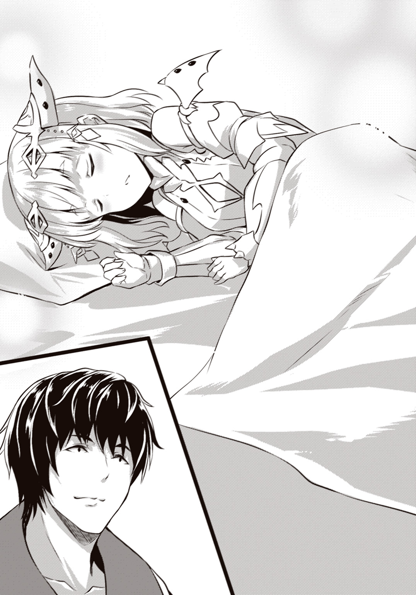

| 俺の家が魔力スポットだった件 4 ～住んでいるだけで世界最強～ | |
| あまうい白一 | |
この本は縦書きでレイアウトされています。
また、ご覧になる機種により、表示の差が認められることがあります。
 ダッシュエックス文庫DIGITAL
ダッシュエックス文庫DIGITAL
俺の家が魔力スポットだった件４
～住んでいるだけで世界最強～
あまうい白一
これまでのあらすじ
俺の家は世界有数の魔力スポットに建っていた。
ある日、その力を狙う魔女たちによって、魔力スポットである家と土地ごと異世界に召喚されてしまった。だが、その家に数十年間住み続けた俺の体には異常な程の魔力が貯めこまれていた。
少し叫ぶだけで、ドラゴンをも吹き飛ばせる。そんな力を持っている俺が望んだのは――平穏で平和な生活だけだった。
あふれ出る魔力によって顕現した我が家の精霊、サクラから力の使い方を学びつつ、俺は異世界での生活を始めた。
俺と家の魔力を狙って野蛮な襲撃者が来ることもあったが、俺が魔力を使って生み出したゴーレムによって簡単に追い払えたので全く問題にならなかった。
家に来るのは危険な連中ばかりではなかった。俺に様々な知識をくれる、ヘスティという謎の幼女もいた。彼女から常識を教えてもらったり、俺をこの世界に呼びだした魔女にして第二王都プロシアの姫、ディアネイアと仲よくなったりしながら、俺は平和な日常を続けていく。
だがある日、俺の家に白の竜王を名乗る奴が戦いを吹っかけてきた。
俺の安住の地を壊そうとする奴は、許せない。そう思った俺は自衛のために学んだ魔法を行使し、圧倒的な力で竜王を打ち倒した！
そこで俺は竜王の正体を知る。竜王はへスティだったのだ。彼女が今回の戦闘に至ったのは、竜と俺との全面戦争を回避するためで、訳ありだったと。詳しい事情を聞いた俺は、へスティを少し叱った。
「困っているなら言ってくれ。話すチャンスがいっぱいあったんだから、相談してくれよ」
その言葉にヘスティは頷き、どうにか彼女と和解することができた。それどころか、竜の住処に戻れぬ、という彼女に、我が家の一部を貸すことになった。こうして俺は竜王の友人兼同居人を得るのだった。
竜王の同居人を得た俺は、相変わらず魔力を狙ってくる物騒な奴らを追い払いながら、気楽な毎日を過ごしていた。そんな時、新たな竜王――アンネが俺の家を訪ねてきた。
ヘスティと知り合いである彼女は、我が家と街の間の地下に巨大なダンジョンができていることを伝えに来たのだ。そしてディアネイアはその対策に走る。だが間に合わず、モンスターの大群が街の周辺や、俺の家の近辺に発生してしまった。
ダンジョンのモンスターは強力でディアネイアはボロボロになるが、俺の新たな技と武装で、モンスターやそれを生み出すダンジョンマスターを打ち倒し、平和な日常生活を取り戻したのだった。
ある日、ディアネイアからプロシアに店を出さないか、との誘いを受けた俺は、今までに培った魔法技術を用いて街にリンゴジュースの店舗を建築する。
近いうちにプロシアでは祭りが開催されるとのことで、俺やサクラはワクワクしながら店の準備を続けていく。
だが、そこに問題が発生する。巨大な竜王、ラミュロスがプロシアに落下してきたのだ。大惨事を避けるために、ヘスティはボロボロになりながら、街を救おうとする。
俺はそれに協力し、どうにかラミュロスを無事に地上に降ろすことに成功した。そしてプロシアの祭りは問題なく開催できるようになる。その話を聞いた俺は、サクラやヘスティたちと自宅でゆったりしながら、祭りに向かう鋭気を養うのだった。
一方、ディアネイアのもとにはアンネが訪れていた。そして、プロシアで戦争を起こしかねない強力な存在が立ち現れようとしている、という情報を伝えていたのだった......。
朝、俺は成長した家の前に立っていた。
「我が家も、一日で随分とでかくなったな......」
「はい、主様と一緒に温泉に入ったことでいっぱいできちゃいました......」
サクラは顔を赤らめて呟いた。
昨夜、俺とサクラは普通に触れあいながら、普通に温泉に入っていた。その後少し盛り上がったこともあり寝床でも触れ合っていたのだが、その結果、家の方は十階層も増えていた。
ビックリする成長具合だ。
というか、簡単に成長し過ぎである。
とりあえず、最上階の安定を保つために、地下に埋めたり、離れを作ったりしたけれども。
「あの温泉、子作りというか、家づくりにも効果あったんだな」
「そうですねっ。また、入りましょう、主様！」
肌がつやつやになったサクラは楽しそうに言ってくる。
よっぽど温泉が気に入ったらしい。
「階層がもっと欲しい時は、温泉に入るようにしようか......」
「はい、その時のためにも、浴槽のお掃除をしてきますね！」
そう言いながら、サクラは温泉の方に走っていった。
......とりあえず温泉の管理は彼女に任せておけば大丈夫かな。
なんて、思っていると、
「こんにちは。祭りの情報をお伝えに――って、うわあ......!?」
ディアネイアが庭の方からやってきて、家を見るなり驚いていた。
「こ、これまた大きく増築したな。何かあったのか？」
「まあ、色々あったのは事実だ......。というかディアネイア、今日から祭りなんだろ？ 街にいなくていいのか？」
今日から三日の間、プロシアでは建都市記念日だかなんだかで、祭りに入る。
多くの露店が出て、様々な催しが開かれるとディアネイアからは聞いていた。
だから、姫としてプロシアを治めている彼女だって色々と仕事があったりするだろうに、こっちに来て大丈夫なのか、と思ったりする。
「ああ、初日の昼間ということで街に人も多くなるが、平気だ。準備をしたら、あとは商人や騎士団長の仕事だからな。比較的自由に動けるのだ。......報告などは逐一受けて動かなければならんが、まあ何日も徹夜することに比べたら楽なものさ」
そう言ってディアネイアは苦笑する。彼女が楽だというのならば、別にいいのだけれども。
「というか、行くと決めてから聞くのもなんだけど、プロシアの祭りって何をするんだ？」
俺は概要しか聞いていないんだけれども。
「ううむ、ダイチ殿にはあまり説明していなかったが、プロシアは精霊信仰と魔法の研究が盛んでな、この祭りで精霊を祀り、祝うのだ。それと同時に魔法の研究発表や売り出しをする」
「へえー」
「そのため、客も強い力を求める冒険者や魔法騎士などの兵、また学者が多くなる」
ディアネイアは困ったような表情で言った。
「それは治安とか、大丈夫なのか？」
聞いた感じでは、物騒な人間ばっかり集まりそうな気がするが。
「その辺りは問題ない。何年か毎にやっている祭りだから、この辺の冒険者には言い聞かせてあるし、遠方から来るものでも礼儀を守らせるくらいの警備はしてある。第一王都の王女など、偉い立場の者とかも、結構来るしな。挨拶するのは面倒だが」
「へえ、お偉いさんも来るのか。大変だな」
と、俺が頷いていると、ディアネイアに目を丸くされた。
「いや、あの、私からすると、ダイチ殿もかなり偉い立場なのだが......」
「え？ 俺は一般人だろ」
立場なんて何もないぞ。ただ森で静かに暮らしているだけの男なんだから。
「......一般人というよりは逸般人という気もするが......まあ、その辺の認識の違いは置いておくとしよう。とりあえず祭りの最中は来客も多いけれど、先ほど言った通り物騒な輩と鉢合わせしたりはしないので、安心してほしい」
「おう」
「もしかしたら喧嘩っ早い奴が来るかもしれないが、貴方なら出くわしたとしても何てことないのだろうけどな。むしろ出会った強者の心がぽっきりいきそうだし。ただ、そうであっても物騒な面子には絶対に、絶対に会わせないので！ どうか本当に安心してほしい！」
「お、おう。安全面のアピールが凄まじいな」
やけに気合いが入った言葉だった。まあ、それだけ祭りに対して気持ちが入っているということなんだろうか。
「それじゃ、安心して観光させてもらうわ」
「ああ、そうしてくれると嬉しいよ。街には貴方の知り合いもいるし、存分に騒いでくれ。ダイチ殿には迷惑をかけてばかりだからな。ぜひとも私の街でゆったりしてほしい。――それと、プロシアの祭りに来る人々は魔力への耐性があるから、出会っただけで漏らしたりはしないから、その点も安心してほしい」
「うん、そうだな。そこは大事だな」
祭り中に大惨事になったらたまらないからな。そうなったら、別の意味でカーニバルになってしまう。
だから、しっかり魔力を抑えるコーティングはしていこうと思う。ただ、
「念のため、ってわけじゃないけれど。昼間に人が多いなら、夜に行かせてもらうわ」
そう言うと、ディアネイアは小さく頭を下げてきた。
「うむ、そうか。ありがとうダイチ殿。お気遣い感謝する」
「礼を言われるようなことじゃないさ。俺が人ごみの中を歩くのは好きじゃないだけだからな」
大量のリンゴを搬入するから、人が少なくなった夜の方がやりやすいだろうしな。そう言うと、ディアネイアはほほ笑んだ。
「ふふ、そうか。でも、やはりありがとうと言わせてくれダイチ殿。私の街の祭りに、貴方が来てくれるのはとても嬉しいことだから」
そう言って会釈をした後、ディアネイアは去って行った。
こうして俺の夜のスケジュールは決まった。
......街の祭りで気の合う仲間たちと騒げるのは、楽しみだな。
そんなことを思いながら、俺は街に持っていくためのリンゴとゴーレムを家から運び出すのであった。
ディアネイアの訪問からしばらくして。俺が庭でゴーレムをいじっていると、白い服を着た幼女――ヘスティが目元をこすりながらやってきた。
「ふわ......おはよう」
「おう、おはようへスティ」
「ん......変わった魔力の波動を感じたから、起きた」
さすがは竜王だ。寝ている間でも魔力を感知できるらしい。
「なにを、しているの？」
ヘスティの視線は俺の手元に集中していた。
いつもと違うことをしていたから、魔力の波動とやらも変わったのだろうか。まあ、それはともかく、
「いや、ゴーレムを小型化しようと思ってな」
「ん、なんで？」
「街の店で店員をやってもらうつもりだけど、店内の広さは限られているからさ。小さい方がいいと思ったんだ」
「ああ、なるほど」
ゴーレム店員はいいアイデアだと思ったんだが、店は広くない。それ故の小型化だ。
そうすれば、スペースを広く確保できるからな。
小さくする方法は圧縮と、材料削減の二つを考えた。
圧縮を試してみたが重くなって動きが鈍るのが分かった。
なので、まずは単純に、ゴーレムにする樹木のサイズを変えてみた。
通常時の半分ほどの丈の樹でいく。
すると、ゴーレムの大きさも半分くらいになった。
「うん、大きさの面では成功だが......あとは性能だな」
そう思って、俺はゴーレムに庭石を運ばせた。
普通の大きさのゴーレムであれば、余裕で運んでくるのだが、
「......ちょっと馬力が弱いな」
小型ゴーレムでも自分よりも大きな岩を持ち上げることはできた。だが、重さに負けて、ほとんど動けていない。
「岩一つ運ぶのも無理か。材料を少なくすると弱くなるのか」
「......ん、その、ゴーレムとしては十分、強いと思うよ？ あの大きさの岩、普通、持ち上がらないし」
「そうか？」
まあ、店舗内でしか使わないんだとしたらこれでも十分かもしれない。持ち上げるものはせいぜいリンゴの入った箱くらいだし。リンゴを絞るくらいの握力だってある。
......ただ、なあ。
もうちょっと性能も追求してみたくもある。
「どうせ小型化するなら、色々な場所で使えるようにしたいんだよな」
「そうなの？ ......では、別の素材を混ぜてみたら？」
「別の素材？ ゴーレムにか？」
「ん、杖作りとかではよくやる。魔力の充塡量が足りない場合は、鉱石を混ぜる、とか」
「なるほどな。流石はモノづくりの熟練者だ」
小型化ばかりに注目して、材料の方に目がいってなかった。
たまには他の素材も使ってみるか。
幸いにも地下のダンジョンから精製された魔石が、庭にいくらか転がっている。
軽く入れてみよう。
「ええと、樹木に魔石を取り込ませて、と」
「......!? そのまま入れるの!?」
「え？ 駄目なのか？」
拾った魔石をそのままゴーレムの体とか腕に押しこんでいたら、ヘスティに驚かれた。
何故だ。鉱石を混ぜるのはヘスティもよくやるんじゃないのか。
「普通は粉末にしたり、小さく砕いたりしたのを使う。でないと、魔力のコントロールが難しくて正常に動かないから」
「そうなのか。早く言ってくれよ――って普通に動いてるぞ、ゴーレム」
「......ん？」
ヘスティの視線の先を見れば、魔石を混ぜたゴーレムが、自分以上に大きな岩を高らかに持ち上げて走り回っていた。
止まれ、と命令すれば止まるし、コントロールも万全だ。
「おお、持ち上げられるようになったし、意外といい調子じゃないか？」
「そうだね。......やっぱり我の常識、アテにならないかも......」
ヘスティは肩を落としながら、庭石を上げ下げしているゴーレムを眺めている。
ちょっと悲しそうだし、何か悪いことをした気分になるよ。
「まあ、気にしないで。アナタが気にすべきは、あのゴーレム」
「え？ なにか気にかかることでもあるのか？」
聞くとヘスティはこっくりと頷いた。
「ん、魔石を入れただけで、馬力が上がり過ぎ。普通は、ああならない。たとえ、大きい魔石を入れたとしても、不可能」
ううむ、不可能と言われても、俺は手元にあった材料を合わせただけなんだけどな。
「んー......もしかすると、この家の地下ダンジョンから採れた魔石だから、こんなに馬力が上がってるのかも」
「なるほどなあ。今まで温泉くらいしか利用法がなかったけれど、良い素材が採れるんだな、ウチのダンジョンは」
ならば、ちょっと地下に潜って取ってこようかね。
そうすれば、夜までには何体かできそうだしな。
そう思った俺は、ヘスティと共に家の地下へ向かうことにした。
我が家の地下へと降りると、広い空洞が出迎えてくれた。
「うーん、サクラがいない状態で入るのは久しぶりだなあ」
「そうなの？」
「おう、ここは広いからな。サクラの同期で道を確かめつつ、目的地に一直線で行ってたんだ」
でも、今回は目的地がない。
ただ壁を構築している魔石や素材の収集をするだけだ。
「だからまあ、適当に進んで、適当に掘ればいいよな」
「ん、そうだね。というか、入り口から既に高品質の魔石が、壁になっているね」
そう言って、ヘスティは俺たちが降りてきた階段脇の壁を見た。
なんだか緑に光っているけれど、これが高品質の証なんだろうか。
「そう。凝縮した魔力が、光に変換されてる。つまり、それだけ魔力を貯めこんでいる、証拠」
「へー」
本当にヘスティは詳しいな。一緒について来てもらってよかった。
俺には、どの石が、どの土が良いんだか全然分からないしな。
「光ってるのを集めれば良いのか？」
「ん、基本的には、そう」
「了解。......ああ、でも、このダンジョンの壁、基本的にどこも光ってるんだけど、どこを採取すれば良いんだ？」
「......」
そう、我が家のダンジョンは、上下左右の壁が大体光っている。
だから松明とかライトとかなくても普通に歩けてしまうくらい明るい。
「あー、うん。......これは、どこが一番いいのか、我にもわかんない。予想外だから」
わあ、ついにヘスティが説明を投げてしまった。
ぷいっと視線をそらしているし。
微妙に拗ねてるような気もする。
「だって、このダンジョンみたいなの、見たことないし、知らないもの。我、他の竜王が作っていたダンジョン、見たことあるけど、ここまですごくなかったし。どこの高難度ダンジョンよりも、素材に溢れているから、比較しようが、ない」
「そうだったのか」
というか、ダンジョンって竜王も作るんだな。
ダンジョンマスターだけかと思っていたぞ。
「うん。竜王がダンジョンマスター代わりになって、モンスターを作成して、使役している場合が、ある。また、竜王の体に精霊が憑依して精霊のダンジョンを構築したりすることも、ある」
「......精霊が憑依って凄いことを言うな」
「まあ、一例。我とかは、憑依されたりしないけど。精霊と相性が良すぎると、憑依されやすくなる。竜王の中にもそういう奴がいる」
まあ、スライムに乗っ取られる竜王がいるくらいだし、精霊に乗っ取られる奴もいるんだろうなあ。理屈はよく分からないけれども。
「というか、ダンジョンにも種類があるんだな」
「ん、結構、分類ができる。精霊のダンジョンの場合はモンスターではなくて、精霊が住まうダンジョンになるから、分かりやすい」
分かりやすい、と言われても、俺からするとダンジョンというものは我が家のコレしか見たことがないので、比較できないんだけどな。
「しかし、ウチのダンジョンはどういう分類になるんだろうな」
モンスターは今のところ出ていないし、あるのは温泉と魔石と、あとは水脈と広大な空間くらいだろうか。
「ちょっと判別、不明かな。あと、高濃度の魔力が含まれた温泉も、源泉のままだと、結構酷いトラップに、なるよ？ ......我とか、食らったら、多分動けなくなるし」
そういえば、ヘスティは温泉の湧き出ている場所に一切近寄らなかったなあ。
「まあ超高難易度ダンジョンであることは、間違いないと思うけど、ね。素材は異様に高品質で、上にはアナタがいるし」
「超高難易度って......俺が関係してるのかよ」
「だって、このダンジョン、アナタの家の一部で、アナタのモノだから」
俺が難易度の指標になるってのも、変な気分だ。
まあ、難易度がどうあれ、我が家のダンジョンに見知らぬ奴を進んで入れる気は全くないんだけどな。今のところ、侵入者はいないが。
「でも、とりあえず、良さそうな素材ばかり取れるのは有り難いな」
「ん、そうだね。ここは、見つけたところから、取れば大丈夫そう」
「了解。適当に採っていくかー」
そのまま、俺とヘスティは、持ってきた袋がいっぱいになるまで魔石を集め続けた。
かなりの量になったが、ゴーレムに使いきれなくても、他の利用法もあるしな。
持ち帰れるだけ持ち帰ることにした。
ダンジョンから魔石を持ち帰ってきた俺は、ヘスティと共にゴーレムに魔石を押しこんでいた。手足に込めたらどうなるか、とか、体の内部に押しこみまくったらどうなるか、とか何度かの実験を経て、
「よっし、とりあえず小型ゴーレムは完成、だな」
「ん」
どうにか、スリムで小さめなゴーレムを五体ほど、作成することに成功した。
普通に作れば三メートルくらいあるゴーレムだが、この小型ゴーレムは一メートルそこそこ。体格も大分、細くなっている。
外見は後回しにしたので少し格好悪いが、とりあえずは完成だ。
「細かいところは時間のある時に調整するとして、うん、なかなか良いんじゃないか？ ゴーレム、庭石を運んでくれ」
命令もしっかり聞いて、最初は持ち上げるのすらやっとだった庭石をいくつも担げている。
「ん、構成の三割くらい、魔石になった、ね」
「おう、これがベストっぽいからな」
樹のゴーレムはぬくもりがあるというか、動きが柔らかなのだが、魔石の割合を多くすると動きがカクカクするようになる。
「......あまり入れ過ぎるとゴーレムが硬くなりすぎて、触れるだけで人体を傷つけそうな動きになるわ、スムーズに動かず自壊を始めるわ、危なかったからなあ」
だから、今のところの最適な割合が、三割だ。
これなら樹木の柔軟性と魔石のパワーが上手く嚙み合う。
庭石を担いだまま、小走りすることも可能だしな。
「――って、ストップだ、ゴーレム」
小走りしているゴーレムの前方に、ゴロンと寝転んでいる豊満な体を持った女性――ラミュロスがいた。
「くかー」
涎を垂らして完全に寝ている。
「......なんでラミュロスはこんな所で寝てるんだ？」
昨夜はヘスティの小屋に運んだはずだが。
「寝相、悪い。昼寝して、ここまで転がってきたんだと、思う」
ああ、寝たまま小屋の外に出てきたのかよ。というか、ここで寝てられると邪魔だな。
「ゴーレム、庭石置いて、その寝転んでる奴を庭のベンチに運んでおけー」
小型ゴーレムは俺の命令に従って、ラミュロスを持ち上げた。
瞬間、ゴーレムの足元が地面にめり込んだ。
「なあ、ヘスティ。......あいつ、岩よりも重いっぽいんだけど、どうなってるんだ」
どうやら見た目通りの質量じゃなさそうだぞ。
「人化が未熟なだけ。......でも、普通に竜王の体を持ち上げられてるあたり、そのゴーレム、おかしい性能になってる」
「そうなのか？ でもまあ、そんなに重い物を持ち上げられれば、パワー方面においては、合格だろうな」
小型化しても、これなら力仕事も楽々できるはずだ。そう思っていると、
「......んあー、揺れるー」
「お、起きたか、ラミュロス」
小型ゴーレムがベンチまで運ぶと同時に、ラミュロスが目を覚まして顔をこちらに向けた。
「ここあったかい。ありがとうダイチさんー」
「いや、別にそれは良いんだけどよ。お前、いつまでここで寝てるつもりなんだ？」
魔力不足はもう大分治ったと聞いたが、空に戻らなくていいんだろうか。
「うーん、ヘスティの部屋の居心地が良くてねー。あと、鱗が全回復しないと、ボク、空の環境に耐えられないからね」
別にくつろぐのは構わないんだけどさ。
一応、ヘスティに貸している場所だから、彼女の意見も聞いておこう。
「どうするんだ、ヘスティ」
「とりあえず、......そろそろ追い出そうと思う。アンネの家とかに押しこめば、そこそこ働くだろうし」
「そ、そんなー。酷いよー」
「酷くない。猶予はあげている。というか、話をするときは、体を起こせ」
ヘスティは小さな体をうんと伸ばしながら、色々と大きな体をしているラミュロスを起こそうとしている。
......向こうはヘスティに任せようかな。
そう思いながら、俺は自分のもとに戻ってきたゴーレムを見やる。
岩よりも重いラミュロスを運んでも、ひび割れ一つない。
......利用してみて分かったが、魔石というのは本当に有用だな。
組み込むだけでパワーが上がる。
それこそ、魔石で構築した腕とか作ったら、かなりの威力が出そうだ。
「ウッドアーマーとかに外付けできれば、堅い岩盤とかも簡単に打ち抜けるようになるかねえ......」
そうなれば、庭造りやダンジョン探索はより簡単になる。
同期すればいい話だが、自分一人でもできるようになるのは有り難いし。
......でも、その腕を作るには、魔石が足りないか。
小型ゴーレムを五体ほど作ったら、もう魔石が空になってしまった。
新しいモノを作るにせよ、小型ゴーレムを量産するにせよ、まだまだ数が必要だ。だから、
「よっし、材料足りなくなったから、昼飯食った後、もう一度行くか」
昼食で腹を満たした後、俺は二度目のダンジョン探索をすることにした。
隣には、ラミュロスとの話を終わらせたヘスティもついてきている。ただ、
「話の後でアイツ項垂れていたけど、いいのか？」
「大丈夫。楽天家だからあれくらい言ってやってちょうどいい。ああ見えて、竜王としての力もある。だから、何かしら働くとは思う」
流石は幼馴染みというか、よく知っているな。
「ん、まあ、付き合いも長いからね。――っと、そこに金属の鉱石が入ってる」
「おう、ありがとうよ」
ヘスティがついてきてくれると、使えそうな素材を目ざとく見つけてくれるので、とても有り難かったりする。
というか、俺があんまり素材やアイテムについて詳しくないというのが大きいんだけどさ。
「ん、ここのダンジョン、色々見つけられて、ちょっと楽しい」
ヘスティもテンションが上がっているようで小さくスキップしているし、まあいいか。
そう思いながら、俺たちはダンジョンをズンズン進む。
「あ、そこに希少な金属がある」
そう言って、ヘスティは紫色をした金属を指さした。
「杖に取りつけると、魔力の精錬速度が上がる。......普通は密集して埋まってないんだけど、ここではまとめて、いっぱい取れそう」
「んじゃ、採っておこう。ディアネイアへの土産にでもするか」
「こっちは、マジックアイテムの材料」
そしてまた、ヘスティは違う個所を指さす。そこには白い球根みたいなものが埋まっていた。
「地中でのみ生える植物。......我が知ってるものの二倍くらい大きくなってるけど」
「アンネへの土産だな」
「これ......なんだろう。見たことない」
さらにヘスティが指差したのは、ぶよぶよとした感触の塊だ。
「良い香りがするし、多分、魔力の塊か何かだと思うんだけど......」
「あとで調べればいいから、取るわ」
そうして俺は使えそうなものや珍しいものをザクザク取っていった。
ザクザク取れ過ぎて、途中からヘスティの表情が微妙に真顔になっていたが。
「あれ？ どうしたヘスティ。そんな顔をして」
「......なんというか、これほど希少物が多いって、異常。本当にこのダンジョン、資源が豊富すぎる」
「豊富なのは良いことだろ」
「ん、そうだけど。......ここを見て、我の中の通常基準を崩さないように頑張る。あくまでここのダンジョンだけだと、認識するように頑張る」
そう言ってヘスティは目元をぎゅうっと押さえた。なんだか頑張り方がおかしい気がするが、今は置いておこう。ともあれ俺とヘスティは希少素材に釣られるようにして、洞窟の奥まで止まらずに進んで行ったわけだが、
「あれ？ どこだ、ここ？」
「んー......迷った、ね」
いつの間にか、深いところまで行き過ぎたようだ。来た道が分からん。
「結構な入り組み方してるのに、一気に潜ったからなあ」
景色がそこまで変わらない、というのも迷った原因だろう。
「ん......でも、アナタ、あんまり困った顔、してないね？ 洞窟で迷子って、結構、死活問題だと、思うんだけど」
「そりゃなあ。でも、どうしても道が分からなかったら、垂直に穴を作って登れば出れるからいいだろ」
そう言ったら、ヘスティに啞然とされた。
「あれ、そんなに口をあんぐり開けてどうした？」
「いや、だって。ダンジョン、だよ？」
「ダンジョンだってただの洞窟だろう？ だったら垂直に穴を追加してもいいじゃないか」
「......」
あれ、黙ってしまった。どうしたんだ、と思いながらヘスティを見ていると、静かに言葉を返してきた。
「......そんな脱出方法を思いついたのはアナタが初めてだよ。というか思いついても普通、できない......」
「いや、ゴーレムを作れば穴は掘れるし、何なら自宅と同期してブロック単位で土地を動かせばいいだけだし」
一応、おやつとしてリンゴは持ってきているし、そうでなくても地下とはいえ、自宅にいるんだから、敷地を操作できるのは変わらないんだよな。
「うん、そうだね。アナタはできるんだったね......」
「ま、だから、特に心配せず、素材集めようぜ」
「ん、了解。......っと、ちょっと待って」
ヘスティと喋りながら進んでいると、彼女が足を止めた。
また素材でも見つけたんだろうか。
「魔力の反応が、ひとつ、ある」
そう言って指差した壁にはポッカリと大きく空いた穴があった。
「なんだこの穴は」
ダンジョンが拡張された、というよりは新しく掘られた感じだ。
モグラでも棲みついたんだろうか。
「どうする？」
「うーん、夜までには、まだまだ時間的に余裕があるからな......」
何かあるかもしれないし、穴に入ってみよう。
こんな深いところまで、また来るかどうかも分からないしな。
「まあ、素材とかがなさそうなら、即撤退ってことで」
「ん」
そのまま俺たちは、拡張された穴の方に足を踏み入れていく。
穴の入り口は大きかったが、深くはない。
魔石の光で奥まで照らされているので、すぐに突き当たりが見えてしまった。
「なにかあったか、ヘスティ？」
「ん、魔石があるだけ。さっきの妙な反応は、まだあるんだけど、見つからない」
「そうかー。んじゃ、俺は反対側を探してみるわ」
俺は家と同期しながら、おやつ用のリンゴから木を育て、ゴーレムを作った。
仮に希少素材が埋まっていても、ゴーレムの腕力があれば掘り出せるしな。
それに、帰る時はコイツに乗っていけば早いし、一石二鳥だ。
そう思いながら洞穴をキョロキョロとしていると、
「むうっ......」
不意に、ヘスティがうめいた。
「どうした？」
俺がヘスティの方を見ると、
「キシャアッ！」
なにやら半透明をした人型の生物がヘスティに飛びかかっていた。
「ん、敵、なのかな？ 魔力の反応があるから、とりあえず、迎撃する」
ヘスティは首を傾げながらも、半透明の生物を腕で叩き落とした。
「――あれ、砕けない？ ってことは、ちょっと、強い？」
すると、今度はその生物が俺の方に来た。
モンスターなのか何だかわからないけれども、とりあえず敵意があるなら、
「ふむ、とりあえず、押さえ込むか。ゴーレム」
ゴーレムはその腕を、半透明の生物の上に振り下ろした。
ゴスン、という重い音と共にゴーレムの腕は命中し、
「 」
」
か細い声を上げて、半透明の生物は、その場で動きを止めた。そのままゴーレムの体を使って、奇妙な生物を押さえ込んでいると、ヘスティが走り寄って来た。
「結構、強かったのに、あっさり捕らえるなんて......。すごい。でも、大丈夫？」
「別に何ともないぞ。ヘスティも大丈夫か？」
「我も、問題ない」
「それならいいんだが。というか、流れで迎撃しちゃったんだけど、――なんだコイツ？」
襲いかかってきた生物はゴーレムの腕部分を細く伸ばして、グルグル巻きにしてあるのだが、
「きゅう」
捕らえたのは五〇センチくらいの、二本足で立っている生物だ。
微妙に透けているので、ヒトではないのは分かるが、
「コイツ、なにか知ってるか、ヘスティ？」
「......多分、精霊、かな？ 地中の魔石に潜んでいたのかも、しれない」
ヘスティは首を傾げながらもそう呟いた。しかし精霊か。
こっちの世界に来てサクラ以外の精霊を初めて見た気がするな。
「まあ、体が実体化するほどの精霊はこの世界でも、珍しい方だから。アナタの家の精霊は、例外中の例外だけれども」
「なるほどなあ。でも、なんでコイツは我が家の地下に不法侵入してるんだ？」
「分からない。住み着いたんだとしても、この地は、普通の精霊の住処にふさわしくないはず。いくら実体化するほどの精霊でも、この地の魔力には、耐えられないはず。襲ってきたのは、この地下の魔力を摂取しすぎて暴走したから、かも」
その辺りの知識は俺にはないので判断がつかんが。まあ、この場に放置しておくのは良くないのか。
「それなら、一緒に外に連れ出してやろうかね」
襲ってきたから、迎撃したけれども。もしかしたら迷い込んだだけかもしれないしな。
「ん、分かった。――ところで、出る方法は？」
「ああ、さっき同期してたら道も分かったから大丈夫だ。自動で帰れる」
先ほどゴーレムを作っている時に脱出ルートは検索してある。
「え、もう帰り道が分かったんだ」
「まあ、ここも我が家だからな。......予想以上に地下深いところまで潜っていたけれど」
今までで一番深く潜っていた。とんでもないところまで来てしまったようだ。
「......そんなに深い所から、地形を把握できたの？」
「おう、――ってことで、帰るかヘスティ。帰りはゴーレムに乗ると楽だぞ」
「う、ん。じゃあ、一緒に乗せてもらう、ね」
そのまま俺たちはゴーレムに乗って、精霊一柱をお持ち帰りしつつ、ダンジョンの深部からあっさり帰宅することになった。そして地上に戻るなり、
「......なんというか、アナタは本当にすごいね。一緒にいるだけで毎回驚けて、楽しい」
そう言って、ヘスティは小さくほほ笑むのであった。
夕日が差し込む頃。ディアネイアは執務机の上でぐったりとしていた。
「ど、どうにか部隊の配置が終わったぞ......」
ダイチのもとから帰ってきて、資料を見ながら魔女や騎士団への指示を出し続けてきた。
お陰でヘトヘトだが、これならたとえ竜が落下してきても、大丈夫な配備ができた。
各部隊には、防御魔法も持たせているし、守りは万全だ。
アンネには、他の竜王が来たらすぐ報告を得られるように、見張り台の方に行ってもらっているので、竜王対策も、とりあえずはオーケーだ。
「うーん、でも、終わって良かった」
背筋を伸ばして、窓の外を見ると、祭りの賑やかな様子が目に入った。
そして楽しげな声も聞こえてきた。この楽しげな中に、あの人と一緒にいけるのは、本当に有り難い。暗くなるのが楽しみになってきたな、と思っていると、
「姫さま！ 緊急です！」
騎士団長の慌てた声が聞こえた瞬間、前のめりに倒れそうになったが、どうにか持ちこたえて団長の方へ向いた。
「......またか!? 今度はなんだ？」
「姫さま、下に、王女様が到着されたとのことです」
「は、はあ？ もう来たのか!?」
早すぎるぞ。最初の連絡では今日の夜中とか、明日の朝とかになると聞いていたのに。
「祭りを楽しみにしてらしたようで、早々に来てしまったそうです」
「ぐ......そんなことを言われては何も言えんではないか......」
「それから伝言で『お姉さま、早く来てしまってゴメン。城内の片付けにも時間が必要だろうし、祭りを眺めたいから、城前で待っているよ』とのことです」
彼女らしい言葉だ。会うのは久しぶりだが、言葉を聞いた瞬間、その姿が目に浮かんだよ。
奔放な子だけれども、礼儀は弁えているし、妾の子である自分を姉として慕ってくれているあの王女を。
「よし、ではまず、城に招いて挨拶するから準備をするぞ」
「はっ！」
そしてディアネイアは執務室を出ていく。
プロシアの城前に、二人の女性が立っていた。
一人は綺麗なドレスを着こんだ少女で、にこにこしながら周囲を眺めていた。
「わあ、久しぶりに来たけれど、やっぱりお姉さまの街は賑やかだなあ。それに綺麗だし、面白いものもいっぱいあるし、凄く楽しいよ。カレンはどう思う？」
カレンと呼ばれた、軽装鎧の上にマントを羽織った女性はゆっくりと頷いた。
「そうですね。アテナ王女。私もこういう所に来たのは初めてですが、美味しそうなモノが沢山あって、興味を引かれます」
「ふふ、カレンは相変わらず食いしん坊なんだから」
仮装したり華美な服装をした人が多い祭りということもあり、街の外から二人が歩いてきても誰も気にしなかった。
その中で、アテナは城の前に生えた巨大な樹木に目をやる。
城と同じくらい丈の高い樹木だから、街の外からでもよく見えた。
「それにしても、この大きな樹は、なんだろうね？ 前に私がお姉さまのところに来た時は、なかったのだけれども」
「そうなのですか？ 強大な魔力を感じるので、てっきり街の守り神か何かと思っていたのですが」
「カレンもやっぱり魔力を感じていたんだねえ」
アテナは大木と、それに取り込まれたような店を見ながら呟いた。
「はい、この大きな魔力からして、張りぼて、というわけではありませんね。ただ、こんな巨大なもの、人の身で作れるわけがないので、恐らくは天変地異か異常気象で成長したのかと」
「そっかあ。流石は私の先生のカレン。物知りだね」
屈託なく笑うアテナに、カレンはほほ笑み返す。
「それほどでもありません。私の推測が間違っている可能性もありますし、知識においては、私より上の姉たちがいますし、この世には私の想像を超えているものは沢山ありますから」
「あはは、カレン以上に強い人がいるなら見たいねえ。強い人を見るのは、私も大好きだし」
「そうですねえ......」
そう言うカレンの瞳は、かなり真剣なものになっていた。
「この巨木から感じる魔力は......自然のものではないのだよな。どのような化け物がいたら、こんな現象を起こせるのやら......」
と、カレンが目線を樹木の根元付近に向けていると、
「すみません。お待たしました」
城の方から、立派な鎧をまとった騎士が走ってきた。
「どうぞ、こちらへ。王女アテナ様。そしてカレン様」
「うん、ありがとう騎士団長さん！ それじゃあ行こう、カレン。......本国から受けている指令も伝えなければいけないからね。頑張ろう」
「はい、では行きましょうか」
「噂によると、なんだか強い人がお姉さまの周りにいるみたいだし、会うのがとっても楽しみだよ！」
少女たちは賑やかに会話しながら、城の中へと入っていく。
地上に戻ってきた後、ヘスティは魔石を仕分けすると言って、自分の小屋に戻っていった。
そして俺は庭でゴーレムと共に他の収穫物を整理していたら、サクラがとてとて寄って来た。
「主様。お戻りになられたのですね」
「おう、ただいま」
ああ、そうだ。サクラが来たのならちょうどいいな。
俺はゴーレムに捕らえさせていた小さな精霊らしき生物を見せた。
「そういえばサクラ。コイツが下にいたんだけど、何か知ってる？」
「精霊ですか。いえ、ちょっと分かりませんが、どうなされたのです？」
「下で探検してたら、飛びかかってこられてな。とりあえず、一発叩いて捕まえたんだ」
「そうだったのですか。でも、流石は主様ですね。精霊には物理的な縛りは効きにくいのですが、きっちり魔力の籠もった腕で縛られています」
サクラはゴーレムの腕を撫でながらそう言った。
「......へえ、物理はきついのか」
魔力の込められたゴーレムの縄で縛っておいてよかったな。
「私は許可した覚えはありませんし、主様が地下に住むことを許可したのでなければ、恐らくは勝手に迷い込んできたのでしょう。そして、飛びかかってきたのは、精霊は魔力で体や精神を構築しているので、この土地の魔力を吸い過ぎて、暴走したんですかね」
「暴走、ねえ」
ヘスティと同じことを言っている。二人の見解では力を集め過ぎたことによる暴走、という説が一番有力みたいだな。
「で、こいつどうしようか？」
「主様に押さえつけられたことで力が発散されたらしく、既に敵意はないようです。ただ......二度と主様を害さないように叱っておいたほうがいいですかね」
そう言いつつ、サクラはにっこりと笑いながら精霊に顔を向けた。
すると、精霊はブルブル震え始めた。
というか、首を勢いよく横に振りまくっている。
「ふむ、もうしないとの意思表示でしょうか」
「まあ、さっき俺が一発殴ったし、大人しくもしているし。とりあえず地面に下ろしてやるか」
地面に置いて、ゴーレムの腕を解いてやる。すると、
「――きゅう」
ぺこりと俺に頭を下げて、てててっと離れていった。
あっという間に木陰の向こうに去っていった。
「おー、逃げたのか？」
「いえ、まだあそこにいますね」
「え？」
よく見れば、確かに、木の陰に隠れてこっちを見ている。
何をしているんだか。
「でも、悪い存在じゃないんだよな？」
「敵意はありませんからね。大人しい精霊の一種みたいです」
「なら、放っておくか。そろそろ街に行く時間だしな」
「あっ、そういえばそうでしたね！」
日も落ちたことだし、街に行くには、そろそろいい時間だろう。
「今すぐ準備をしちゃいますね」
そう言って、サクラは旅行鞄を家から運び出し始めた。既に鞄の中には俺の衣服が詰まっている。
「ありがとうな、サクラ。助かるわ」
「いえいえ、私も主様と旅行できて嬉しいですから。思わず準備に気合いが入ってしまっただけですよ」
サクラはそう言ってはにかんだ。彼女も祭りが楽しみなようだ。
「......俺も祭りを楽しむために、小型ゴーレムを作らないとな」
ダンジョンに潜ったのもそれが目的だし。祭り用の小型ゴーレムをささっと作ってしまおう。そう考えて、リンゴの樹木に触れていたら、
「これ、使って」
庭の奥からヘスティが箱を抱えてやってきた。
箱の中には、魔石がどっさり入っている。
「先ほど採取した魔石は我の方で、選別しておいた。これらが、一番硬くて魔力が入ってる奴。加工は難しいけれど、アナタなら間違いなくできるから、持ってきた」
「おお、マジか！ ありがとうよ」
これで小型ゴーレムや、以前言っていた外付けのゴーレム腕を作ることもできる。
ヘスティは気が利くなあ、と思っていると、
「......あ、そういえば、聞き忘れていましたけれども。ヘスティちゃんは私たちと一緒にお祭り、行きますか？」
旅行鞄を庭に下ろしつつ、サクラがヘスティに尋ねていた。そうすると、
「ん......。我も、行ってもいいの？」
ヘスティは俺とサクラに首を傾げて聞いてくる。
なんでそこで俺たちに聞くんだ、と思っていると、
「アナタたち、二人きりを邪魔するのは、よくないかな、と」
真顔で言ってきた。
なんというかこの竜王は本当に気を遣うタイプだな。
思わず、俺とサクラは顔を見合わせてしまった。そして、
「いやいや、ヘスティの好きにしていいんだぞ？」
「はい。主様の言うとおり、遠慮しなくていいんですよ？ 私は二人きりでないのはちょっぴり残念ですが、......それ以上に、皆で楽しんでいる主様を見るのも好きなんですよ」
俺とサクラがそう言うと、ヘスティは困ったような顔で悩んだ後、
「ん......なら、我も、行きたい」
「おう、了解だ。それじゃあ、向かう前に、リンゴを運び出すの手伝ってくれ」
「ん、分かった」
ヘスティは嬉しそうに頷くのだった。
とりあえず、三階層分のリンゴを取りだしてみると、なかなかの量になった。
「ふいー、二〇箱か。かなりの数だな」
「半ば在庫処分ですからね」
ゴーレムに収穫させる量を減らしたとはいえ、時間がたてばたつほど溜まっていく。
俺が新しく樹木にして植林したり、様々な物の材料にしたり、そのまま食ったりと消費するだけでは到底、減らないから仕方ないんだけど。
「さて、あとはこれを運ぶゴーレムを作るだけだな」
俺たちと荷物を運ばせながら街に行くには、大きめのゴーレムを十体くらい作る必要がある。
......ゴーレムの集団行進みたいで見た目は物々しくなるかもしれないが、まあ大丈夫かな。
と、そんなことを思っていたら、
「あのう、ダイチさん。ちょっといい？」
ラミュロスが眠たげな眼をこすりながら、庭に出てきた。
「どうした？」
「あのね、ボクも皆と一緒に街のお祭りへ行きたいんだけれど、いいかな？」
「街へって、別にいいけど、体の方は大丈夫なのか」
昨日落下して、結構なダメージを負っていたはずだが。
鱗もまだ生え変わってないらしいし。
そう言うと、ラミュロスはトンッと大きな胸を叩いた。
「こんな魔力の溢れる土地でいっぱい寝たし、魔力が溢れるダイチさんの近くにいたから回復できたし、平気！」
「すごい回復力だな」
「ダイチさんや皆のお陰だよ。......それにボクも迷惑かけたから、お詫びするためにも、早く治さなきゃって思っていたしね」
ラミュロスは苦笑して頰を搔いた。
「ここまで治れば、ダイチさんや人間さんのお手伝いができると思うんだ。《変身》」
そう言うとラミュロスは、煙を立てて、茶色い鱗を持った竜に変化した。
といっても、先日見た超巨大な竜ではなく、八メートルほどの大きさだ。それでも大きいと言えば大きいが。
「ほら、この姿なら荷物運びもできるし、いいでしょ？ ダイチさんたちも乗せて飛べるし」
「おお、そうか」
荷物持ちはゴーレムに任せて、ゆっくり行こうと思っていたんだが、彼女に乗れるなら早く着くし楽かもしれない。ただ、
「先日落下してきた竜が再び飛んでくるってのもアレだから、街の前までで頼むわ」
騒ぎになっても面倒だしな。
そう思っていると、ヘスティがラミュロスの体を撫でた。そして、
「......念のため、我が魔力隠蔽のコーティングをしておく。これを使えば、脅威に思われることはないから平気」
「おっ、ありがとうよヘスティ」
使えるものはありがたく使わせてもらおう。
「って、そうだ。俺も自分のコーティングをして......っと」
久しぶりだが、やり方は覚えている。
自分に空気のアーマーをまとわせる感じで、迸っているらしい魔力を抑えていく。
「どんな感じになってるか、わかるかヘスティ」
「ん、すごく上手い。この前より、しっかり抑えられてる。......練習してた？」
「ああ、暇なときにちょっとずつな」
でも、ヘスティのお墨付きを得られて良かった。
「これで俺の準備も完了だ」
「ではでは、ボクの背中に荷物と一緒に乗ってね」
と、尻を振るラミュロスに、まずは荷物の箱を載せていく。すると、
「ひゃあっ」
ラミュロスの体がビクンと震えた。
「おう、どうした？」
「あ、うん、御免なさい。そこ、鱗が生えかけて敏感になってるから、声が出ちゃった」
よく見れば確かに周囲の鱗とは、色が違うな。
「そりゃすまんかった。ゆっくり乗るわ」
「うん、よろしく」
そして、ラミュロスに俺たちは乗り込んでいく。
「それじゃあ浮くから、適当なところにしがみついていてね。一応、鱗と魔力を動かして固定するけど」
そう言ってラミュロスは羽ばたき、体を水平のまま浮かせた。
彼女の鱗は硬い割に柔軟で、荷物や俺たちをしっかり固定してくれているようだ。
あとはこのまま楽な状態でちょっと待てば、街に着くだろう。
「お祭り楽しみですね、主様」
「そうだなあ」
賑やかな街並みを見るのは、初めてかもしれない。
そういう意味でも、ちょっと楽しみだ。
「それじゃ、行くよー」
「おう、ラミュロス、頼んだぞ」
「了解！」
そして俺は竜王二人と精霊一人と共に、夜のプロシアに向けて出発した。
騎士団長は城の最上階テラスにいる観測部隊のもとに訪れていた。
「今宵は異常ないかね？」
聞くと観測部隊は軽い声で答えてくる。
「問題ありませんよ、騎士団長」
「そうですよ。こんな警備の厳しい時期に敵なんて来ませんって」
「それならいいが......」
テラスのテーブルを見れば、酒瓶が置いてある。
流石に未開封で、仕事中に飲むほど浮かれているわけではない。
オンとオフの切り替えはちゃんとできるように鍛錬したので、それは分かるが、
「祭りとはいえ初日だからな。気を抜かずにやるように」
「おっす！」
などと、最上階から街並みを見ながら兵士の返事を聞いた瞬間だった。
「っ!? に、西より、莫大な魔力が接近しています！ 数は......四」
「な、なんだと!?」
観測部隊の報告により、最上階に緊張が走った。
気を抜いてだらっと観測していた兵士も背筋を伸ばし、周囲を警戒し始める。だが、
「ああ、皆さん、大丈夫ですよ。落ち着いてください」
その緊張を、最上階の入り口から聞こえてきた、優しげな声が和らげた。
騎士団長が入り口を見ると、そこにはアンネが立っていた。
「あ、アンネ様？ 貴女は確か反対側の見張り台にいたはずでは」
「はい。ですが大きな魔力を感じたもので、こっちに来てしまいました。......この魔力の感じは、やっぱり姉上さまですね。うん、ダイチ様もいらっしゃるようです」
アンネはテラスから虚空を凝視して、そう言った。
そして、ダイチ、という名前が出た瞬間、騎士たちの間に別個の緊張が走った。
ただそれは、少し安心感の入り混じったもので、
「あ、ああ、プロシアを守った英雄か......そうか、良かったぜ」
「本当だ。心臓が飛び出るかと思った。はは......」
と、力の抜けた苦笑を観測部隊は浮かべあった。
「というわけで、何もしなくても大丈夫ですよ」
「そうですね。......ああ、いい訓練になりました。気が引き締まるというものです。あとでダイチ様にもお礼を言わなければなりませんな」
観測部隊の面々の顔つきは大分、引き締まったものに変わっていた。
それに騎士団長は頷きつつも、次の行動に移る。
「さて、ディアネイア様にダイチ様が来られたと報告をしなければ。誰か、伝令を頼む」
そう言って、騎士団長が伝令兵を呼んでいる横で、
「......って、アンネ様？ 何をされているのですか？」
アンネはテラスの縁に足をかけていた。
「ああ、いえお気になさらず。最近の姉上さまロスで魔力が欠乏しかけているので、ちょっとこちらから行かせてもらおうかと思います。ディアネイア様にはそう伝えて頂ければ有り難いです。すぐに戻りますから」
「え......？ わ、わかりまし、た......？」
「では、後ほど！」
そして狼狽する騎士団長を背後に、アンネは城の最上階から力強く跳躍した。
ラミュロスのスピードは速く、数分もしないうちにプロシアまで辿り着いた。
「さて、ここらで降りるか」
今いるのは街の門がある手前あたりだ。この辺で降りて、あとは徒歩で行けば面倒も起きないだろう。そう思っていると、
「主様。前方から、飛来物が」
「え？」
サクラに言われて前を見ると、
「あ・ね・う・え・さまああああああああああ!!」
物凄い形相と勢いでアンネが吹っ飛んできていた。
その様子に対し、ヘスティはすっと手を上げた。
「......魔力使って迎撃していいかな。カウンター気味に入れば、落ちるはずだけど」
「やめとけ。おーい、アンネ。今地上に降りるから、話はそれからで頼む」
「は――――い！」
あんな形相でもモノ分かりは良いようで、素直に地面に降りてくれた。
まあ、降りる途中で、ヘスティに抱きついてきたのだが。
「ようこそです、姉上さま。そしてダイチさまも！ 姉上さまを連れて来てくださって、ありがとうございます！」
アンネは涎を垂らしてヘスティを抱きしめながら、ぺこりと頭を下げてきた。そのせいでヘスティの頭がアンネの胸に埋まる。
「別にアンネのためじゃないというか、コーティングしてるのによく気づけたな」
「姉上さまの魔力ですからね！ 肌で感じれば一発で分かりますとも」
「ホント、怖い......」
抱きしめられながらヘスティは力なく呟いた。なんというかご愁傷さまである。
「まあ、そもそもの話なんですが、ダイチさまの魔力はいくら抑えても抑えきれるものではないのですよ。だから見極める力があるものなら気づけます」
「コーティングはしっかりしてきたんだけど？」
今も外れている感覚はないんだけどな。
「ええ、しっかりされてますとも。ただ、近づくとやはり竜王なみの魔力が漏れているのを感じますのでね」
「なるほどなあ」
ヘスティのお墨付きを得たとはいえ、まだ改良の余地はありそうだな。
「ともあれ、だ。とりあえず、歩きながら話そうぜ。街にも入ってなければ、店までも、まだ距離があるしさ」
「あっ、す、すみません。そうですね」
そんなこんなで、俺たちは歩きながら話をすることにした。
歩き始めてすぐ、アンネの目線はいくつものリンゴの箱を担ぐラミュロスに集中していた。
「ところで、先ほど竜から変化されましたこちらの方は？ かなりの魔力を持っていらっしゃいますが」
ああ、そうか。アンネはラミュロスについて何も知らないんだったな。
そう思っていたら、ヘスティが代わりに答えてくれた。
「そいつが、星の竜王。ラミュロス」
「おお、この方が！ はじめまして、わたし、黒金の竜王をやっているアンネと申します」
ぺこり、と丁寧にアンネがお辞儀すると、ラミュロスは苦笑した。
「はじめましてー、なのかな。幼少の頃の君をヘスティと一緒にお世話した覚えがあるんだけども」
「そ、そうだったのですか!?」
竜王トリオは昔、色々あったんだなあ。というか、この二人は子育ての経験があるのか。
ラミュロスはともかく、ヘスティは面倒見が良いから納得できるけどさ。
「ふむふむ、その辺りの話もお聞かせ願いたいのですが......」
そう言いつつも、アンネは残念そうにうつむいた。
「新たな竜王が来たらすぐに教えてくれとのことなので、一応、ディアネイア様に報告しておかねばなりません」
「おー、そんなことをやってるのか。大変そうだな」
「いえいえ、わたしもディアネイア様には色々便宜を図ってもらってますから。それで、ダイチさま。ラミュロス様をお借りしても大丈夫です？ 先に報告しておきたいのですけれど、よろしいでしょうか」
何故俺に聞くのか分からないけれども、別にかまわない。
そう思ってラミュロスを見ると、彼女は困ったような顔をしていた。
「どうした、ラミュロス？」
「うーん、ボクがこのまま先に行ったら、荷物運びできなくなっちゃうから。ダイチさん、困らないかなって」
「ああ、そんなことか。荷物はゴーレムで運ぶから大丈夫だぞ」
ここまで随分楽させてもらったしな、と思いつつ俺は持ってきたリンゴからゴーレムを作る。
とりあえず四体だ。小型ゴーレムではなく、荷物運び用の普通のゴーレムなので、二十箱くらい軽く持ってくれるだろう。
「相変わらず、素早すぎる作成能力ですね。ここ、魔力スポットでもないんですが......」
「まあ、慣れたからな。――よし、簡単な造形もして積みこんで、これでオッケーだな」
ゴーレムの肩にしっかりマウントさせたので、あとは歩いて運ばせるだけだ。
「こっちは大丈夫だから気にせず行ってこいよ」
「う、うん」
「では、お先に失礼します。また数時間後にお会いしましょう」
そう言って、アンネはラミュロスを連れて城の方へと飛び去っていった。
「......さて、と。んじゃ、俺たちも店に行くか」
先に行ったラミュロスたちを追うようにして、俺たちも街の奥に向かって進んで行く。
ゴーレムに荷物を持たせて、祭りで賑わう街中を進む。
俺の店は城の隣、中心地近くにあるので、そこまでは街並みを見ながらゆったり行く。そのつもりだったのだが、
「......なんか、道をあけられてるようだけど気のせいか？」
大勢の人がいるのに、何故か、俺やゴーレムの前方はスカスカにあいていた。
というか、ゴーレムは注目の的になっている。
樹木のゴーレムなんて珍しくもないだろうにどうしてだろう。
「あの、そこは訂正させて。この大きさのゴーレムは普通、ありえないから」
「そうなのか？」
「ん、戦闘用ゴーレムでも、もうちょっと、小さい。普通はこの大きさで、機敏に動くことは、ない」
戦闘用ゴーレムなんてものを見たことがないので、比べようがないんだが、なるほど。よく分かった。
「わー、すげえ、あれサーカスか何かの出し物かな？」
「すごいすごーい。中に何人くらい入ってるのかな！」
そんな歓声が聞こえてくる方を見れば、道の端っこで子供がキラキラした目でゴーレムを見上げていた。
「こんな感じで出し物扱いされるくらい、珍しいものだからね」
「おう、なんか納得できたぞ」
「あと、まあ、体からそれだけの魔力を流していれば、肌で魔力を感じられる人は避けるよね」
たとえばあそこ、とヘスティが指さしたのは、立派な鎧と剣を装備した連中だ。
冒険者というには、動きがキビキビしているというか規則正しいので、他の都市の騎士だろうか。
そんな彼らは無駄のない動きで俺の方を見つつも、遠ざかっていく。
「避ける人は強い人。避けない人は普通の人か、自信家か、蛮勇の持ち主か。でも......まあ、この街は強い人、多いね。ちゃんと離れるし」
「まあ......色々と言いたいことはあるけれども、店まで行きやすくなるし、ありがたいってことにしておくか」
そして街の人々の注目を浴びつつ、俺たちはゴーレムと共に、店まで辿り着くのだった。
ディアネイアは、執務室でテレポートの準備をしていた。
「王女とのやり取りが終わったら彼のもとに行くのだからな。セッティングしておかねば......」
どうせ王女のことだから祭りは好きに見て回ると言うだろうし、自分は自分で動かせてもらおう。そのつもりで、ディアネイアはテレポートの場所をダイチの店にセットする。
そして、それが終わった頃に、
「姫様。王女様をお連れいたしました」
と、騎士団長が執務室の戸を開けて入ってきた。そして、
「お姉様ー。こんばんはー」
王女が騎士団長を追い越して、執務室に飛び込んできた。
綺麗なドレスを大きく翻しながら、ディアネイアに抱きついてくる。
「うむ、こんばんはだ、アテナ。だが入室の仕方は考えような。王女たるもの礼儀が大事だ」
「あ、はい！ 次から気をつけるよ」
アテナは素直に頷いた。
「なら、ヨシだ。元気にしていたか？」
「うん！ すごく元気だから、強い人を集めて修行の相手をしてもらっていたし、旅程を縮めて、こんなに早く来れたんだよ！」
むふー、とアテナは薄い胸を張る。
そんな彼女の頭を撫でていると、
「アテナ王女、恐れながら、はしたないかと」
新たに一人、入ってきた。姿勢正しく、すらっとした女性だ。
「ええと、貴女は？」
「これは失礼をしましたディアネイア姫。私はカレンといいます。心優しいアテナ王女に拾われて、近衛を務めています」
と、彼女は丁寧に礼をしてくる。その体からは、強い力を感じられた。
この女性が、アテナの言っていた私兵か。
「ああ、よろしく頼むよ、カレン。私のことはディアネイアと呼び捨てで構わないからな」
と軽く返礼をした。
「あのねお姉様、カレンは凄いんだよ。私の戦いの先生でもあるんだから！」
「へえ、そうなのか」
「いえいえ、私が教えていることなんて基本中の基本ですよ」
ふふ、とカレンは笑った。その笑みからも余裕が感じられる。
王女の私兵だ。相当な強者でなければ王も認めないはずだが。
......見ただけで、彼女は相当のやり手だと分かる。
一体どこで彼女を拾ったんだろうか。カレンに聞こうとしたときだ。
「お話し中にすみません、ディアネイア様。ちょっとよろしいでしょうか？ 街に竜王のラミュロス様が到着されたので連絡しに来たのですが――」
そう言いながらアンネが、肉付きのいい女性と執務室に入ってきた瞬間、
「......竜王？」
一瞬で、カレンがまとう空気が変わった。
彼女を中心に莫大な魔力が放出され、ビリビリと大気が震える。
それは、命の危機を感じるほどに。
「貴女たちは......星の竜王ラミュロスと、黒金の竜王アンネ、ですね」
さらにカレンは一発で、彼女たちの正体を見抜いた。
ただ、その事実にアンネやラミュロスは驚かない。そればかりか、
「そういう君は、【最優】の竜王カレン、だよね」
衝撃的な事実を告げてきた。
「アテナの私兵が、竜王......!?」
突然告げられた情報に、ディアネイアの頭はついていかない。だが、頭が回るまで状況は待ってくれなかった。
「久しぶりだねえ。......見た目も力も変わってないなあ」
ラミュロスたちも、魔力を放出し始めたのだ。
莫大な力がぶつかり合い、室内の空気が歪む。
「あ、ああ......」
騎士団長はその力の奔流に飛びのき、執務室付近の兵士たちは既に腰を抜かしていた。
だが、ディアネイアは違った。
......この空気はまずい......。せめて、アテナだけでも逃がさねば......。
誰もが動かない中で、ディアネイアだけが前に出る。
一触即発の空気を感じ取り、アテナの安全を守るための行動を起こした。
「ひゃっ、お姉様......？」
「《テレポート》......！」
どこでもいい。とりあえず、王女だけでもこの場から離さねば。
その思いで、後先考えずにテレポートでアテナを吹っ飛ばした。
......これで、少なくともアテナだけは守れた。
もしもこの部屋が一瞬の内に破壊されても、彼女だけは助けられる。
そう思いつつも冷や汗を流すディアネイアは再び、前を見る。
ラミュロスたちと、カレンは互いに近づきあい、そして、
――パアン。
と大きな音を立てるほど勢いよく握手をした。
「久しぶりですね、ラミュロス！ 元気でしたか！」
「うん、元気だよ、カレンー」
「......え？」
そこから、二人は握り合った手を振る。
とても、仲がよさそうだった。
「それにアンネも！ 元気そうな姿が見れて嬉しいですよ」
「はい、ありがとうございますカレン姉さま」
「......何が起きているんだ？」
ディアネイアは現状を上手く認識できなかった。
先ほどまで一触即発の状態だったのに、どうしてこうなったんだろうか。
分からず啞然とした顔で見ていると、アンネが申し訳なさそうにこちらに頭を下げてきた。
「すみません。カレン姉さまは同族で挨拶をする時、魔力をぶつけ合うのを好んでいまして。物凄く体育会系なんです......」
「......な、なるほどな」
つまり、自分は挨拶を剣呑な雰囲気と勘違いしてしまったというわけなのか。
なんとも恥ずかしい、とディアネイアは頰を赤くした。
「本当に、すみません。事前にお伝えする間もなく始まってしまって。......でも、よく動けましたね」
「え？ 何がだ？」
「カレン姉様の魔力放出ですよ。あれだけの力を食らったら普通の人間は、ああなるのが当然です」
と、アンネは執務室の外にいる、未だに立つことすらできない兵士たちを見た。
「ま、まあな。ダイチ殿に比べたら、この程度、まだまだ平気だ」
これ以上に酷い魔力の奔流を何度も見ているし、なんども味わっている。
......その分だけ、耐性ができている。
竜王では漏らすこともなくなった。本当にダイチには感謝してもしきれない。
「ほら、カレン姉様も謝ってください。部屋がひび割れてしまったでしょうに」
「うむ、ええと......すまない。誤解させてしまいました。この弁償はいずれさせてもらうので許していただけますか」
と、カレンは丁寧に頭を下げてきた。こういうところは礼儀正しい竜王らしいな。
「ま、まあ、弁償してもらえるなら構わないさ」
「ありがたいです。......ところで、アテナ王女はどこですかね？ 挨拶の時に目を離してしまって、いつの間にか消えていたのですが」
「あ」
ディアネイアは今さらながら思い出した。アテナをテレポートさせてしまったことを。
しかも、さっきまで設定していた場所に、だ。
「だ、ダイチ殿のところに、無許可で送ってしまった、か......？」
ディアネイアの背筋に冷や汗が流れていく。
「これは、やってしまったかもしれない......」
店の頭上を覆うように伸びていた巨木を邪魔にならない程度に圧縮して小さくしたあと、俺は店内の片づけをしていた。
リンゴを使って無理やり巨木を生やしたせいで、店が少し歪んでいたりした。
それを直すついでに、荒れていた内部を整えたりと、結構やることがある。
「この分だと出店は明日からになりそうだな」
「そうですね。でも、お掃除とかもしたかったのでちょうど良かったです」
サクラはそうほほ笑みながら、リンゴの箱を積み上げていく。
「よいしょっと。とりあえず、この辺りに置いておきますね」
「おう。ありがとうよ」
あと数箱、外に残っているのでそれも運び入れて、明日の朝にでも小型ゴーレムを稼働させて処理すれば準備は終了だ。
順調順調、と思っていると、不意に、サクラが虚空を見上げた。
「あ、魔力の反応。部屋の中央になにか来るようですよ、主様」
「ん？ 何かって、なにが？」
「ええと、この魔力の感じはテレポートの前兆みたいですね」
「へえ、そんなことも分かるんだな。というかテレポートってディアネイアが来るのかね」
「どうなんでしょう。そこまでは分からないのですが......」
夜は案内するとか、一緒に祭りに行くとか言っていたし、それで来たんだろうか。
そう思って、俺は部屋の中央を見守った。すると、
「こ、ここは......？」
「んん？」
予想とは異なり、綺麗なドレスを着た、見知らぬ小さな女の子が現れた。
アテナは、姉によってテレポートされたことは覚えていた。
......あれだけ激しい魔力の奔流の中で、助けるために動いてくれた姉さまは凄い......。
そんなことを思いながら、テレポートした場所を見回した。
そこは広くてきれいな木造の部屋だった。
周囲にはこちらを見る人々がいた。
......もしかしたら、どなたか知らない人の家に入ってしまったのかも。
そう思って咄嗟に口を開こうとして、
「ぁ......れ......？」
上手く口が開かなかった。
それだけではない。体の震えが止まらなかった。
そこまで体に異常があることを自覚して、ようやく気づいた。
......こ、この女の人の魔力、な、何......？
自分を見ている女性から迸る魔力に気圧されているということに。
そして、その隣にいる男性からも、化け物みたいな魔力が湧きでていて、自分の身をすくませていることに。
......こ、殺されちゃう......。
瞬時に判断したアテナはその場で魔法を唱えようとする。
昔、姉から教わった緊急脱出用の魔法だ。
「き、きんく、緊急テレポー......」
だが、歯の根が合わず、舌が絡む。
上手く声が出せず、魔法を使えない。そんなところに、
「おい、どうした？」
「ひ、......あ」
声をかけられて、はっとした。とにかくこの場は、駄目な場所だと。
すぐに出ていかねば、と辺りを見回し、背後にあったドアに向かう。
――刹那、ドアが開いた。
「ん、追加の箱持ってきた。ここに置けば――って、誰？ この子」
木箱を背負った白い髪の少女と、アテナは軽くぶつかった。
だが、その感触とは裏腹に、感じさせる魔力は莫大なものだった。
「っ!!?」
アテナは咄嗟に後ろに飛び跳ね、こけそうになる。だが、
「おいおい、ふらふらしてるけど、本当に大丈夫か」
そんな彼女の背中を、化け物みたいな魔力の男の手が優しく支えてきた。
「......」
そこまでがアテナの限界だった。
彼女はぺたん、とその尻を地面に落とし、
「あ」
「ふええ......」
そのまま、じょわわっと盛大におもらしをしてしまった。
俺の店に現れた闖入者は、最初とりみだしていたが、今は落ち着いたようで椅子に座っている。びしゃびしゃになった服を着替えた状態で、だ。
「あの、下着を貸していただいて、どうもありがとう......」
「ヘスティの着替えがちょうどぴったりだったからな。礼ならあっちに言ってやってくれ」
「気にしないでいい。コーティングしてても、触れたら駄目なこと、伝え忘れてたのも、あるし」
へスティはそう言いながら、リンゴの箱を店の奥へ運んでいく。
なんというか、この店の洋服ダンスに着替えを置いておいてよかった。
「えっと、あと、店を汚して、御免なさい。えっと......ダイチお兄さん」
名乗ったら自然とお兄さんと呼ばれるようになった。
こそばゆいが、年齢的にはそんなものだから仕方ないか。まあ、それはともかく、
「別に良いさ。床板は張り直すだけで綺麗にできたし。――で、アテナだっけ？ 君はディアネイアのところから来たんだよな」
「う、うん。そうだよ」
既に軽く事情は聞いている。
なんでも、城で喧嘩沙汰が起こりそうになって、こっちに飛ばされてきたらしいが、それなら、近い内に迎えが来るだろう。
城は隣だし。俺も忙しいわけでもないし、短時間、預かるくらいは別に良い。
夜中に外へ放り出すわけにもいかないしな。
......まあ、いきなりテレポートさせてきたことについては文句を言わせてもらうが。
そして、アテナにとっても突然だったからか、まだビクビクしていた。
「なあ、アテナ」
「ひゃ、ひゃいっ！ な、なんでしょうか！」
声をかけただけでもこれだ。体を固くされる。
「あー、その、そんなに気張らなくていいぞ？」
「は、はい！」
駄目だ。ガッチガチだ。
このまま緊張させっぱなしだと、また漏らす可能性がある。
代えたパンツもびしゃびしゃになって無駄になるし、床を汚されるのもよくない。
......緊張しないでもらえればいいんだけどなあ。
さて、どうしたものかなあ、なんて思っていると、
「......んく」
アテナが不意に、唾を飲み込むような音を出した。
なんだと思って彼女の視線の先を見れば、カウンターでゴーレムがジュースを試作している姿があった。
「んーと、アテナ。喉は喝いてるか？」
「え？ あ、その......ちょっと、喝いてます」
緊張で汗やら何やら、出しまくっていたからな。
水分が足りなくなってきているんだろうが、それならちょうどいいか。
「ゴーレム」
俺は持ってきた荷物と、木材を組み合わせて小型ゴーレムを作った。そして、
「向こうで作ってる試作品を持ってきてくれ」
頼むと、ゴーレムはそのまますたすたとカウンターの方へ向かった。
「え......こんなに精巧なゴーレムを、杖もなしに使役してるの？」
「使役っていうか、便利に使ってるだけだな」
意思とかはないし。
「意思がなくてあんな動きをするんだ......すごい」
ゴーレムの動きを見て、アテナの緊張が僅かにほどけたようだ。
この街に来た時もそうだったがゴーレムというのは子供に人気があるのかもしれない。
今度ディアネイアにでも聞いてみるかな、なんて思っていると、小型ゴーレムが戻ってきた。
そのお盆のように平たい手には、湯気を立てる二つのカップが置いてある。
それを引き取り、ひとつをアテナに渡す。
「ほい、飲むといい。多少は元気も出ると思うぞ」
「あっ......あたたかい、です。けれど、これは......？」
「温めたリンゴジュースだよ」
魔石が多めに入ったゴーレムは軽く熱を持っているので、彼らがリンゴを絞るといい感じに温かなジュースが出来上がる。
それをお湯で割って誰でも飲めるようにしたのが、今回の試作品だ。
「うん、リンゴ成分はかなり薄くなっているが、味は問題ないな」
一口飲んでみたが、普通のリンゴジュースだ。味の濃さなども問題ない。
これはこれで売りに出せるだろう。
俺が普通に飲んでいるのを見て、アテナも恐る恐る口をつけた。すると、
「美味しい......」
ほっ、と口元をほころばせた。
一息ついてくれたみたいだな。
「まあ、ディアネイアがそのうち来るだろうし、ゆっくりしていくといいさ。迎えに来なかったら俺が連れてくし。リンゴジュースのお代わりもあるしな」
「あ、ありがとう......！ うん、本当においしい......！」
アテナはごくごくとジュースを飲んでいるが、自分の作ったものがおいしいと言われるのは嬉しいもんだな。
アテナをテレポートで送ってしまって数分後。
ディアネイアは、カレンにテレポート先の説明をし終えた。
といっても、眉をしかめていたカレンを宥めて、自分の知り合いの家だから大丈夫、と言っただけなのだが。
「ふむ、ならば今回のテレポートで、アテナ王女に危険はないのですね？」
「あ、ああ。ダイチ殿は信用のおける人だし、私が知る中でもっとも強い人だ。そして、この街で最も敵対者がいない場所だから、大丈夫だとは思う」
勝手にテレポートさせて怒っているかもしれない。だから今、ディアネイアはダイチに対するお詫びの品を用意したり、問題が起きた時に備えて騎士たちに連絡したりと、忙しく動いていた。
もしも本気で怒っていた場合、土下座くらいしかすることがないが。
......今回は、確実にこちらが悪いからな......。
謝罪で許してもらえるなら有り難い。と、土下座も念頭に置いて準備を整えていた。そんな中で、
「むっ......？」
不意に、カレンが虚空を見上げた。そして、窓の方に顔を向ける。
「ど、どうしたんだ、カレン殿」
「今、一瞬、膨大な魔力を感じました。街の方の建物からですが、なんですかこれは......。ありえない魔力の保有量ですよ......!?」
「あ、ああ......なるほど」
わなわな、とカレンは震えていた。
竜王である彼女がこんな反応を見せるのであれば、該当者は一人くらいしかいない。
というか、これから会いに行く相手だが。
「カレン殿。その魔力の持ち主が私の知り合い......というか恩人だからな。気にしないでほしい」
「気にするなと言われてもな――」
言葉の途中で、カレンの目つきが変わった。
明らかに、穏やかではない鋭い目をしている。
周囲に漂う魔力の量も変わった。
「カレン殿？」
「......今、アテナ王女のドレスにしかけていた魔法防護が解除されましたね。あれは無理やり魔力でこじ開けるか、あるいはアテナ王女自らが服を脱がない限り、維持され続けるモノなのに......」
真剣な顔のまま、カレンは執務室の窓から、キョロキョロと街を見始める。
「プロシアに追いはぎはいないのですよね？」
「ま、まあな。治安が悪くないのもこの街のウリの一つだ」
「それなのに、ドレスの魔法防護が解除されたということは......彼女の身に何かが起きているということですか......」
カレンは深刻そうな顔で頷き、街を見続けた。
それから、数秒もすると、窓の外の一カ所に視線が固定された。
それは窓の下方。ダイチの店がある場所で、
「膨大な魔力と王女の魔法防護解除の反応の出所はあそこか。......こんなに近くにいたとは。待っていてください、アテナ王女......！」
興奮したように声を出しながら、カレンは窓枠に飛び乗った。
「あ、あのカレン殿？」
ディアネイアが慌てて制止しようと近づいたが、
「すみません。ディアネイア。先に行きます。たとえ、あの膨大な魔力に私がやられても、後は頼みます。......うおおおおおおお!!」
「ちょ、ちょっと待ってくれ。か、カレンどの――!?」
止める間もなく、カレンは叫びながら窓の外へと飛び出した。
そのまま物凄い速度で城の直下に着地すると、ダイチの店に突貫していった。
「......こ、これは、本当にまずい！」
ディアネイアの背筋に冷や汗が流れた。
これは、悠長に準備をしている暇なんてない。そう思ったディアネイアは、
「き、騎士団長！ わ、私は決死の覚悟で止めてくる！ 本当に死ぬかもしれんが、あ、後は任せたぞ！ アンネ殿、ラミュロス殿、悪いが先に失礼する！」
「ちょ、ひ、姫様――!?」
騎士団長にそう言い残して、ディアネイアは城の外、ダイチの店の前にテレポートした。
店内にテレポートしなかったのは、内部が戦場になっていた場合、自分もまきこまれて説明の機会を失する可能性があったからだ。そして店の中からは、大きな魔力が感じられた。
ダイチの店は強大な魔力を含んだ樹木で作られているからか、かなりの防音、防護性がある。だから外から見ると物凄く静かなのだが、今は内部から僅かに物音が聞こえてくる。
「これは、やばいぞ......！」
内部からは既にダイチとカレンの気配を感じる。
ここから予想される最悪の事態は、カレンとダイチの激突だ。
勝敗は分かりきっているから、カレンは挑まないとは思いたいが......彼女はアテナに執着していた。
だから、もしもカレンがダイチを敵対認定していた場合、戦いになるかもしれない。
......そうでなくとも、彼女の挨拶は魔力当てだ。
ダイチにとっては、それだけで敵対行為に当たるかもしれない。
それは非常にまずい。
この街が一気にぶっ壊れかねない。
ダイチは敵対しないものには優しいが、敵対したものには容赦がない。だからダイチに敵対しそうにないアンネは大丈夫だろうが、カレンは別だ。
......どうすれば、止められる？
自分が仲裁することは、できるだろうか。竜王と、ダイチが激突していたとして、その間に入った場合、待っているのは死だろう。
竜王がたくさんいて麻痺しそうになるが、そもそも彼女たちは人間とは比べ物にならない力を持っている。それに負けないように鍛えてはいるものの、まだ自分の方が弱いのは変わらない。
「だが......このまま手をこまねいて、全面戦争を待つわけにはいかない」
そしてなにより、竜王の怒りよりも、ダイチに怒りを向けられることが怖い。
今すぐ逃げ出したいけれども、自分がまいた種だ。このまま放り出すわけにはいかない。
「行くぞ......」
震える足に力を入れて、ディアネイアはダイチの店のドアに手をかけた。
「すまないダイチ殿！ お邪魔するぞ！」
そして、見たものは――
「この度は、ウチの王女を保護してもらってありがとうございました。それにこんなお飲み物や、お着替えまで」
「気にするな。そのままにしておくわけにはいかないしな」
「いえ、それでも、ありがとうございます。貴方のような強い方にめぐり合えたことに、本当に感謝いたします」
丁寧にお辞儀をして、ダイチと会話するカレンや、
「ダイチお兄さん、このジュース美味しい。お代わりしてもいい？」
「いいぞ。出した分だけたんと飲め」
「うぅ、意地悪だよ、ダイチお兄さん」
「はは、悪い悪い」
なにやら親密になっているアテナとダイチの姿だった。
「――え？」
その光景を、ディアネイアは呆然と見ていた。
「お、ようやく来たか、ディアネイア」
アテナがテレポートしてきてから数分後、やっとディアネイアが到着した。
「こ、これは一体、どういう状況だ？」
「どういうもなにも、お前が飛ばしてきたアテナの保護者だっていう人が来たから、お返ししているだけだ」
カレンです、と名乗った女性は、丁寧にドアをノックして訪ねてきた。
こんな夜中に見知らぬ人が訪ねてきたから少し驚いたが、初対面から物凄く丁寧な礼をされたので、悪い奴ではないのは分かった。
アテナの保護者兼友人で、しかもヘスティと顔見知りである、ということも分かったし、この店に招き入れたのだ。
「本当に、ありがとうございます。ダイチがいなければ、きっと私は絶望していたでしょう......」
俺がアテナの面倒を見ていたのはただの成り行きだったんだが、先ほどからカレンに感謝されっぱなしでくすぐったい。
まあ、ともあれ、テレポートされてきた子を保護者のもとに渡せたのはよかった。
「二人から話を聞いたけど、テレポートは緊急避難だったんだってな。それならまあ、仕方ないけど――ん？ おい、聞いてるか？」
「ぁ......」
ディアネイアは気の抜けた表情をしたまま、ぺたん、と床に座りこんだ。そして、
「良かった......」
ぽろり、と目から涙をこぼした。
「おいおい、どうした？」
「い、いや、な、なんでもない。気合いを入れた分、空回りしただけだ」
そう言って、ゴシゴシと目元を拭いて立ち上がるディアネイアは、微妙に内股になっている。
「おい、まさかアンタ、また......」
「こ、今回は大丈夫だぞ！ ちょっと色々緩んで漏れただけで、ギリギリ下着で止まったからな！ 床は汚していないぞ」
そういう問題じゃないだろう。
なんで気が抜けると膀胱の力まで緩むんだ、この魔女姫は。
俺の店で一日に二度もやられるとは思わなかった。あとの一回は未遂だけれども。
「......まあ、やったもんは仕方ないから、着替えてくるといいさ」
「う、うむ。お気遣い感謝する、ダイチ殿......。それと、お詫びや、今夜の案内の話をしたいから、この後時間を貰っていいだろうか？」
「ああ、了解だ」
感謝する！ と言って、ディアネイアはテレポートで一時帰宅した。
「しかし、今日は客が多いなあ......」
広く作ったはずの居住スペースがいっぱいになりかけている。
ヘスティの知り合いだというカレンに、彼女がお供についているアテナ。そしてディアネイアと俺たちだ。祭りの初日から賑やかな状態になってしまったものだ。
「ふふ。なんだか、嬉しそうなお顔をしていらっしゃいますね、主様」
「ん？ そうか？」
サクラに言われ、俺は思わず自分の顔を触るのであった。
ディアネイアが着替えて、再び店にやってくると、アテナとカレンが改めて俺にお辞儀をしてきた。
「では、改めまして自己紹介を。私は竜王の一人、カレン。現在は王女アテナの私兵をしております」
「私はアテナ。第一王都の方でお父さん......国王と一緒に暮らしているの」
王女と王女の私兵だったのか。初めて知ったよ。
そんな身分のある人らが、なんでウチの店に集まっているんだかな。
俺たちが来るまで誰もいない店だったというのに、あっという間に大所帯だ。
そこまで忙しくはなかったとはいえ、
「開店準備中に来る客の人数ではないな......」
「さ、先ほどは本当にすまなかった。以後、テレポートには気をつける」
「だから気にするなって。というか、もう夜も遅いし、帰らなくていいのか？」
聞くと、アテナは少し難しい顔をした後、俺の顔を見た。
「ダイチお兄さんに話があるのだけど、聞いてもらっていいかな？」
「別にいいけど、なんの話だ？」
「うん、私たちがこの街に来た目的と指令の話。......カレン、ここで話させてもらおうと思うけど、いいかな？」
「そうですね......。言ってしまってもいいかと思います。ダイチほどの強者でしたら、私たちの動きに気づかないはずもないですし」
「だよね......。実は、第一王都の宝物庫から四大精霊が暴走して、逃げてしまったんだ」
「なんだって!?」
ディアネイアは身を乗り出しながら声を強めた。彼女にとっても驚きの出来事らしい。
「四大精霊ってのはそんなにヤバイものなのか？」
「あ、ああ。四大精霊は確か、国の守護の切り札だったはずだが......それが逃げたのか」
おいおい、そんな重要なこと、一般人の俺に話して大丈夫なのかよ。そう思う間にも話は続いていた。
「うん、精霊が力を貯め込み過ぎた結果、封印に穴が開いてしまって。だから逃げた精霊を捕まえに来たの。それが本国、お父さんからの指令だよ」
そう言って、アテナは窓の外を眺めた。
「このプロシアのお祭りは、精霊を祀る意味もあるでしょ？ 精霊は人と魔力が集まる場所と、自分たちが祀られる場所に喜んで行くから、ここに来るだろうなあって思ったの。実際、来ていたしね」
「なるほどな。......だったら最初からそう言ってくれればよかったのだがな」
渋い顔をしたディアネイアに、アテナはぺこりと頭を下げた。
「ごめんなさいお姉様。とにかく急いで来ることになったから、到着してから伝えようと思っていたの」
「それで話す前に私がテレポートさせたから、この場で伝えることになった、ということか」
「うん。あと、ダイチお兄さんもいるからね。ここで話せてよかったよ」
「ん？ なんで俺が国防の切り札云々に関係してるんだ？」
なんだか話を聞いている限りでは、あんまり俺には関係ないように思えるんだが。
「んとね、ダイチお兄さんは物凄い魔力の持ち主だから。それに惹かれて、精霊も集まってくることも考えられると思うんだ」
「ああ、なるほど。でも、集まってきて、何か悪いことがあるのか？」
聞くと、アテナは首を横に振った。
「祭りの最中、四大精霊がいたら捕まえるためにちょっと騒ぎになるかもしれないの。それが、楽しみの邪魔になったらごめんなさいと思って。だからこの場で伝えておこうと考えたの。ダイチお兄さんほどの力があれば、なんの被害もないとは思うけれどね」
ふむふむ、祭りの雰囲気に水を差すことになるかもしれない、ということか。
でもまあ、それくらいなら許容範囲だ。
「俺に実害がないんなら、別に構わんぞ」
俺はほどほどに楽しめればいいだけだし、他の連中が楽しんでいる最中に邪魔にならなければそれでいい。ただ、
「そんな暴走している奴らが来ているのに、祭りは中止しなくていいのか？」
住民が危険なんじゃないか。そう思って問うと、アテナは首を横に振った。
「ううん。精霊を祀るこの祭りを止めれば、機嫌を損ねて逆に暴れられる可能性の方が大きいんだ。だから、秘密裏に捕まえるのが一番安全だと思う」
「そうか......そういうことなら、了解だ。安全第一で頼むわ」
せっかくの祭りだし、楽しめなくなったら勿体ないからな。
「うん、分かった！ それじゃあ、頑張って精霊集め、しようね、カレン」
「はい。今夜から始めましょう。ただ......そろそろお休みの時間ですし、ここはお暇させてもらいましょうか。そしてダイチ、今日は本当に助かりました。お礼はまた後日させてもらいます」
「おう、じゃあな」
「――じゃあね、ダイチお兄さん。お兄さんみたいな人に初日に出会えてよかったよ！」
そう言い残して二人は、城の方へ戻っていった。
「四大精霊か。どんな奴らか知らんが、大人しく捕まってほしいもんだな」
ただ、一人、ディアネイアは俺の店にいた。
「で、お前が残ったのはなんでだ？」
聞くと彼女は、頰を赤らめて照れくさそうに呟いた。
「い、いや、案内すると言ったからな。醜態をさらしてしまったし、その失敗を取り戻すためにも最初に決めたことはやらせてほしい」
「うん？ 王女が色々やってるんだろ？ そっちを相手しなくていいのか？」
精霊集めとか、なかなか大変そうだと思ったんだが。
手伝わなくていいのだろうか。
「ああ、協力を求められればやるかもしれないが、まだ必要ないと去り際に言われてしまってな。アンネ殿やラミュロス殿は勝手に街を回ると言っていたし。だから私は貴方たちと祭りに行きたいんだ」
彼女は赤い頰のまま、消え入りそうな声で呟いてくる。
まあ、ディアネイアがやりたいというのなら止める意味はないか。
「それじゃあ、案内を頼むか」
「ほ、本当か!?」
「......なんで驚いてるんだよ」
ディアネイアがやるって言ったんだろう。
「い、いや断られると思っていてな......。あれだけの醜態を見せたし」
それとこれとは話が別だ。
「俺としてもディアネイアみたいな街のことを知っている人がいてくれるのは助かるからな」
「そ、そうか。良かった......。で、では、街のことは私に任せろ！ 有名どころから穴場まで全部知っているからな」
「おう、よろしく頼むぞ、ディアネイア」
そして俺たちは、夜のプロシアに出かけることにした。
ディアネイアに案内されて、俺はサクラたちと共に、商店街の大通りを歩いていた。
「人が多いな......」
夜遅くだというのに、祭りだからか人は多い。
歩くだけでぶつかったりはしないし、それに何故か俺たちの四方にはエアポケットができるので窮屈さはないのだけれども。
人が多いのは、やはり変わらない。ただその中で、サクラとヘスティは大通りに沿って出ている店を覗いて楽しそうにしている。
俺もそんな彼女たちを見れるのは楽しかった。
「これでも少なくなった方なのだぞ。昼間はもっと密集しているからな」
「そうか。――よし、昼間は引きこもることにしよう」
「は、判断が早いな、ダイチ殿は。まあ、そうだな。こういう大通りはともかく、城の周辺は人で溢れることはないので、その辺りは過ごしやすいと思うぞ」
人ごみの中をうろつくのは好きじゃないので、そういう情報はありがたい。彼女の気遣いに感謝していたら、
「ヒャッハー、もしかして旦那じゃないっすか？」
背後から声をかけられた。
振り向くとそこには、街灯の光を反射する頭があった。
「アッシュか。久しぶりだな」
「うっす！ お久しぶりっす、旦那！」
アッシュの背後にはシャイニングヘッドの面々が揃っていた。
俺の家を襲撃してきたときと同じくらいの人数だ。
次々に頭を下げてくる。
「こんな所で、なにしてんだ？」
「祭りの警備っすね。そこの姫さんに雇われまして」
「うむ、こういう祭りのときは揉めごとも多くなって、騎士だけでは人手が足りなくなるからな。実績ある冒険者たちを雇って警備を増やしているのだ」
シャイニングヘッドも、その一員ということか。
まあ、これだけの人が集まれば揉めごとの一つや二つ起きるのも当然だし、それを予想しているのなら人を増やすのは当たり前か。
なんて思っていると、
「おい！ 今俺の足を踏みつけただろ!?」
「ああん!? 言いがかりつけてくるんじゃねえよ？」
通りの外れで、なにやら言い争いをしている二人の男がいた。
二人ともガタイがよく、剣や棒で武装しているところを見るに冒険者だろうか。
噂をすればというかなんというか、本当に揉めごとがあるんだなあとその二人を見ていたら、
「ヒャッハー、そこ、揉めごと起こしてるんじゃないだろうな？」
アッシュが声を上げて、ゆっくりと近づいていった。
声は穏やかだが、その目はとても鋭かった。
「ああん!? なんだおま......って、シャイニングヘッドのリーダー!?」
「ヒャッハー、シャイニングヘッドのリーダーのアッシュだ。今はここの警備をしているんだが、あんたら、揉めてはいないよな？」
アッシュが静かな声色のまま聞くと、男二人は大きく頷いて肩を組んだ。
「「はい！ 揉めてません！」」
「ヒャッハー。そうか。それならいいんだ。祭り、楽しんでいけよ？」
そうして、喧嘩が収まった二人は、肩を組んだまま仲良く街の中心へと消えていった。
その光景を見た人々は口々に、ひそひそと話し合う。
「すげえなあ。流石は任務成功率九割越えの化け物パーティーだぜ。目と言葉だけで威圧しちまった」
「ああ、プロシアにホームを移したって噂はあったけれど、本当だったのか......」
街に来る機会が少なかったから、街での評判を聞くのは初めてだけど、シャイニングヘッドの連中は結構有名らしいな。
「アッシュ。お前らって、知名度すごいんだな」
「ヒャッハー、俺らなんてまだまだ。......旦那には遠く及ばないっす」
「え？ 俺は知名度なんてないぞ？」
森の奥でひっそり、静かに暮らしているだけなんだから。
「ヒャッハー。......旦那はこの街を竜から守った英雄なんで。顔バレ身バレしたら取り囲まれると思いますわ。だから、注目されそうになったらそれとなく離れるのがいいと思うっすよ？ 今も、俺や姫さんと一緒にいることで目立ってますし」
「ああ、そうか。ディアネイアって姫だもんな」
それが街中を歩いているんだから、それは目立つわ。
「はい、旦那の顔を知っているものがいたら、一発で広まっちまいます」
ヘスティやラミュロスの件でこの街に来たとき、そこそこの人数に顔を見られていたな。
となると、いつまでもこの場にいるのはよくないか。
「じゃあ、次の場所行くか。ディアネイア、頼む」
「う、うむ了解だ」
「じゃ、俺たちは行くから、がんばれよー」
「ヒャッハー。また近いうちに、酒でも飲みましょう」
そして、俺たちは他の場所に向けて歩き始めた。
ダイチと別れて数秒後。
アッシュの体からは汗がどっと出てきていた。
顔からも脂汗が流れ落ち、息も荒くなっている。
「はあ......ふう......」
「り、リーダー、大丈夫ですか」
「いやあ、あの人の近くにいると、やっぱり力の差を実感するぜ」
アッシュはダイチが去っていった方向を見る。
そこには、人ごみが割れてできた道がある。
「全く、すげえや。俺の魔力当ての余波を受けているはずなのにびくともしないし、むしろ、その余波ごと押しつぶされるかと思った」
先ほど揉めごとを止める時に、自分の魔力を放った。
相手は素人冒険者とはいえ、喧嘩をしようとする二人の気持ちを折るほどの、それなりに強い魔力だったのに、あっという間に呑み込まれた。
笑えるくらいに力の差がありすぎる。でも、だからこそ、
「憧れ甲斐があるってもんだ」
「リーダーの言うとおりですな、本当に」
アッシュは楽しそうに笑う。そしてシャイニングヘッドのメンバーに声を飛ばす。
「ヒャッハー。お前ら、今夜も気合い入れて、警備に行くぞ――！」
「応!!」
夜の街中をディアネイアと歩く。
プロシアという街をここまでじっくり見ながら散策するのは初めてだ。
だから、周囲を見回しているだけでも結構楽しい。
そうして視線をあちらこちらに移していると、
「ん？」
ふと、ディアネイアが顔を赤くして、ふらついているのが目の端に映った。
「どうしたディアネイア。また疲れているのか？」
「い、いや、確かに疲労感もあるのだが、それだけではなくてな。こういう夜の街を、人と歩くというのが新鮮でな。こう、浮ついた気分になっているんだ」
「まあ、お祭りだしなあ」
これだけの人が騒いで過ごしているのだから、浮かれた気分になるのも分かる気はする。
「ただ、それでハメをはずしすぎるなよ。前みたいに倒れないようにな」
つい先日も過労で倒れたばかりだろうに。
「ははは......この前は助かった。お陰でこの日を迎えられたしな。本当に、貴方のお陰のことが多いよ......」
ディアネイアは遠くを見た後に、俺の顔をじっと見た。
「ありがとう。今更だし、今後も言うことになるかもしれないけれど、改めて礼を言わせてくれ」
「改まる必要はないぞ。俺は静かに暮らすために、やりたいようにやってるだけだからな」
「そう言ってもらえると気が楽だな、うん。......私と一緒にいてくれるのも、やりたいことをやってる結果だと思うと、ちょっと嬉しいよ」
そう言って赤くなった頰を搔きながら、ディアネイアは目を逸らした。
あちこちと視線を変えて、忙しいことだ。
まあ、俺も人のことは言えないくらい、キョロキョロと街並みを見ているけれどさ。
「......そういやアンネとラミュロスはどうしたんだ？ ディアネイアのところに行ってから帰ってきてないんだけど。その後、俺のところに来るとか言っていたんだが」
「ああ、先ほど言った通り、勝手に街を回ってからダイチ殿のところへ向かうと言っていたぞ」
ふむふむ。もしかしたら行き違いになったのかもしれないな。
「まあ、そのうち会えるだろ。広い街だけど、俺の行動範囲はそこまで広くないし。迷子になるような歳でもないだろうし」
「うむ、そうだな」
「まあ一応、目印代わりにゴーレムを作っておこう」
ポケットに入れていたリンゴの種を地面に植えて樹木化させ、人の形に作り上げる。
「んー、案外いい感じに育つな。この街の土もそこそこ魔力があるのか」
「はは、貴方の家にはどうしても敵わないがな。それでも、貴方がこの街の近くにいてくれるお陰で、魔力の貯まり方も良くなっている。本当にありがたいよ」
俺は普通に暮らしているだけなんだけどな。
でも、そのお陰でゴーレムが作りやすくなっているのなら、楽で良い。
そう思いつつ、俺は樹木に手持ちの魔石を混ぜる。
すると、約一メートル半ほどの樹木の人形が立ち上がり、スムーズに歩き出す。
「作成速度も上がっているし、ゴーレムから感じる魔力も増えている。凄まじい性能のゴーレムになっているな」
「いやまあ、ただの目印なんだけどな。これを見つければ、向こうから寄ってくるだろ」
人の中をゴーレムが歩いていれば多少は分かりやすくもなる。
それに小さめとはいえゴーレムだから、力仕事もできるから便利だ。
とりあえず、普段は俺の横を歩かせておくとして、
「ディアネイア、歩き疲れたときはこいつに乗るといい」
「え？」
「いや、疲れてはいるって言ってたじゃないか。耐え切れなかったら言えよ？」
「あ、ああ、か、かたじけない、ダイチ殿......。でもまだ、大丈夫だ。まだ貴方と歩きたい」
ディアネイアはそう言って頰を搔いた。
まあ、大丈夫というなら、そのままにしておいて、向こうにいるサクラやヘスティにも伝えておこう。
「サクラやヘスティも、疲れたら言ってくれよ。こいつに乗れるから」
「はい。ありがとうございます、主様」
「ん、分かった。お気遣い感謝」
「このくらい、気遣いのうちに入らないって。さっ、行こう」
街の大通りに面した広場には、祭事用の大きな焚き火がある。木で組まれた櫓に炎がともり、一メートルほどの火柱が立っていた。
その前にアンネとラミュロスは立っていた。
「まさか、街を歩いていたら、火の番を頼まれてしまうとは......」
「ボクとしては人間さんの役に立てて嬉しいんだけどね。それにボクたちがダイチさんのところに行っても役に立たないだろうし」
街中を自由に回ろうと城から出て大通りを歩いていたら、『お手洗いに行く間、火の番をほんの少しだけしてほしい』とお願いされて今に至っている。
「しかし、人間さんが造ったにしてはやけにでっかい焚き火だよねえ」
「今日は火の日、らしいですからね。この祭りは火、水、そして風と土という区分があって、今日が何の日か示すためにこういうものを作るらしいですよ」
明日は火を消すために水の柱が立って、明後日は土製の土台に載った風車が置かれるとのことだ。
「明後日の最終日は花火が上がってフィナーレらしいです」
「流石はアンネ。詳しいね」
「いえいえ、わたしの知識なんて姉上さまに比べたら全然ですよ」
言いながらアンネは、今、ヘスティがいるであろう場所を思う。
「先ほどディアネイアが着替えに戻られた時に聞いたのですが、ダイチ様とカレン姉様の話し合いが無事に終わったそうですね」
「だねえ。まあ、カレンとダイチさんなら、平和的に話がつくと思ってたよ」
「そうですね。カレン姉様は体育会系なところを除けば常識的ですし。そもそも平和的に解決してなければ、もう戦闘状態でしょうしね」
「うん」
アンネは賑やかな祭りの風景を見る。
あの二人が戦っていたら、この光景は見られなかっただろう。
「彼女が力を振るえばただでは済みませんし、ダイチ様が力を振るえば、そもそもこの街が今頃押しつぶされているでしょうから。無事に済んだようです」
「そうだねー。ダイチさんの力だと、普通に吹っ飛んじゃうよね。だからボクが行ってもどうしようもないと思ってたんだよ」
「わたしも同意見です。わたしではダイチ様を止めることもできないでしょうし」
ラミュロスもうんうん、と頷いている。
彼の力は凄まじい。
自分の中ではヘスティのなじりが別格の気持ちよさなのだが、それに匹敵する気持ちよさを持ち合わせている。
......あの、本能的にゾクゾクしてしまうような感覚は、ダイチ様のありえない力から生み出されるものですしね......。
だからこそ、あの力をカレンに振るわれることがなくてよかったとも思う。
「とりあえず、もう少ししたら担当者の方も戻ってくるでしょうし、ダイチ様のもとに行きましょうか」
「うん。話が終わった後なら、邪魔にならないだろうしねー。――って、あれ？」
話している途中、ラミュロスが視線を焚き火に移した。
「どうかされましたか、ラミュロス様」
「なんか、火の勢い、異常じゃない？」
「あら、本当ですね」
先ほどまではオレンジ色をしていたその火が、やけに赤くなっている。
それだけではなく、火の形がどんどんと変化していく。
火の柱から、櫓の上に人が立っているような形状に。
それを見て、アンネは奇妙な魔力を感じた。ラミュロスを制して一歩下がる。
「一応、離れてください、ラミュロス様。ただの火ではなくなっているようなので」
「うん、そうみたいだね。なんだか、凄く温度が上がっている気がするよ」
ラミュロスが呑気にそう言った瞬間、
――ドバッ。
と火が燃え広がった。
そして、人の形をした火が、物凄い勢いでアンネとラミュロスに飛びかかる。
「む」
「おっとっと、危ない」
人型の炎をアンネは咄嗟に避け、ラミュロスは手の甲で軽く弾いた。
弾かれた炎はしかし、再び立ち上がり、こちらに顔のような部位を向けてくる。
「......なんですかね、この炎は」
「うーん、分からないけど、元気いっぱいだねえ」
喋りながらラミュロスは手を振る。
そこには僅かに血がにじんでいた。
「ラミュロス様、その傷」
「うん、ちょっと焼き切られたけど、大丈夫。すぐ治るよ。病み上がりだから、人間状態も柔らかかったみたい」
「竜王を焼けるほどの炎ですか。モンスターの類か、あるいは精霊か。どちらにせよ強いですね」
ちょっとその焼き加減を自分の身体でも味わってみたくなってきたが、我慢する。
火の番を頼まれたのだから、ここは穏便にこの異常な火を消して、元通りにすべきだろう。
そう思って、人型の炎を観察する。
「......！」
人型の炎は足を曲げ、飛び込んでくる準備をしていた。
待っていればすぐに来るか、と思ったその瞬間、
「お、噂をすればこんな所にいたぞ。おーい、アンネ、ラミュロスー」
自分の横。大通りからひょっこり抜けるようにして、ダイチが現れた。しかも彼だけじゃない。
「ダイチ様!? それに姉上さまたちも」
皆がいた。
そのことに気を取られた、刹那、
「――!!」
人型の炎は何かに気づいたかのように、ダイチたちに向けて思いっきりダッシュした。
「あ、ダイチ様！ そいつは――ッ!!」
だからアンネはダイチに向かって叫んだ。
その間にも火は進む。
とてつもない速度で一直線に飛びかかり、そして、
「うん？」
ダイチの横で荷物を持っていたゴーレムの足に踏み潰された。
「あー......うん、そうだよね。そうなるよね」
「はい。こうなりますよね」
叫んだのは、あんまり意味がなかったようだ。
「なんだ？ 薪が爆ぜてぶっ飛んできたのかと思ったんだけど、なんか暴れてるぞ」
「いやあ、なんというか、ダイチさんは凄いねえ」
「本当ですね」
「？ 何を話しているのか分からんのだが。二人とも、とりあえず状況を教えてくれ」
「はい、ちょっとお待ちください」
そしてアンネは、首を傾げる彼と話をすることにした。
アンネとラミュロスから現在までの経緯を聞きながら、俺とディアネイアはゴーレムが踏んづけている炎を眺めていた。
「ディアネイア、これの正体は分かるか？」
「えっ......!? こ、これは炎の精霊......四大精霊のひとつだぞ!? ど、どうしてこんな所に......あつっ！」
「ふ」
ディアネイアが興奮しながら近づくと、精霊は猫みたいに威嚇して、燃え上がった。
凶暴化してるんだろうか、その火力でゴーレムも焼こうとしてくる。
ただ、ゴーレムの表面を焦がすだけで、拘束はまるで外れないし、逃げられはしない。
ゴーレムは炎対策済みだし。
「しかし、精霊ねえ。アテナとかが捕らえるって話じゃなかったのかよ」
「先に出会ってしまったのかもな。精霊は人の集団か、強い魔力に寄ってくるから」
とすると、竜王二人がいたから寄ってきたのか。
「ここにいる理由は分かったけれど、これ、どうするんだ？」
「そ、そうだな。私が近づくと、どうしても焼かれてしまいそうだ」
「ふ！」
未だにふーふー言っている。
若干、声は弱っているものの、炎の燃え上がり具合を見る分には元気そうだ。
このままでは危ないし、なんなら、ゴーレムを使ってきつく縛ったほうがいいのだろうか。
そう思って俺が近づくと、
「............」
「あれ？」
何故か炎の精霊は俺の顔を見て、黙った。
更には体から吹き出る炎も一切なくなり、半透明の赤い人型生物になった。
「どうしたんだコイツ？」
いきなり大人しくなってしまった。
火を噴出しすぎて、疲れたんだろうか。
「いや、これは......ダイチ殿の魔力に威圧されたみたいだな。ゴーレムを操っていた張本人ということもあって、逆らわないのかもしれない。精霊は基本的に、己よりも強いものに従ったり、契約したりする習性を持つからな」
「へえ、そうなのか」
「だからダイチ殿に負けたこの精霊は、ダイチ殿には牙を剝かないはずだ」
ふむふむ、我が家の精霊と今の今まで暮らしてきたけれど、そんな性質は知らなかったな。試しに炎の精霊に手を差し出してみても、確かに炎を向けてきたりはしなかった。
「安全な状態になったのなら、そうだな。俺が捕まえておくわ」
「えっと、いいのか？」
「なんでそこで疑問形なんだよ」
「いや、ダイチ殿が捕まえてくれるのであれば、それはとてもありがたいことなのだが。貴方の手を煩わせて、迷惑になるんじゃないかと......」
そんなのは今更だろう。
こうして捕まえてしまったんだし。放置してもいいけれど、こいつが暴れて、街中が火事になって、俺の店に被害が出るとかゴメンだしな。
ならば、俺が捕まえておいた方がいいだろう。
「あと、今日中にアテナとかに連絡して、明日にでも引き渡せばいいだろ」
「う、うむ。了解だ。ご協力感謝する」
話はまとまった。俺は炎の精霊の体を、ゴーレムの体で作った縄でぐるぐる巻きにしておく。これで持ち運びも楽にできるだろう。
「しかし、流石だなダイチ殿。ゴーレムとの連携速度が物凄く速かったぞ。今まで足技なんて使ってなかったのに」
「俺はただ、荷物で手がふさがっていたから足を使ったほうがいいかなあ、と思っただけなんだけどな」
何回も作っては操ってを繰り返しているから、ゴーレムへの意志伝達は素早くなっているみたいだけど。
「......本当にダイチ殿を見ていると、自己研鑽を続けるモチベーションになるよ。ああ、いいものを見れた」
ディアネイアは楽しそうに言ってくる。俺にはよく分からないけど、楽しそうなら別に気にする必要もないか。
「んじゃ連絡を頼む。捕まえた精霊はどっか危なくない場所に置きたいし、そろそろ家に戻るわ」
そう言うと、ディアネイアは数秒間目を伏せて、何かを考えてから口を開いた。
「む、そうか。そうだな。まだ案内し切れていないし、とても名残惜しいが......うむ。連絡第一だものな。私も城に戻ろう」
「ああ、案内の続きはまた後日、ディアネイアの時間が空いてる時に頼むわ」
「うむ！ なんとか、空き時間は作る！ だからその時にまた、一緒に歩かせてくれ。――ではな」
「おう、またな」
そうして、この日の観光はお開きになった。
サクラもヘスティも楽しめたみたいだし、俺も楽しかった。
祭り初日はいい感じに、スタートを切れたようだ。
ディアネイアと別れ、店に戻った俺は、炎の精霊をキッチンの燃えない場所に置いて、居住スペースの奥に布団を敷いて横になっていた。
ヘスティはまだ眠くないらしく、街を見回ってくると出て行った。
また、ラミュロスはアンネの家に泊まるとのことで、この店には戻ってこなかった。
だからこの店には今、俺とサクラだけがいる状態だ。
まあ、普段どおりといえばそうかもしれないが、
......自宅以外の場所で寝るのは初めてだな。
自宅とは随分勝手が違う。
布団の中に入ったものの、そわそわして妙に寝つけない。
それはサクラも同じらしく、
「......」
彼女は窓際の椅子に座って、ボーっと窓の外を見ていた。
その横顔は少し寂しそうに見えた。
サクラがこんな表情をするとは珍しい。珍しいからこそ、放っておけなくなった。だから、俺は布団から出て、サクラの隣に座る。
「あ、主様。眠らなくて大丈夫ですか？」
「まあ、大丈夫ではないけれど、妙に落ち着かなくてな。サクラも落ち着かないのか？」
「ええと、......はい。そうですね。主様と一緒です」
俺が聞くとサクラは誤魔化すように苦笑した。
「家とは勝手が違うからなあ」
「ええ、ここだと掃除する場所も限られていますし、見回りするほどの広さもありませんし、私のやることがほとんどありませんので」
ああ、そうか。自宅ならば庭やら温泉やら、色々と施設があるものな。
それに比べたら、この中でやることは少ない。
「それでも、主様の寝顔を見ていられれば飽きないので良いのですけど......」
「でも、俺も寝ていないから、やることがない、と」
言うとサクラは頷いた。
なんだか手持ち無沙汰っぽかったのはそのせいか。
「暇で仕方ないようなら、祭りを見に行って来てもいいんだぞ？」
「ああ、いえ。私は『主様とお祭りに行く』のが好きで、楽しみにしているだけですからね。一人で人が大勢いる場所をぶらつきたいとも思いませんし」
「なんだか俺みたいなことを言っているな」
「私は主様の所有物ですからね。それは似ますよ」
ふふ、とサクラはほほ笑んだ。
家と所有者って似るのかどうかは分からないけれど、俺も人ごみが嫌いなのでそうなのかもしれない。
「うん。俺もサクラと一緒で家が恋しくなる気分は少しあるからなあ」
「そうなのですか？」
「おうよ、枕が変わっても寝られるけれども、やっぱり家の布団と空間が一番だからな」
この店の方が新しいし、俺が住みやすいように作った場所だ。
キッチンも風呂も完備しているし、平屋だが居住空間は広く取ってある。
だから普通に過ごす分には問題ないのだけれども、
「それでも俺は、サクラが宿るあの家が心地いいから。恋しくなるんだよ」
寝る時になって、それを改めて実感した。
何年もの間、寝食を共にしてきた我が家には相応の気持ちよさがあった。
それを彼女に伝えると、彼女は嬉しそうに眼を伏せた。
「......そう言っていただけて、私は、家の精霊として本当に幸せです」
サクラは俺に寄り添って、静かに手を撫でてきた。
「とはいえ、主様がこの手で作ったこのお店もとても住みやすくて、快適なんですけれどね。すごく良い家だと思います」
「はは、家の精霊からお墨付きを得られたんだから、俺の建築技術も捨てたもんじゃないな」
「捨てるどころか、もっともっと建築していってもいいと思いますよ」
そうか。じゃあ、気が向いたら増築なりなんなりを試してみようかな。
「......それにしても、街の方は賑やかですねえ」
「そうだな」
喋りながら、俺とサクラは窓の外を見る。
防音はしっかりしているので煩さは感じない。ただ、盛り上がっている様子が見て取れた。
「俺は人の多い場所は好きじゃないんだけど、偶にはこういう夜更かしもいいか......」
「そうですね。こんな機会は、なかなかないですものね」
サクラの軽い体重が俺の体に預けられる。
そのまま俺たちは、眠気がくるまでの間、ゆったりとした夜を過ごした。
深夜。
ディアネイアは城の執務室に戻り、カレンへ精霊確保の連絡を行っていた。
カレンはアテナと共に城の客室で仮眠していたらしいが、二人ともすぐに起きて執務室に飛び込んできた。そして、その勢いのまま、頭を下げてきた。
「ありがとうございます、ディアネイア。連絡も精霊確保も有り難い限りです」
「うん、ありがとうお姉様」
「いやいや、気にしないでくれ。お礼ならば私よりも、精霊を捕まえたダイチ殿に頼む。......彼のお陰で精霊を確保できたのだからな」
カレンたちがこちらに来て一日目なのに一体目を捕縛してしまった。
精霊は簡単に姿を現したりはしないし、捕らえられたりしないのに。
本当にすごいことだ。
「昔、四大精霊の一体を捕まえるのに一年くらいかけていたという記録があるんだがな」
「はい、私もその記録は見たことがあります。そのため、祭りを開催し、精霊を出現しやすくした、とも」
プロシアで行われている祭りの起源はそこにある。
第一王都を守る精霊と契約するために、彼らを呼び出す儀式として祭りが行われていた。
「祭りを一度行うと精霊はしばらく、半年ほどは街の付近に滞在する傾向がありますからね」
「そうだな。......まぁ、その祭りが開かれて、四大精霊が出やすくなっても、最速で一カ月はかかったみたいだがな」
「はい。だから一日目で一体目が捕まえられたのは驚きました。ダイチには感謝しなければなりません」
そう言いながらも、カレンは浮かない顔をしていた。
「カレン殿？ どうかしたのか？」
「いえ、一つ厄介なことが」
厄介だって？ 初日から何か問題が起こっているのか。
「ええ、まだ見つかっていないのは風と土と水ですが、その気配は常々感じているのです」
カレンは懐から、黒いペンダントを取り出した。
「これは王家で四大精霊を封印していた魔石です。これの特徴の一つに、四大精霊の力が必要以上に強くなればなるほど、それに呼応し黒く輝くということがあります」
「強くなればなるほど黒くなるといっても、すでに真っ黒なのだが......」
「この黒さは昨日よりも更に濃さを増しています」
つまり、現在進行形で精霊は強くなっている、ということか。
「精霊がこの周辺の魔力を取りこんで、成長している証拠です。このままでは、成長しすぎて災害という形になって暴走する可能性があります」
四大精霊は自然の権化とも言っていい。だから彼らがその力を爆発的に暴走させれば、それは災害となって襲いかかってくることになる。それはディアネイアも分かっているが、
「祭りの最中にそれは困るぞ......。手っ取り早く精霊を見つけることはできないのか？」
「彼等は自然の力そのものですからね。強大な魔力や強い人に惹かれることはありますが、基本的に不可視のまま成長を続けるのですよね。だから、何の現象も起きてないのに発見するのは難しいですね」
ああ、精霊とはそういう存在だったな。だからこそ祭りを開いて、呼び込むのだし。
「できることならば、災害が発生する前に、回収したいところだな」
「はい。ただ、どうしようもなくなった時は、私が責任をもって、命を賭して食い止めましょう」
「食い止める、だって？」
「ええ。私は全ての能力が高い【最優】の竜王ですから。精霊に対する霊媒能力もまた高いのです。だから私の体に飲み込み封印することだって可能なのですよ。最終手段ですが」
カレンは胸を張ってそう言った。
「......確かに竜王ほどの魔力を持っていれば、体の中に精霊を入れることもできるだろうが。大丈夫なのか？」
「健康上の被害は基本的にありませんよ。ただ、押さえ切れない場合は、大変なことになります」
「大変というと、たとえば？」
「私が大暴れするとか」
「ダメじゃないか、それは!?」
街中で竜王が大暴れとか、絶対に避けたい事態の一つだ。
だから本気で勘弁してほしいんだが、とディアネイアがカレンに白い目を向けていると、彼女は苦笑した。
「大丈夫ですよ。その手段を取るとしても街の外でやりますし、私が暴走するなんて私自身の意思が許しません。それに、暴走するとしても短時間です。四大精霊といえども、力は有限ですから、思いっきり発散させれば止まります。――まあ、私の体は代償として滅びるかもしれませんが」
「滅びるとは......竜王の貴女でも死ぬということか」
「端的に言うとそういうことになります。四大精霊という災害に等しい力を体の中に入れて暴れさせるのですから、当然ですよ。私一人で街一つが救われるなら、悪くない交換でしょう？」
カレンは冷静に言ってくる。
とてもドライで理性的だが、できればそんな事態は起きてほしくない、とディアネイアは思う。街の外で暴走するとしても被害は甚大になるだろうし。アテナも心配そうな顔で見つめている。
「カレン......」
「あくまで最低最悪の事態を想定しているだけですから。そんな泣きそうな顔をしないでください」
「......本当だよ？ そんな風に、簡単にいなくなっちゃダメだからね？」
「はい、アテナ王女。リスク管理として考えているだけですから。よっぽどのことがない限り、問題なく終わりますよ」
カレンの言うとおり、最悪を考えておくのは良いことだ。
「ああ、そうならないように動けばいいのだよな」
「はい、精霊が暴走するよりも早く集められれば良いのです。なので明日――水の日の朝からがんばって捜して集めてきます。ディアネイアにもこの街にもご迷惑をおかけしますが、よろしくお願いします」
「気にしないでくれ。街を守るために協力できることがあれば、何でもするからな」
そうしてディアネイアは一抹の不安を抱えながら、その日の夜を過ごしたのだった。
祭り二日目の俺の寝覚めは良かった。
といっても起きたのは遅めで、サクラが用意してくれた朝飯を食べている。
家でやっていることとほとんど変わらないのだが、違うのは家の外から、ガヤガヤと人の声が聞こえてくることだ。
「あー、なんというか、変な気分だなあ」
悪くはないんだけど、違和感が凄い。
「そうですねえ。自宅のキッチンと勝手が違うので、火加減もかなり難しいです。味もちょっと落ちていたかもしれません」
「そうか？ 今日のも普通に美味かったから、大丈夫だぞ」
いつも通りか、と言われれば俺の舌では分からないけれども。
すぐに完食してしまうくらいには美味しかったし。
ただ、サクラの言うことは分かる。
自宅の設備に慣れているからズレを感じてしまうんだよな。
俺も睡眠中に布団から何度か転がり出たり、壁に手足をぶつけたりした。
テーブルとか椅子とか、部屋そのものだって使いやすいように作ったつもりなんだが、それとこれとは話が別らしい。
「ちょっとずつ手を入れていくかなあ」
この店は仮住まいではあるけれども、だからといって住環境をおろそかにはしたくない。
寝る場所として戻ってくるだけならともかく、暮らす場所だからな。
居住場所は改良しよう。少なくとも増築はしたい。
「やっぱり三階くらいは欲しいよな」
「そうですね。使えるスペースは多い方が何かと便利ですし」
「だよなあ」
昨日、大人数の客が来て分かったが、このままだと俺たちが自由にできる空間が少なすぎる。
いや、昨日みたいに大勢、客が来ることなんてもうないだろうけれど、現状でもかなり狭かったりする。リンゴ置き場と寝場所だけだから無理もない。
......でも、それじゃ窮屈だったな。
この前、ラミュロスを受けとめて以来、縮めっぱなしの樹木もあるから、それを使って階層を増やしてしまおう。
「ひとまず、それぞれの個室とかを構築して、......まあ、何時間かあればできるかな」
「はい。今の主様の能力だったら、かなり素早く増築できてしまうと思いますよ」
サクラも頷いている。なら、簡単にやってしまおう。あとは店の件だが、
「サクラ、リンゴジュース作りの方はどうなってる？」
「昨日のうちからゴーレムが稼働しているので、いい感じに溜まっていますね」
見れば店のカウンターの方では、何十リットルあるのか分からない量のジュースが、木製のタンクに溜まっていた。
それを作ったゴーレムは親指を立てて停止している。
どうやら寝る前に与えた任務は完了したようだな。ジュースの在庫を作ってくれて有り難い、とゴーレムの頭を撫でると、嬉しそうに体を揺らした。
「うん、あとは店を開けるだけだな」
あとは、手間もかからない。
カウンターではゴーレムたちが接客してくれる。
......俺は最初の方に顔を出すだけでいいか。
そして、適当に切りあげたら、店の増築に励もうかね。
「それじゃあ飯を食べたら、表のシャッターを開けてくるわ。サクラも適当に準備しておいてくれ」
「はい、了解です、主様」
そして祭りの二日目の午前に、俺の店はスタートした。
最初の十分くらいは客の顔を見よう、と俺は店のカウンターにいた。
すると、数分後に、初めての客が来た。
「我らが王よ。開店おめでとうございます」
「ガロウか。久しぶりだな」
初めての客は人ではなく人狼だった。
ある意味ヒトではあるけれども。
「俺が店を開くって言ってないのに。随分と来るのが早いな」
「人狼ですので。情報収集においては、どんな種族よりも自信がありますとも。ましてや我らの王が商店を開くというのなら、なおさらです」
そういや、人狼は街の人たちと親しくなっていたんだっけな。
情報の伝わり方はいくらでもあるか。
「......まあ、そもそもの話ですが。こんな魔力の波動を流しているお店ならば、我らでなくとも気づきますとも」
「うん？ そんなに出ているのか」
昨日の件もあってかなり強めにコーティングしたのだけれども。
「ああ、そのゴーレムと、この飲み物から、かなりの魔力が出ているので。このようなものを売りに出せるとしたら、我らが王くらいかと」
「あー......」
そうか。自分の体ばっかり気にして、ゴーレムについては考えてなかったな。
魔石とか、リンゴの樹木とか、色々魔力が出る物が材料なんだから。
そりゃ魔力が迸るよな。
「でも普通の人は気づけませんから、大丈夫ですよ。ちょっとした違和感があるので、店にふらっとひきつけられたりするくらいです」
「なるほどなあ。それならまあ、このままやらせてもらうかね」
人に馴染んでいる人狼がそう言ってくれるのならば、特に心配する必要もない。
「んで、言い忘れていたけれど、いらっしゃい。何杯くらい買っていく？」
「それでは、三十杯ほどいただけますか？」
「......多いな？」
一杯とか二杯とか想像していたんだけど、まさかの二桁が来たか。
「諜報部隊の全員分ですので。私が代表して買いに来ました」
「部隊っていうと、三十人がこの街にいるのか？」
「ええ、街に危険があれば集落の方へも知らせます。また、不審な人物や出来事の調査なども平行して行っていたりしますね」
おお、人狼は人狼で働いているんだな。街に馴染んでいるようで何よりだ。
「いえいえ、我らが王のお陰ですよ。戦いと略奪に明け暮れていた昔とは比べ物にならないほど充実した毎日を送っておりますから」
「ん？ 俺は何もしてないから、充実できているのだとしたらお前らが頑張ったからだろ。わざわざ俺を立てる必要はないよ」
ジュースのタンクを運んでくるゴーレムを操作しながら言うと、人狼はゆっくりと目を瞑った。
「本当に我らが王は寛大だ。仕えていてよかったと本気で思います」
仕えさせた覚えはないんだが、まあいいか。
喋っている間に、リンゴジュースのタンクがカウンターに来た。
そのままコップに注ごうかと思ったが、三十ものコップを渡すわけにもいかない。だから、
「ええっと......タンクの小型版で、大丈夫かね」
ジュースの入ったタンクをもう一つ急造した。そして三十杯分の中身を移し替えて、人狼に渡す。
「ほい。蛇口はついているから、自分たちで適当に分けてくれると助かる」
「はい、ありがとうございます！ 大切に飲ませていただきますね。値段はおいくらでしょうか？」
「あー......」
いくらにしようか。
それも考えてなかったな。
......確か、周囲の屋台では百ゴルドとか二百ゴルドで美味いものが食えたけど......。
俺は取引については素人だ。
適当に吹っかけるのもあれだし、聞いてみよう。
「いくらぐらいが適正だと思う？ お前が値段を決めてくれると助かるんだけど」
「えっ......わ、私が、王に意見をするのですか？ そ、それは少し荷が重いような気が......」
露骨にビビられた。ただの質問だろうに。
「意見とかじゃなくて、客観的に教えてほしいんだよ。情報に関しては自信あるんだろ？」
「た、確かに、そう言いましたが......」
「なら頼むわ」
そこまで言うと、ガロウは恐る恐る頷いた。
「そ、そうですね......。これはただのジュースではなく、魔力量的には回復ポーションに近く、性能としては上位のものに分類されます。だから、千ゴルドくらいではないでしょうか」
千ゴルドか。価値はよく分からないが、確か三百万ゴルドで一年は遊んで暮らせるんだったっけか。
「ジュース一杯で千円はかなり高めだな。気を遣って値段を上げなくていいんだぞ？」
「と、とんでもない！ 上級ポーションとしてみれば破格の性能で、破格の値段ですよ！ ......それに、色々な手間隙を差っ引いて、客観的に安く計算したものですから、気を遣ってなどおりません！ この命に誓っても、そんなことはしておりません！」
千で安いのかよ。
自分が売っている物の価値が分からなくなってきたけれど、
「んじゃまあ、その額でいくか」
「あ、はい。三十杯だと三万になりますね。どうぞ、我らが王よ」
人狼は懐から金の入った袋を出して置いた。
数えてみればちょうど三万分の硬貨が入っている。
「ああ、まあ。毎度あり」
「ありがとうございます。我らが王の店が繁盛することを祈ります」
そうして人狼が帰っていったのを見てから、俺は金の入った袋に視線を移した。
どっさりと、重みのある袋がそこにある。
「いや......この調子で繁盛するとやばい気がしてきたぞ......」
値段設定か、金の使い道をもう少し考えないとダメかもしれない。
金が溜まるのはいいことだが、溜まりまくって店を物理的に傾けさせても良くないしな。
そうして、俺が値段をいくらにすべきかうんうん悩んでいると、再びお客が来た。
今度は、綺麗な身なりをした老紳士で、
「こんにちは。買い物してもよろしいですかな、新しき君主様」
「おうよ......って、ゲンリュウかよ」
「おお、覚えていていただけましたか。光栄ですな」
次に来たのはゲンリュウだった。元々ヘスティのお付きをしていた竜だけあって、物腰が柔らかだ。
「一瞬、普通の老人男性かと思ったよ」
「はは、お褒めいただきありがとうございます。私は人化が苦手ですからな。こういう雰囲気で誤魔化すしかないので」
「雰囲気で誤魔化せているだけで凄いと思うがな」
というか、開幕二連続で人外とは、なんとも変な感じだな。
この街にはこういう人外が多いのかもしれないけれど。
まあ、いい。客は客だ。
「この店の商品はリンゴジュースだけなんだけど、それでもいいのか？」
「はい。構いません。ただ、ちょっと注文数が多めになるのですが、よろしいでしょうか？」
ゲンリュウも多めに注文か。
まあ、竜の体で飲み干すのだとしたら十杯くらいは必要になるもんな。
「構わんぞ。すでに俺は大量注文を受けた後だからな。ちょっとやそっとくらい、ぜんぜん平気だ」
「ああ、良かったです。それでは、――三百杯ほど頂きたいのですが」
「ん？」
聞き間違いかな。
それだとまずいのでもう一回言ってほしいのだが。
「はい。三百です」
「......ほんとに多いな？」
「一族の中で成体となった全員分ですので。ヘスティ様がよく、美味美味とおっしゃられているもので、飲んでみたいというものが後を絶たないのですよ」
また一族全員へのお土産か。いや、それでも売れていく分にはぜんぜん良いんだけどさ。
「でも、三百杯なんて、竜の体だとすぐになくなっちまうぞ？ それとも、一体につきコップ一杯で足りるのか？」
「はい。成功者にほんの少し、ご褒美として飲ませるものですので」
「そうか......。でも、ご褒美がリンゴジュースでいいのか？」
「あの魔力が豊富すぎる地の、しかもあの地の支配者が直々に作っている飲料物ともなれば、ご褒美以外の何物でもありませんとも」
ゲンリュウはそう言って絶賛してくるが、そんなものなのか。
こちらとしては、売れるだけ有り難いとは思っているけれど。
「三百となると、在庫が足りないな、これ」
数十リットルあったはずのジュースタンクだが、人狼のお陰で既にかなり減っている。その上、三百杯という注文が来るとは。
「新しく作る必要があるが......ちょっと時間がかかるな。ゲンリュウ、待ってもらっていいか？」
「はい。大丈夫です。君主のご命令ならば、いくらでも待ちますとも。......まあ、精霊などが来ているのでなかなかじっとはしていられませんけれど」
「精霊が来ている？」
俺はジュース絞り用のゴーレムをフル稼働させながら、ゲンリュウの話に耳を傾けた。
「四大精霊がこっちに来ていること、知っているのか？」
「ああ、はい。先ほど連絡を受けました。ただ、これだけの人と魔力が集まっていれば、他の精霊も惹かれてくるのですよ。勿論、中には邪悪なモノも混じっているので、見かけたら討伐するようにしてますが。竜の体は精霊にとっては住みやすいところですし、入ってこられてはたまりません」
四大精霊がこの街に逃げてきているのは知っていたけれど、他の精霊も来ているんだな。
この祭りそのものが、精霊の到来を祝い、祈る行事だというのは聞いていたけれども、そういうこともあるのか。
「竜も大変だな」
「まあ、人間とは生態系も、格好も違いますからね。その辺は仕方ありません。竜王様方は上手く人化して人間社会に溶け込んでいますし、体そのものが我々のものとは違いますから、気にしないでしょうが」
竜にも体質とか、種族差とかあるのか。
人よりも大分強いから、自然災害なんて気にならないと思っていたが。精霊には弱いのか。
「ある程度の竜であれば、精霊が体に侵入してきても簡単に操られたりはしないのですがね」
「意外と物騒な関係なんだな――っと、話しているうちにジュースができたな」
小型ゴーレムたちを総稼動して作ったリンゴの果汁は、全て樹木のボウルに流し込んである。
それに水を混ぜたものを、大型の木製タンクに移し替える。
そして当然ながら、全てを入れるコップなどはないので、
「はい、三百杯分」
大きなタンクのままゲンリュウに渡す。
そこそこ重いはずだが、ゲンリュウはその巨大なタンクをひょいと肩に背負うと、金の入った袋を出しながら尋ねてきた。
「おいくらですかな？」
「えーっと、相場は一杯千ゴルドらしいぞ」
「ふむふむ、安いですな。失礼ながら、それで君主様は生活できるのですか？」
「まあ、うん、生活はできるな」
むしろ、今はどこに金を使えば良いのか頭を悩ませている最中だ。
材料費はほとんどタダみたいなもんだしな。
「ふむふむ、君主様は流石、心が広い。人のお金はあまり持ち合わせていないので安いのは助かります。三百杯だと、三十万ゴルドですから、この袋の中身にぴったりですな」
「お、おう、毎度あり」
「では、また。このたびはありがとうございました」
そしてゲンリュウは軽々とタンクを担いだまま、風のような速度で走り去っていった。
俺は金の入った袋をカウンターの後ろに放り込みながら思う。
......今のところ、俺の店は人外専門のジュース屋になっているな。
そして開店してからというもの、ずっと大量購入者しかいない。
この商売の方法は正しいんだろうか、とも思うが、
「まあ、いいか。喜んでるしな」
溜まる一方だったリンゴが役に立っているのも嬉しいし、悪いことではないだろう。
リンゴの代わりに金が貯まる一方になりそうだが、これはどこかで使いどころを考えればいい。ただ、問題が一つあるとしたら、
「もう、ジュースの在庫切れてるんだよな」
既にジュースのタンクの中はすっからかんだ。
......いきなりの大口注文が連続したからな。
開店して三十分もたたないうちに、用意していたものが全部なくなるとは思わなかった。
なので一旦、店を閉め、ゴーレムにリンゴを絞り続けてもらうことにした。
ゴーレムは力もあり、複数体いるとはいえ、手作業なのでそこそこ時間はかかる。
だから、在庫ができるまでの間、俺は居住スペースに戻っていた。
そこでやることは一つだ。
「さて、拡張工事をするかね」
「はい、お手伝いしますね、主様」
俺はサクラと共に、居住スペースをぐるりと見渡した。
一日、ここで暮らして分かったが、今のままではちょっと狭い。
他の作業を行うためにも、そして思いっきりゴロゴロするためにも、場所を広げようと思ったのだ。
「とりあえず二階か三階を作って、物理的にスペースを確保しようか」
貰った土地だから、横幅には制限があるが縦方向には制限がない。
だから、まだジュースに加工していないリンゴを樹木化し、一気に階層を増やす。
自宅とは勝手が違うので、建て増しはなかなか難しいかと思ったんだが、
「うーん、と。サクラの補正があるからか、意外と簡単にできたな」
「いえいえ、主様の魔力で樹木が上手く動いたからですよ」
ほんの数十秒で増築が済んでしまった。
先ほどまで平屋だったのに、三階建の広々とした建築物になっている。
ここまでするには早くても一時間くらいはかかるかなあ、と思っていたのだけど、とんだ肩透かしだ。
......まあ、時間が節約できたのはいいことだ。
残った時間でできることもあるしな。
「よし。それじゃ、前々から計画していた魔石でできた腕でも作るか」
「以前おっしゃられていた掘削用の腕ですね」
「おう。それもそうだけど、硬い腕があれば、より効率的なジュース作りに役立てられるかと思ってな」
家を広くして、汚してもいい部屋が幾つかできた。
そこでなら工作も楽にできるはずだ。
そう思って一階に置いてある、箱いっぱいの魔石を二階に移して、工作を開始する。
工作と言っても、基本的に魔法を使うだけなんだが。
「ええと、この箱の中身を全部こねて、っと......」
「うわあ、魔石をそんな粘土のように扱えるなんて......流石は主様です！」
時間をかけてどうにか混ぜ合わせた結果。大きな箱一個分の魔石が、一本の腕状になったのだが、
「うーむ、腕っていうか、杵だなこりゃ」
細かな指とかを造形することまではできなかったため、かなり大振りなものになってしまった。
「いやいや、あれだけ硬かった魔石をここまで練り上げたのは凄いですよ、主様」
「現状では最良かもしれないけれどなあ。まだまだ練習が足りないわ」
もっと細かなイメージを現出できるようになりたい。
「でも、これだけ重くて固ければ岩盤も砕けますし、穀物や木の実をついたりとかもできますよ？」
「まあ......そうか」
これなら、リンゴをすりつぶして絞る、という方法も可能だろう。
「目的どおりに使えそうなものは出来上がったからよしとするか」
新しい道具を作ったのは久々だけれども。
空き時間を使って、上手いこと開発できたようで何よりだ。後で使ってみよう。
アテナが店を訪ねてきたのは、俺たちが昼飯を食べ終わった頃だった。
「ダイチお兄さん、こんにちはー......ってうわあ！ 広くなってる」
「はしたないですよ、アテナ王女」
アテナは居住スペースに入るなりはしゃぎ始めるが、カレンがそれをたしなめた。それから俺の方へ向き直り、会釈してくる。
「ダイチ、昨日に引き続きお邪魔してしまいまして、すみません」
「ウチに用があるんなら、別に気にしないさ。俺に敵意を向けてくるならともかくな」
「そう言っていただけるとありがたいです」
そんな挨拶を交わしてから、俺は二人をキッチンまで案内する。
昨日から炎の精霊を置いている場所だ。
今日も朝から炎の精霊は大人しくそこに座っていた。
「ほ、本当に四大精霊だ！ 本物だよ、これ！」
アテナは半透明の赤い精霊を興奮しながら見ていた。
その様子を見るに、どうやら本物で間違いないようだな。
良かった良かった。
「なんだか随分静かだけど、ダイチお兄さんはどうやって捕まえたの？」
「え？ いや、なんか歩いていたら襲ってきてな。反射的に荷物運び用のゴーレムが蹴り倒してたんだよ」
それがたまたま精霊だったというだけだ。
「ご、ゴーレムが蹴り倒した？ えっと、ダイチお兄さんのゴーレムって木製だよね？」
「ああ、そうだな」
「樹木で炎の精霊を抑えるって、......ありえるの？ ねえ、カレン」
「精霊以上の魔力を保持していればありえます。ですが、まあ精霊とは自然そのものなので、なかなか、ありえないことです」
「だよね......」
なんで二人して啞然としているんだ。
生木は燃えにくいし、意外と炎に勝てると思うんだがな。
ヘスティの炎よりも弱かったしさ。
「まあ、とりあえず引き取ってくれ。こいつをいつまでも置いておくわけにはいかんし」
「あ、うん。了解だよ。カレン、ペンダントを」
「かしこまりました」
そう言って、カレンは胸元からペンダントを取り出す。
真っ黒な石がついたものだ。
「さあ、炎の精霊よ。この魔石にお戻りください」
そう言ってペンダントを精霊に向けて差し出したのだが、
「ふー......」
炎の精霊は何故か、キッチンにぺたぺた触れている。
しばらくすると、キッチンの一部が赤く輝いていく。
「......なにやってるんだ、こいつ」
「どうやら、ここが気に入ったみたいで。自分の力を分け与えているようです」
そして数秒後、炎の精霊が分裂した。手のひらに収まるほどの小さな精霊が、キッチンにそのまま座った。
「なにこれ」
「分霊といいまして、精霊は体と意識を分けることができるんです。ただ、四大精霊は分霊を残すことはめったにないのですが、よほどダイチに敬意を示したかったのでしょう」
「ふー」
分裂した火の精霊の片側は、満足したような顔になって、カレンの黒いペンダントに向かう。そして黒い石に触れると、その姿を石の中に溶け込ませていった。
完全に炎の精霊の姿が消えると同時、黒い石の中に赤い点が一つ点灯した。
「はい、これで封印完了ですね」
「封印つっても、体の一部がここにあるんだが、いいのか？」
キッチンのテーブルの上で、両手を上げて万歳してるのがいるんだけど。
「四大精霊クラスともなれば、体を分けても絶大な力を持ちますから。それに、これで足りなければ、国王が新たに強大な力を持った精霊と契約しなおせばいいだけです。あるいは、アテナ王女が契約するために走り回ればいいことです。国を守る精霊は四大精霊だけというわけでもありませんし」
「うん。心配してくれてありがとうね、ダイチお兄さん。でも、足りなかったら私ががんばるから、大丈夫だよ！ カレンにしっかり鍛えられているしね」
アテナはほほ笑みながら胸を張る。
努力家なところはディアネイアにそっくりみたいだな。
「そういえば、カレンは竜王なんだよな？ なんでアテナを鍛えているんだ？」
「ああ、それはですね。私が空腹で倒れていたところを、アテナ王女に拾われたのですよ」
「アンタもか！」
ヘスティといい、カレンといい、なんならアンネもだが、なんで竜王は自分の空腹に気づかないんだ。
「人間体のときだとエネルギーの計算を間違うことがあるのですよ。それと力をフルに使ったあとだと、睡眠欲で魔力を回復させますから、お腹の方がおろそかになるんですよね」
そういえば、ヘスティもラミュロスも自分の体を回復させるときは、寝てばかりいたっけな。
「だから、食欲が訴える暇もなくエネルギー切れになり、そのまま飢えてぶっ倒れることがよく起きるんです」
「なんというか、生物として大丈夫なのか心配になってくるぞ......」
ヘスティも何も言わないでいると、そこらへんの草を食って満足してしまうので、この頃は食事を共にするようにしているけれどさ。
最近、竜王の弱点は食事がおろそかになることじゃないか、と思い始めているよ。
「ダイチは竜王のことを理解してくださっているのですね。ありがたいですよ」
「いや、俺としては普通に見ていられないだけなんだけどな......」
知り合いが雑草をもしゃもしゃ食ってるシーンに遭遇したら、そりゃ食事に誘うくらいはするさ。
「ヘスティも相変わらずなんですね。懐かしい話が聞けてよかった。......ただ、これ以上長居すると、昔話だけで時間が過ぎてしまいそうなので、そろそろお暇させてもらおうと思います」
「うん。まだまだ精霊を探さないといけないしね。それじゃあ、ダイチお兄さん、またね」
「おう、じゃあな」
そう言って、アテナとカレンは店を去って行った。
「昨日に引き続きにぎやかな連中だったなあ」
「そうですねえ――あ」
アテナたちを見送っていたら、キッチンの方へ行ったサクラが声を上げた。
「うん？ どうしたサクラ？」
「いえ、なんだかこの店のコンロの火力が上がったようです」
見れば確かに、昼飯を作っていたときよりも、魔力式のコンロの火が大きくなっている。
なんでだ、と首を傾げてコンロを見れば、
「ふー」
炎の精霊の分霊が、居座っていた。
というか半分同化していた。
「もしかして、こいつのせい？」
「おそらく、そうでしょうね。......これなら、お料理をもっとおいしくできそうです！」
どうやら、精霊を捕まえたメリットは、ウチの店にもあったようだ。
アテナやカレンが外に出た後すぐ、入れ替わるようにしてヘスティが戻ってきた。
「ただいま......って、あれ？ 四大精霊がまだいるの？」
ヘスティの視線は、キッチンで火力を活かし、焼きリンゴを作成している炎の精霊に集中していた。
「分霊とかいうのを残していったんだよ。本体はカレンたちが持っていったぞ」
「なるほど。......でも、四大精霊の力を料理に使うのは、すごいね」
「まあ、活用法はそれくらいしか思いつかないけどな」
むしろこれ以外に何に使えるのか見当もつかないんだけど。
「一応、竜王の肌を貫けるほどの力を持っているから。攻撃手段としては強いんだけど......そうだね。アナタの力からすると、それに頼る必要ない、ね」
「そもそも俺は進んで誰かを攻撃したいと思わないからな」
自分が害されれば、勿論、迎撃はするけれども。
ただ、ヘスティの言葉から察するに、この精霊は相当に強いんだろうな。
「そんな強い精霊がウチにいていいのかね」
「いいも何も、アナタが力を示したから。ずっといるよ？」
「え、そうなの？」
というか、力を示したって何だ？
「精霊を倒して、無力化したでしょ？ それで精霊とアナタは半分、主従契約っぽいつながりになっている。精霊は力で従えるものだから、そうなる」
「へえ、そうなんだ」
つまりゴーレムで踏んづけた時に、力を示したことになったわけか。
それで、いつの間にか従えていた、と。
「アナタの力は精霊たちに刻み込まれたから。......だからこうして、分霊を置いていったんだと思う。精霊は一度従ったからには、主を絶対に裏切らない、から。ずっといる。この店に、居着くんじゃないかな」
なるほどなあ。ヘスティはその辺の情報に詳しくて助かるわ。
分霊とか言われても、よく分からなかったからな。
「ふー」
そんなことを考えていると炎の精霊が声を上げた。
見ればリンゴが焼けたようだ。
俺はキッチンに行き、炎の精霊が作成していた焼きリンゴを手に取る。
「オーブンもないのに、よくできるもんだ」
いい焼き加減に仕上がっていたので精霊を撫でると、
「ふー」
気持ちよさそうにうなった。
見た目は完全に炎なのに、全く熱くない。
「もしかして、触れても火傷するほど熱くないのは俺に従っているから、なのか？」
ヘスティに聞くと彼女は難しい顔をした。
「いや......確かに、熱量は抑えられているけど、火がついてるし、少しは熱いと、思う。アナタの魔力のコーティングが強すぎて、熱が通ってないだけで」
マジか。懐かれてたら温度が下がるとか、そういうのはないのか。
「温度を下げるなら、炎は消えると思う。だから今、その精霊、頑張って、消してる」
改めて炎の精霊を見れば、慌てたように体をブルブル震わせて、炎を消していた。
そして半透明な赤い体だけの状態になると、両手を広げ、もう熱くないアピールをしてくる。
ああ、うん。これでやっと安全になったのか。
「......まあ、懐かれてて害がないならいいけどさ」
敵対されるよりは、面倒がなくていいしな。
なんて思っていると、
――ぐー。
と、腹の虫が鳴った。ただし、俺のではない。
ヘスティのだ。
「おなか、減ったのかな？」
「そこで疑問形になるなよ。ほら、これを食べておくといい」
そして、俺は今できたばかりの焼きリンゴを渡した。
「いいの？」
「ああ、腹を減らして帰ってくると思っていたからな。念のため作っておいた」
「......ありがとう」
ヘスティはちょっとだけ頰を赤くしながらリンゴにかじりついた。
美味しそうに頰を緩ませているのを見てから、俺は店のカウンターに戻る。
「さあ、午後の営業開始だ。ゆったり客を待つかー」
カウンターでゴーレムに接客をするよう設定していると、客が来た。
「ダイチ様、こんにちは」
「昨日ぶりに来たよ、ダイチさんー」
アンネとラミュロスの竜王コンビだ。
午前に引き続き本当にヒトが来ないな。
客は来るから良いんだけどさ。
「いらっしゃい。つっても、ちょっと待ってくれ。今はゴーレムを設定中だ」
「分かったよ。それにしても、ここがダイチさんのお店なんだねー。はじめて来たよー」
「実際は一度、来てるんだけどな。落下した時に」
店に生えていた樹木の上に乗っかったのは記憶に新しいぞ。
「あはは......あれは上空だったからね。その節はどうも、ご迷惑をおかけしました。......ところでダイチさん、ここってジュース屋さんでいいの？」
「おう、そうだぞ」
「じゃあ、五十杯くらい貰っていいかな？」
ラミュロスも大人買いかよ。
まあ、売れる分には構わないんだけどさ。
「でも、そんなに大量に買ってどうするんだ。お土産にする奴がいるのか？」
「え？ ボクが飲むんだよ？」
「一人で、五十杯を？」
「うん、一人で」
そういえば、ラミュロスは竜王の中で一番デカいんだった。
それだけに大食漢なんだろう。
まあ、リンゴのエキスもかなり薄めているし、そもそも竜王だから五十杯くらい飲んでも大丈夫なんだろうけどさ。
「んじゃ、はい。五十杯分」
「わーい」
ジュースの入ったタンクを渡すと、そのまま直にごくごく飲み始めた。
この見た目はすごいな。
「あ、あのダイチさん、お支払いはわたしがしますので......ええと一杯千ゴルド!?」
午後の営業にあたって、値段の書いた看板を置いたのだが、それを見てアンネに驚かれた。
やっぱり高かったのかなあ、と頰を搔いていると、
「い、良いんですか、この性能で、こんなに安くて!?」
逆だった。
「た、体力と魔力の回復剤にもなり、それでいて美味しいものなのに......。ふ、普通、倍額はしますよ！」
「あー......まあ、うん。相場のことはよく分からないからこれでいいよ」
五十杯も飲めば相当な値段になるしな。
「うっ......そうでした。五万......手痛い出費です。今日の稼ぎが吹っ飛んでいってしまう......」
「稼ぎ？ そういやラミュロスと二人して、アンネは何しているんだ？」
「ええと、ちょっと薬やマジックアイテムの歩き売りをしているんです」
アンネはそう言って、腰に取りつけていた薬箱を見せてきた。
「ラミュロス様は、荷物を持ってくださるお手伝いをしてくれています。売上金とかも、結構かさばりますしね」
アンネの後ろでゴクゴクやってるラミュロスの背中には、リュックのようなものがあった。
あそこに売上金が詰まっているのか膨らんでいる。
「なかなか繁盛しているようだな」
「はい。昨夜から今日にかけては水の日ということで、あちらこちらでお酒をふるまっている場所が多いんですよ。ですから酔い覚ましや回復ポーションが売れるんです」
「へー」
火の日が焚き火をするなら、水の日は酒を飲むのか。
確かに、店の前で酒盛りしているところもある。
というか、俺の店から少し離れたところにある雑貨屋がやっていた。
「あれはいいのか？」
「はい。このお祭りの恒例だそうです」
なるほどなあ。一日ごとに、街ぐるみでイベントが変わるのか。面白いな。
「それで、勢いに任せて飲み過ぎる人はどうしても出ちゃいますからね。お薬やアイテムはよく出るんですよ」
「商売上手だな」
「あはは、そんなに上手ではないんですけれどね......」
アンネは頰を搔いて苦笑した。
何か問題でもあったんだろうか。
「いえ、店の奥にしまっていたお薬や上級ポーションを持ってきて、お酒の勢いで売れないかなあ、と思ったんですが、流石に値段を聞くと皆さん酔いが覚めてしまいまして」
おいおい、なかなかすごい商売の仕方だな。
「一つ二万ゴルドって言うと、みんな飛び上がって目をぱっちり開けたもんねえ」
ジュースを飲み終えたラミュロスは楽しげに言ってくる。
「そうなんですよ。泥酔していても皆さんお財布のひもは固いですから。その代わり、酔い覚ましと初級ポーションは売れているので良いんですけれど......」
「アンネの商品は良いものなんだけどねえ」
「最上級は無理でも、上級や高級なら売れると思ったんですが、なかなか難しいものです」
アンネはちょっと肩を落としていた。
商売にも色々あるんだなあ。
ただ、いい機会だ。
「アンネ、売れ残っているものはどれくらいある？」
「え？」
「できればかさばらなくて値段の高いものが良いんだけど。高級ポーションはいくつだ？」
聞くと、アンネは薬箱の中身を確認し始めた。
「ええと、振りかけるだけで回復する『上級ポーション』が十個、飲むだけでどんな人でも精霊に触れられるようになる『コミュニケーション薬』が一つですね。ポーションは二万、コミュニケーション薬は十五万です。これと、これですね」
そう言って、箱から取り出した二種類の瓶を見て、俺は頷いた。
「よし、全部くれ」
「え......っと、全部、ですか？」
「おう、全部だ」
そう言ったら、アンネは口をあんぐりと開けて、言葉を詰まらせた。
「そ、その、結構、凄い額になりますが......三十五万ゴルドとか......」
「いや、大丈夫だ」
俺はカウンター裏から、金の入った大きな袋を引っ張り出す。
「このお金、全部持っていっていい」
「ひゃあっ、ど、どうしたんですか、こんな大金」
「まあ、色々あってな......とりあえず三十三万ある」
そして、俺はラミュロスを見る。
「あいつが五万分飲んだだろ？ その分は金じゃなくて道具で良いよ。......アンネも大変そうだしな」
言うと、アンネはぺこりと頭を下げてくる。
「あ、ありがとうございます！ 五万の出費は流石に痛くて......。それと、薬代確かに受け取りました。その、ダイチ様のお気遣いで、本当に助かります！」
「いや、気にするな。......こちらこそ店のスペースを空けることができたんでありがとうを言いたいくらいだからな」
「あ、相変わらず豪快というか、凄いですね、ダイチ様は......！」
竜王コンビが去った後、そのまま営業を続けるうち、時刻は夜になり、店を閉める時間になった。
あれから人狼と飛竜たちが再び来てジュースを買って行ったり、騎士団長が若手を引き連れてきたりして、かなりの量が売れた。
......というか、売れ過ぎだ。あいつら、調子よく買い過ぎだろ......。
多めに作っておいたジュースの在庫がほとんどはけてしまった。
実際、とてもありがたいことではあるし、喜ばしいのだけどさ、
「この金の在庫、どうしよ」
背後を振り向くと、金の袋で埋まった小部屋が見えた。
これはちょっと困りものだ。
「今日作ったばかりの小部屋が丸ごと一つ埋まるとはなあ......」
ある意味、増築を先にやっておいてよかったよ。
あとで金は何かに使えばいいんだけどさ。
......何に使えば良いんだろう。
またアンネの商品を適当に摘まめばいいか。
そう思いながら、店のシャッターを閉めていると、
「おーい、旦那ァー。仕事上がったんで、酒持ってきましたぜー」
シャイニングヘッドの連中が酒瓶を持って集まってきた。
また大所帯だ。
「時間あるなら一緒に飲みましょうや。以前から奢る奢る言っていたのに、ぜんぜん飲めてませんでしたし」
「そうか。まあいい機会だな」
騒ぐのはあまり好きではないが、祭りだ。
......偶には良いか。
とはいえ、この人数を居住スペースに入れることはできないので、尻が汚れないように木を薄く伸ばしたシートを店の前に敷いて酒盛りすることにした。
周りを見れば他の商店も似たようなことをやっているので、まあ、大丈夫だろう。
そのままシャイニングヘッドの連中が持ってきた酒と料理が並べられていく。
そして、そのまま宴会になだれ込もうとしたのだが、
「あ、恩人様ー。お久しぶりです」
更に人が来た。
ウサ耳とウサ尻尾をゆらす戦闘ウサギたちだ。
祭りということもあるが、いつにもまして際どい衣装を着ている。
「人狼さんたちから聞きましたよ。ここに店を出したとのことで」
「ああ、だけど今日はもう店じまいをして、適当に酒盛り中だよ」
そう言うと戦闘ウサギたちは目をきらめかせた。
「そうでしたか。......では、給仕できる人はいりませんか？ 私たちの得意分野なんですけれど。私たちの店を作っていただいた恩人様にはあんまり味わってもらえてなかったので、それくらいはさせていただきたいのですけれども」
きわどい衣装を強調して、戦闘ウサギたちはアピールしてくる。
まあ、彼女たちも接客においてはプロなんだし頼んでもいいかな。
シャイニングヘッドの男連中が鼻の下を伸ばしまくっているくらいで、問題はなさそうだし。
「んじゃ頼むわ。だけど、街の風紀を乱さない程度で、ほどほどにな？」
「かしこまりました。皆、恩人様にいっぱい恩返しするわよ」
「はーい」
そうして戦闘ウサギたちは家の前のシートに座って、俺や冒険者たちに酒を注いでいく。
男連中は色々な意味で嬉しそうにしており、女連中も楽しそうに話しているようだ。
頼んで正解だったかもな、と頷いていると、
「だ、旦那......」
アッシュの奴が鼻の下を伸ばしながら、俺の顔を見て驚きの表情を浮かべていた。
すごい器用なことをやっているけど、なんなんだ？
「あ、あの、ダイチの旦那ってもしかして、あの店の元締めだったんですかい!?」
「いや、元締めっていうか、なんというかな。関係者ではある」
「マジか!? だ、旦那はいい趣味をしてるなあ。すげえなあ。俺、ますます旦那に憧れちまうよ！」
そんな変な方向の憧れはいらないんだけども。
ともあれ、祭り二日目の終わり際。
俺に関わりのある街の住人との宴会がスタートした。
戦闘ウサギのリーダーが、酒瓶を片手に俺の前に座った。
「はい、どうぞ、恩人様。当店自慢の美酒です」
「おっ、ありがとう。......結構辛いな」
コップに注がれた酒を呷ると、舌の上でピリッと来た。だけど、
「でも、美味いな」
素面でそう返すと、戦闘ウサギのリーダーは驚いた顔をした。
「恩人様は酔っ払ったりしないのですか？」
「一口飲んだだけだろ？」
流石にそれで酔いはしないと思うんだけど。
「いえ......それでもこの『ウサギの酒』には結構な魔力が入っていて、一口でも魔力酔いを起こしかねないお酒なんです。なのに、恩人様は全然酔わなくて......保有している魔力がケタ違いだからかもしれませんが、凄いです......」
目を丸くして言ってくるけれど、そもそも俺はあんまり飲まない方なんだけどな。
食べていることの方が多いし。
「というか、強い酒をガンガン注ぐなよ」
酔っ払いが増えるだろうに。
見ればシャイニングヘッドの一部は既に出来上がって眠ってしまっているし。
「人を酔い潰して何をしようってんだか」
「それはまあ、ナニをさせてもらおうかと......って、冗談ですよ恩人様！ そんな目で見ないでください！」
流石に店の前でそうしたことはしてほしくないんだけどな。色々問題だろうし。
「す、すみません。ただ、この『ウサギの酒』は貴重なものなので、そのまま味わってもらいたかったのですよ。本当は水とかで割って魔力も度数も薄めて飲むのですが。このままの方が、魔力が濃い分、美味しく飲めるので......」
戦闘ウサギはテヘヘっと舌を出して笑った。それを見て酔い潰れてないシャイニングヘッドの男連中が歓声を上げる。まるでアイドルみたいな扱いだ。
や、俺も可愛いウサギにお酌をしてもらって、貴重なものを飲めたのは嬉しいんだけどさ。
「というか......そうか。強い酒なら何かで割ればいいのか」
この味ならば、ジュースで割っても合いそうだな。
なら、試してみるか。
「ゴーレム、リンゴジュースを持ってきてくれ」
ゴーレムに頼んで、店のカウンターからジュースを絞ってきてもらった。
それで先ほどのウサギの酒を割ってみると、
「うん、甘くて美味いな」
「恩人様......？ その飲み物は一体なんでしょうか。なんだかすごい魔力がこぼれていますが」
戦闘ウサギたちも魔力が見えるタイプなのか。それなら説明もしやすいな。
「俺の家のリンゴで作ったジュースでな。そこそこ魔力があるらしくて、酒を割るのにちょうどいいかなと思ったんだ」
「あ、いえ、その、そこそこというにしては多すぎる魔力量な気もしますよ......？」
そうなのか。普通の人でも飲めるように改良した方だから、大丈夫だと思っていたけれど、結構な保有量なんだな。
まあ、それでも、原液よりはましだろうと思って飲んでいると、
「あ、あの、恩人様。私たちも頂いてよろしいでしょうか？」
戦闘ウサギがキラキラした目でこちらを見つめていた。
「ん？ ああ、いいぞ」
「ありがとうございます！ ......ふわあ、これ、すっごい味と魔力が濃厚です......」
そして一口飲んだだけでとろけたような目になった。ウサ耳もヘニャヘニャになる。
ジュースの魔力も重なって、酔いが早く回ったのかね。
そんな様子に興味を持ってか、シャイニングヘッドの連中もこちらへ来た。
「旦那。俺も、俺も飲んでいいっすか？」
「おう。どんどん飲んでくれ」
「あざます！ ......って、すっげえ美味い！ なんだこれ!?」
ジュースで酒を割っただけなのに、シャイニングヘッドの連中は目を丸くしていた。
「一応、上等な酒を飲んできた経験はあるんですけどね。なんだこの美味さ。酒飲んで飛び上がったの初めてっすよ！」
「そりゃよかった」
アッシュたちは水みたいにグビグビ飲んでいく。
よほど気に入ったらしいな。
リンゴジュースはゴーレムが次々に作るし、今夜の宴会中に尽きることはないだろう。
そう思いながら、俺は皆の飲みっぷりを眺め続けていた。
――そして、一時間後、
「ジュースで薄めたはずなんだが......」
俺以外の者は全員、酔い潰れた。
皆がぶっ倒れて数分後、店からサクラが出てきた。
「あら、酔い覚ましの水を持ってきたのですが、遅かったようですね。主様以外、全滅ですか」
「そうみたいだな」
サクラから水の入ったコップを受け取って、喉をうるおしながら周囲を見る。
全員気持ちよさそうに寝ている。
あれだけ強い酒をガンガン飛ばしていたらこうなって当然ではあるが。
「皆さんのこと、どうします？」
「まあ、今日は温かいし、放置していても大丈夫だろ」
風邪をひくような連中でもなさそうだしな。
ただ、通行の邪魔にならないように道の端っこに寄せておくくらいはしておこう。
そう思って、シートごと動かそうとした時、
「んん？ ......この水色の小さい子は何だ？」
いつの間にやら、半透明の水色をした生物が一体、紛れ込んでいることに気づいた。
その生物は小さな人型をしていて、ちょうど体のでかい冒険者連中の背中に隠れていた。
「すぴー、すぴー」
そして、周りの者たちと同じように、気持ちよさそうに眠っている。
......ええと、これは......。
手には酒瓶とリンゴジュースがあるということは、さっきまで冒険者たちに混じって飲んでいたのだろう。
若干、赤みを帯びているところを見るに、こいつも酔い潰れているようだ。
というか、この半透明っぽい体といい、サイズといい、
「これ、精霊か？」
「恐らく、そうですね」
「......酒飲んで酔っ払ってるんだけど、いいのか」
「いいんじゃないでしょうか。お祭りですし」
まあ、精霊だって生き物なんだから酒くらい飲むだろうし、酔っ払うか。
そして鼻ちょうちんを作りながら、街中でごろ寝することだってあるだろう。
「......とりあえず、良い顔して寝てるけど、問題起こされても面倒だし、緩く捕縛しておいてやるか」
「そうですね」
俺は家の方から樹木の縄を引っ張り出して、精霊に巻きつけていく。
隙間はないが、かなり緩めなので、睡眠を妨害することはないだろう。
完全に爆睡している精霊をぐるぐる巻きにしていると、
「ん？ また、精霊が来ているの？」
店の中で休憩していたヘスティが出てきた。
「おう、ヘスティ、ゆっくり休めたか？」
「十分休めた。お陰で、外から水っぽい魔力を感じることもできた」
彼女は、ぐるぐる巻きにされた後も眠り続けている水色の精霊を見ながらそう言った。
「水っぽい魔力ってまさか......」
「ん、正解。......それが、水の精霊。四大精霊の内の一柱」
うわあ、マジか。
「すぴー」
このぐるぐる巻きで爆睡してるのが、国を守護する精霊の内の一体なのか。
「この酔っぱらいがそんな凄い精霊だとは思えないんだけど」
「酔っ払いって、水の精霊はお酒が大好きで、とても強いはず」
「強いって......でも酔ってるぞ？」
「ん、確かに酔っぱらってるね。......もしかしてアナタ、一緒に酒盛りとか、した？」
「まあ、多分な。同席はしていたんだろうよ」
全員が酔い潰れた後に来たとかなら、流石に分かるしな。
「だとしたら......貴方は精霊と飲み比べて勝ったことになるね。水の精霊は確か、飲み比べも大好きだったはずだし。頑張って飲んだのも、アナタに合わせたのが理由かな」
「待て。俺は飲み比べした意識もないし、マイペースでちびちび飲んでただけだぞ」
「いや、でも、こんなにたくさんの酒瓶が転がっているんだけど、ちびちび......？」
ヘスティは驚異的なものを見るみたいな目を俺に向けてくる。その後で水の精霊を見た。
「やっぱり飲み比べて勝ったんだね。ということは、多分、主従契約は成立していると思う、よ？」
「よくわかんないなあ、その辺は」
勝負した気もなければ、契約した気もないんだけれども。
「ともあれ、眠気覚ましにちょっと走って、ディアネイアに伝えてくるね」
「お、おう。そんじゃ頼むわへスティ」
ただ、楽しく宴会をやっただけなのに、どうやら、水の精霊との勝負に勝っていたようだ。
二日目の夜、ディアネイアはヘスティからダイチが水の精霊を確保したとの報告を受けた。
そのことを聞いた時は驚いたものだが、それをカレンとアテナに伝えたら、
「流石にハイペース過ぎませんか!?」
カレンは自分以上に驚きを露にしていた。
というか軽く飛び上がっていた。
「わ、わあ、カレンがここまで取り乱すなんて。ダイチお兄さん、すごいなあ」
二人とも啞然としているし、やはりここまでのハイペースで精霊を捕まえられる人間はいないのだろう。
予想外を上回り過ぎると、びっくりすることしかできないんだなあ、と改めてディアネイアは思う。
「ああ、気が動転するのも無理はない。彼は私たちの想像を飛び越えてくるからな」
「......その割には冷静ですね、ディアネイアは」
「え？ いや、これでもびっくりしてるんだぞ？」
ただ、少しダイチの凄さと強さに慣れており、憧れや感謝する方に気持ちが向いているだけだ。
「うん、流石はダイチ殿だ。精霊すらも支配下におくとは、本当に驚くべきことだよ」
「すーはーすーはー。......そうですね。連日連夜で精霊確保の連絡が来るなんて思いもしませんでした。順調とかを通り越した速度です」
深呼吸して幾分落ち着いたらしいカレンは、静かに頷いた。
「......ここまでの事態は、予想できませんでした」
なんというか、彼女らを見ていると昔の自分を見ているようだ、とディアネイアは懐かしさを覚えていた。
「ともあれ、また明日、店を訪ねさせてもらわねばな」
「なんだかちょっと嬉しそうだね、お姉様」
妹からそう言われて、顔が少し緩んでいることをディアネイアは自覚した。
いかんいかん、これは公的な話だ、と気を引き締め直してから、話を続ける。
「明日で祭りは最終日だが、アテナたちはどのように動くのだ」
「ええっとね、とりあえずダイチお兄さんのところに行ってから、土か風の精霊を見つけるために、街の外縁を回ろうと思うんだ。お祭り中の捜索は明日がラストチャンスだし」
「外縁を？」
「うん、広い平原になっているから。風も土も豊富だからいるかもしれないって、今日の探索で目星をつけたんだ」
ああ、朝早くから街を回りまくっていたのは探索するためだったのか。
「あとは、城の上階テラスから街を俯瞰したところ、精霊が溜まっていそうな幾つかのポイントを発見しましたので、明日はそこも巡ってみようかと。ディアネイアのご予定は？」
「私は周辺都市から来る客人の案内をしたあと、最終日恒例の花火の用意をするくらいだな」
祭りの最後に、城の屋上テラスから大きな花火を打ち上げる。
それが毎年恒例のシメになるので、準備に時間はかかるだろう。だが、
「そうだな。それでも夕方からは時間ができるが、手伝うことはあるか？」
聞くとアテナは少し考えたのち、
「ううん、大丈夫。できるだけ私たちでやることに決めているから」
「そうか？ ならいいが、夕方からはこの城に待機しているから、何かあったら報告してくれよ」
「うん、分かったよ、お姉さま」
アテナは小さく頷いた。
その目にはしっかりとした力が籠もっている。
「......ダイチの協力もあって、かつてない速度で進んでいますし、明日も一体回収したいですね。これ以上、力を強くされても面倒ですから」
カレンは胸元のペンダントを見ながらそう言った。
その色は昨日よりも更にどす黒くなっていた。
「これは......確かにまずい状態だな」
「ええ、人が集まっているからか、それともこの周辺の魔力が豊富だからか、予想以上のレベルで成長を続けています。ここまで力を持たれると、屈伏させるのが本当に難しくなってきますね」
「なるほど」
竜王であるカレンが言うのだから、本当に強くなっているのだろう。
「祭りが開かれた以上、精霊は半年ほどはこの周辺に留まり続けるでしょうが、......それでも祭りが終われば出現率は下がります。だから明日が最後のチャンスだと思って頑張りますよ」
「ああ、気をつけてくれよ二人とも。怪我や事故のないようにな。私もできるだけ協力するから」
「うん、心配してくれてありがとうお姉さま。私もカレンと一緒に頑張るよ！」
アテナはぎゅっと握りこぶしを作った。
その様子はとてもほほ笑ましい、とディアネイアは思った。ただ、それでも一日目に抱いた不安は、消えることはなかった。
昨日は飲酒のせいもあってか、早めに寝てしまった。だからか、今日は少しだけ早めに起きることができて、朝からジュースの仕込みに入ることができた。
リンゴは二日目で大分消費したと思っていたのだが、まだ千個以上も残っている。
......まだまだ在庫は平気だな。
なんて思っていると、
「こんにちはー。ダイチお兄さん」
アテナとカレンが来た。
二日目と比べると早い到着だが、起きているので問題ない。
そのまま二人を居住スペースに入れると、
「本当にたびたび訪問してしまってすみません。ひとまず、精霊を捕獲していただいたことに対する賞金があるので、受け取ってください」
なんて言いながら、カレンは懐から革袋を出して渡してきた。
中には金ではなく、色とりどりの石が入っていた。
「これは......？」
「魔力の籠もった宝石......魔石の一種ですね。精霊の探索であちこち回った時に採取したものです。金銭に変換することもできますので、ひとまずはこれを、と。すみません、粗雑なもので」
「ああ、いや、大丈夫だ」
というか、元々報酬を求める気はなかったんだしな。貰えるものだから貰ってしまったけれどもさ。
「それで、カレンもアテナも水の精霊を取りに来たってことでいいんだよな？」
「はい。話が早くて助かります。どちらにいますか？」
「キッチンの流しだ」
言いながら、キッチンの方を見ると、
「すいー」
水の精霊は流しの蛇口部分に半分同化していた。
今朝、爆睡から目覚めてからずっと、精霊はあの位置にいる。
あんな状態でも水は出せるし、むしろめちゃくちゃ綺麗な水が出てくるので、浄水器か何かだと思っているけれど。
「み、水の精霊が自発的かつ、献身的に動くなんて。......ダイチの力に完全に従属したのですね」
「そういうものなのか？」
「ええ、まあ。水の精霊は風の精霊の次に気まぐれで、奔放なので」
奔放な部分は分かる気がする。
普通に酒盛りしていたら紛れ込んでくるくらいの奴だし。
「と、ともあれ、ペンダントに戻ってもらっても大丈夫でしょうかね」
「その辺は好きにやってくれ」
「あ、ありがとうございます。では、少し近づかせてもらって、と」
カレンは蛇口の方に向かいながら胸元のペンダントを取りだした。
水の精霊はそのペンダントを見ると、しばらく何かを考えるかのように目を瞑り、そして、
「すいー」
自分の体を蛇口付近の水に同化させてから、半分に分けた。
そして、その片方だけがペンダントに触れて取り込まれていった。
「また、分霊を作ったようですよ、ダイチ」
「みたいだな」
まあ、ウチの店に害がないんならそれでいいさ。
それよりも気になるのは、
「そのペンダント、昨日は火の精霊を入れていたのに、水の精霊も入るんだな」
「ああ、はい。このペンダントは精霊を一つの力に纏める仕組みになっているので。四大精霊は全て入るのです」
なるほど。便利な仕組みだな。
「力がひとつにまとまっているからこそ、一度封印を破られると、回収が面倒なことになるのですが......ダイチのお陰でここまで早く二体も集められたのは有り難い限りです」
「うん、本当にありがとう、ダイチお兄さん」
二人して礼を言ってくるけれども、俺は精霊の問題を解決するために祭りに来ているわけじゃないんだけどな。まあ、いいか。
「これで今日の用件は終わりか？」
「あ、はい。この後は土の精霊と風の精霊を見つけるために動こうかと」
「そうか。頑張れよ。俺はここでジュース売ってるから、よかったら飲みに来てくれ」
「うん、分かったよ、ダイチお兄さ......え？」
言葉の途中で、アテナはこちらを見て、目を丸くしていた。
「どうした？」
「い、いや、あの、ダイチお兄さんの足元にいる、それは？」
「足元......？」
俺が視線を落とすと、俺の足首にしがみついている半透明の人型精霊がいた。
茶色っぽい色をした、これには見覚えがある。
俺の家の地下で捕まえて、そのあとリリースした精霊だが、
「いつの間にか、ついてきていたのか？」
「......しゃー」
目を凝らしてみれば、床に同化している。
今まで、気づかなかったのはそのせいか。
精霊というのは時々、周辺のモノに混じってよく見えなくなるから、結構困りものだが、それはともかく、
......半透明に、茶色か。
これまで見てきた四大精霊の姿と、どことなく似ている気もする。
そして、目の前のアテナとカレンは目を見開いて、俺の足元を見ている。
この流れは、もしかすると、あれか。
「なあ、アテナ。こいつって、見覚えあるのか？」
「う、うん！ だ、だって、それ、土の精霊だもん！」
「ああ、やっぱり」
どうやら俺は、土の精霊も既に捕らえていたようである。
土の精霊は俺の店の床から、浮かびあがるようにして立ち上がった。そして、
「きしゃー」
また俺の脚にガッツリしがみついてきた。その光景を見て、アテナはあんぐりと口を開けていた。
「あ、あの、ダイチお兄さん。どうやったら、そんなふうに精霊を従えられるの？」
「どうやったらって......特にどうもした覚えはないぞ。家の地下で襲ってきたから押さえつけただけだし」
そこから、勝手についてきていただけだ。
「そ、そうだったんですか。で、ですが、明らかに他の四大精霊とはケタの違う魔力を感じるのですが......」
「か、カレンも感じていたんだね。この土の精霊、成長し過ぎだよ」
震えるアテナを庇うようにカレンは立ち塞がっている。
成長しているとかは、前の土の精霊を知らない俺には分からないんだけれど、
「とりあえず、こいつも連れていくのか？」
「あ、はい。このペンダントに納めさせてもらおうかと......」
と、カレンが、ペンダントを手に土の精霊に近づこうとした瞬間、
「シャー......！」
土の精霊の態度が変わった。
なにやら警戒しているようで、カレンの手を払って逃れる。
「むう、成長したことで大分気性が荒くなっているようですね。力を認めたダイチ以外に触られたくないようです」
「そういうこともあるんだな」
カレンの言葉どおり、土の精霊の体はとげとげしく変化していた。
「ただ、私たちも引くわけにはいかない。土の精霊には悪いが、国を守るため戻ってもらわねば......」
カレンはじりじりと近づいていく。
その距離が縮まるごとに、土の精霊はとげとげしさを増していく。
更に、土の精霊が同化していた俺の店の床もトゲのように変化しそうになるが、流石にそれはやり過ぎだ。
「おい。一応言っておくが、......ここで暴れて、俺の店を壊すなよ？」
念のため、強めに声を出して釘を刺した。瞬間、
「し、しゃー!?」
「ひっ、ひゃい！」
土の精霊はそのとげとげしい状態を解除し、アテナはその場でへたりこんでしまった。
変な争いの空気はなくなったようだけど、
「あれ、アテナ？ どうした？」
まさか声をかけただけで、尻餅をつくとは思わなかったんだが。
「う、うん、ちょっと、ダイチお兄さんから出る魔力の波動に押し潰されちゃっただけだから。気を抜いていた私が悪いんだし、へ、平気。そ、そうだよね、カレン」
「だ......大丈夫です」
見れば、カレンですら、アテナの前で警戒の姿勢を取っていた。
そういえば強く声を出してしまうと魔力の渦か何かが出るんだっけか。
久々過ぎて忘れていた。
「まあいいか。精霊も大人しくなったし、カレン、さっさとやっちまってくれ」
「は、はい」
カレンはペンダントを取りだして、もう一度土の精霊に近づいた。
今度は土の精霊も敵意を見せることなく、自分の体を分裂させながら待っていた。
分霊を作っているのだろう。
そして土の精霊の片方がペンダントに触れた。その瞬間、
「な、なんですかこの力は......！」
カレンがビクリ、と震えながら声を上げた。
「うん？ なんか変だったのか？」
聞くと、カレンは冷や汗を流しながら静かに頷いた。
「土の精霊の力が強すぎて、ペンダントが悲鳴を上げたんですよ」
「え、悲鳴を上げたって......大丈夫なのか？」
「は、はい、問題ありません。きちんと土の精霊の力は、許容量いっぱいまで頂けました」
「そうか。ならいいんだけどさ。......というかペンダントに許容量って設定されているんだな」
「ええ、それでも、容量はかなり多いはずなんですけれどね。この土の精霊が成長しすぎているようで。どこかで大量の魔力を取り込んだのでしょうけれども......」
もしかしたらウチの地下にいた時の影響だろうか。
あそこで成長しまくったのかもしれない。
「なるほどな。......とりあえず、土の精霊の回収は上手くいったってことでいいんだよな？」
「そこに関しては全く問題ないです。むしろダイチが土の精霊を従えてくれているお陰で、私のことを気遣いつつペンダントに納まってくれたので」
「しゃー」
カレンの言葉に、土の精霊が頷きながら手を振った。
意外と言葉が通じるらしいな。
「ともあれ、今回も本当にありがとうございます。お陰さまであっという間に精霊が集まりました」
「今回のは、ほとんど偶然だけどな」
土の精霊だって偶々捕らえていただけだ。そう思ったのだが、
「ううん、それでも、ダイチお兄さんがいてくれたお陰。ダイチお兄さんには感謝してもし足りないから」
アテナは俺にペコリと頭を下げてから、手をぎゅっと摑んできた。
「ありがとう、ダイチお兄さん。あとで、私も頑張ってお礼するから、待っててね！」
そう言って、アテナとカレンは店を去っていった。
朝から忙しい二人だったが、良い眠気覚ましにはなったな。
「さて、土と水の精霊については解決したし、俺も最終日の準備を始めるかね」
昼飯を食ってから店の外に出ようとすると、続くようにしてヘスティも出てきた。
「あれ、ヘスティも出かけるのか？」
「ん、......不本意だけど、今日は、アンネたちと一緒に回る。約束をしてしまった」
ヘスティは滅茶苦茶、渋い顔をしていた。
かなり嫌そうだが、なんでそんな約束をしてしまったんだか。
「先日、ラミュロスの面倒をみろと言った。その代わりに、最終日は自分と回れと、言われた」
「ああ、だから昨日、アンネとラミュロスは一緒にいたのか」
どうして一緒にいたのか知らなかったけれど、そういうやり取りがあったんだな。
「なるほどなあ。あそこの街角にアンネがスタンバイしてるのもそのせいか」
「......え？」
ヘスティは目を見開くが、気づいていなかったんだろうか。
俺の店の反対側の路地に隠れるようにして、アンネが立っているじゃないか。
「姉上さま姉上さま姉上さま姉上さま......!!」
目をキラキラさせてブツブツ呟いている雰囲気が割と不気味だったので、見ないようにしていたけれども。
そしてヘスティも、アンネを見ないようにしつつ、俺の顔を見上げてきた。
「どうやら、アナタの大きな力の影響で、感知が上手くできていなかったみたい。そして、なんというか、アレの視線を浴びさせて、御免なさい」
「いや、謝られることでもないんだけどな」
視線は明らかにヘスティに集中しているから、そんなに謝らなくていい。
まあ、あの路地周辺は空気がおかしなことになっているというか、人が全く寄りつかなくなっているけれども。
「......とりあえず、向かいのお店に謝ってから、一緒に歩くことにする」
ヘスティは諦めたような目になって、一人頷いていた。
なんというか、本当に苦労人だなあ、とヘスティを見ていると、
「あ、それと、出かける前に、ひとついい？」
「うん？」
彼女はこちらに振り向いて、俺の手に触れてきた。
「どうした？」
「やっぱり、アナタのコーティング、緩んできているから気をつけた方がいいかもしれない」
「緩んでいる？ どういうことだ？」
この街に来てからずっとコーティングを張りっぱなしだけれど、使用制限時間とかあるのだろうか。
「ん、ちょっと、違う。今までコーティングで、魔力をせき止めていた分が、体に溜まっているのが現状。だから、アナタは今、いつもより強い力が出る状態、ということ」
へえ、コーティングってそんな効果があるんだな。
「いや......普通は、魔力をせき止めていても微々たるものだけど。アナタは、保有のスケールが違うから。多分、解放すると、凄いことになる」
「あー......もしかして、さっき魔力の波動とやらが出たのはそのせいか」
ちょっと強い勢いで言葉を出しただけで、重圧みたいなものが出ていたらしいし。
「それも、あるかもしれない。だから適度に魔力を使って、発散すると、良いと思う」
「おー、そうか。前もって教えてくれてありがとうよ」
こういった事前知識は本当に有り難い。
分かっていれば、適当にゴーレムを作るなりなんなりして発散すれば良いだけだしな。
「それじゃあ、我、行ってくるね。......地獄に」
「お、おう、色々、頑張れよー」
ヘスティはアンネのもとに歩いていった。
その後、ヘスティの体をさらうように抱え、アンネは走り出した。
......うん、まあ、楽しみ方は人それぞれだしな。
色々と問題はあるだろうけれども、楽しいなら何よりだ。
俺も今日は店を短時間で終わりにして、サクラと一緒に街へ出ようかね。
祭りも最終日だし、ちょっと動き回ろう。
祭り三日目の午後二時。
ディアネイアは、執務室で書類に目を通していた。そして、
「この挨拶のセッティングをして......と。よし、これで終了だ。騎士団長、確認を頼む」
「はっ、かしこまりました」
祭りの最中にやるべき書類仕事は全部終わった。
あとは騎士団長のチェックを終えたら、正式に完了だ。
残りの仕事は、夜のパーティーに向けて来客に挨拶するくらいだ。
「ちょっとしたことは残っているが、ようやく一息つけるな」
「お疲れ様です、ディアネイア様」
ぐうっと、ディアネイアは椅子の背もたれを使って背筋を伸ばす。
背後の窓の外から聞こえてくるのは、賑やかな街の音だ。
「ダイチ殿の助力もあって、無事に終われそうで何よりだな」
「そうですね。街中に配備している兵士からも、問題報告は上がってきませんし」
精霊が逃げだしたとか、街中で暴れそうになっているとか、そういう話を聞いた時は卒倒しそうになったが。
彼が動いてくれたお陰で街の賑わいは保つことができている。
「......普通は、騒ぎを聞きつけたモンスターが寄ってくるのですが、今年はそれすらもありませんでしたね」
「まあ、それは当然だろう。今、この街には異常な量の魔力の持ち主が、幾人もいる。そこで騒ぎを起こすようなものは、なかなかいないさ」
竜王たちもそうだが、ダイチがいるということが、なによりの防護になっている。
......あれで、コーティングの魔法をかけている、というのが驚きだが......。
なんにせよ、有り難い話である。先ほど、カレンについていた伝令兵から、ダイチの力添えで土の精霊を確保できた、との報告もあったし。彼には感謝するばかりだ。
「このまま事件もなく、カレンやアテナたちの目的も達した上で、最終日の今日が過ぎれば言うことなしなんだけどな」
「ええ、何事もなく終わるのが一番ですからな」
ははは、と騎士団長は目元にクマを作った顔で笑った。
割とボロボロな状況だが、それでもなお動けているのは、
「ダイチ殿が売ってくれているリンゴのポーションがなければ危なかったな」
「そうですねえ。あれを飲むだけで、疲れでフラフラな状態から回復したのはビックリしました。摂取後、数分休んだだけで疲れが吹き飛ぶので、部下たちの間でも大人気ですよ」
「はは、全く。何から何まで世話になりっぱなしだな、あの人には」
どこかで、なにか、恩を返さないとなあ。
そう思いながら、ディアネイアが街を眺めていると、
「騎士団長。姫さま、失礼します！ 街の兵からの報告です！」
執務室に伝令兵がやってきた。その声はやけに焦ったものだ。
どうやら、このまま何事も起きないでほしい、という願いは通じなかったらしい。
......まあ、元より、ただの希望だったからな。
嘆息しながらディアネイアは伝令に尋ねる。
「何事だ？」
「街の外部、平原にて竜巻の接近を確認しました」
「竜巻だと？」
「はい、それも相当に強力な魔力を帯びたものです。街に近づいてきているそうです」
魔力を帯びた風、というのは、なかなかに珍しい。
普通の天候ではありえないものだ。
だが、それが起きたということは、
「風の精霊の可能性がある、か」
「そうですな。街の外部で起こったのは不幸中の幸いですが......」
放っておけば近づかれて、街が被害を受けてしまうだろう。
「至急、アテナとカレンに報告だ。街の外縁にいる兵士を通じて、伝達するのがいいだろう。急ぎで頼む」
「はっ！ 了解しました！」
伝令はそう言って、執務室を走り去っていった。
「この時間帯に風の精霊らしきものが出現するとは、運が良いのか悪いのか」
「間違いなく良くはないな」
忙しい時に限って、問題が起きてくる。
ただ、それをどうこう言っても仕方がない。
自分にできるのは、竜巻の対処が上手くいかなかった時、自分たちが応援に向かえるように、時間を作ることだろう。
「ああ、だから、私は私の業務を終わらせてしまおうか。書類のチェックは済んだか、騎士団長？」
「はい、終了しております」
「よし。では、行こうか」
ディアネイアは執務机から立ち上がり、動き出す。
いつでも対処できる自由な時間を作るために。
午後、俺は店のカウンターをゴーレムに任せて居住スペースにいた。
あれからゴーレムには調整を加えて、自動で商品を出して、自動で金を受け取るくらいはできるようになったので、あとは放置しておいても大丈夫だろう。
......買いに来るのはどうせ、人狼とか、戦闘ウサギとかだろうしな。
というか、今日も既に一度、人狼やウサギたちは買いに来ている。
まあ、その時にゴーレムを試運転して大丈夫そうだったので任せているわけだが。
「ともあれ、こっちはこっちで動くか。なあ、サクラ」
「はい、主様。こちらが、使いきれなかったリンゴの在庫と魔石類です」
そう言ってサクラは、リンゴと魔石を持ってきた。
「ありがとうよ、サクラ。ヘスティから色々作ってみるといいって言われたからな、今のうちにやっちまおう」
「お手伝いしますー」
といっても、小型ゴーレムを作ったり、アーマーを作ったり、この前作った杵を更に大きく太くしていったりと、地味なことばかりだけど。
「まあ、これも適当に切りあげたら外に出るか」
「了解です。今日は土と風の日ということもあって、街では土で作った発射台から、風の力で花火が打ち上がるそうですよ。ディアネイアさんが言ってました」
「へえ、今日の出し物は派手だな」
最終日だから、シメという意味もあるんだろうか。
「だったら、早めに店を閉めて街を回ってから、こっちに戻ってきて花火を見るか。人の少ない場所だし」
「ふふ、そうですね。人がいっぱいいる場所で見物しても、疲れちゃいますし」
もしもこの店から見られないようなら、自宅に戻ってみてもいいかもしれない。
あそこまで成長した我が家の最上階ならば、花火くらいは確認できるだろうし。ずっと楽な体勢で見られるだろう。
「しかし、なんというか、街に来て三日も経つと、家が恋しくなってくるな」
「ふふ、そう言っていただけると私、とてもうれしいですよ」
サクラはそっと寄り添ってくる。
家でもよくやっていたことだけれども、この店でやられるとまた感じが違うな。
そんなことを思いつつ、ながら作業でリンゴを樹木化していると、
「あ、主様。樹木が凄く巨大化してますけど、大丈夫ですか？」
「え？」
見れば、天井を突き抜けるほどの高さまで、リンゴの樹が成長していた。
「おわ、マジだ。......いつもよりも、調整が難しいぞ」
「へスティちゃんが言っていたように、主様は強化状態になっているようですね」
「みたいだな」
適当に作っていたウッドアーマーの腕も巨大化しているし。
いつも通りに力を込めると、いつも以上の大きさになるようだ。
慣れるまでちょっと大変そうだが、
「でも、魔力を発散すれば直るんだろ？」
「はい。いつも以上に魔力が溜まっているだけですからね。発露するものが強化されているだけですし」
「ならいいさ」
ちょっとでかいウッドアーマーとかゴーレムとかを作っていれば、その内、元通りになるだろう。
でかく作っても、店の地下に格納できる場所を作ったから問題ない。
「ああ、この際だ。店の改造とかも一気にやっちまおうかな」
リンゴはまだたくさんあるし、それを利用するのもいいだろう。
また、魔石で作られた杵を取りつける部位なども作る必要がある。
......そう考えると、この強化状態は大きなモノづくりをするのにちょうどいいかもな。
これは、良い経験になった。
そう思いながら、俺は床に置かれたリンゴを一つ手に取ろうとしたのだが、
「おっとと」
窓から吹きこんできた突風を受けて、リンゴはコロコロと床を転がっていった。
「今日は微妙に風が強いな」
窓を半分ほど閉めた後で、俺は空を見上げる。
青空だが、雲の動きは速めだ。
「風ですか。無事に花火が、上がるといいですねえ」
「そうだな」
そうして俺は魔力漲る体で、リンゴの樹木を使って巨大なアーマーなどを作り上げていくのだった。
カレンはアテナと共に、街の西部の平原にいた。
広く遠くまで見渡せるその場所で、彼女は、緑色の巨大な竜巻と対峙している。
竜巻はゆっくりとした速度で、街の方へと向かっていた。それを見ているとアテナが声をかけてきた。
「風に色がついているけど、これは精霊なんだよね」
「はい、魔力が宿っている証です。風の精霊は薄い緑色をしていますし。確実に精霊がいるかと」
「カレンは何でも知っていて勉強になるなあ。それで、どうやって捕らえればいいのかな？」
「普通は魔法で迎撃するなどして精霊に力を認めさせるのですが......」
言いながらカレンは緑色の竜巻を見やる。
街の豪邸の一つや二つ、軽く吞み込めそうなレベルの風だ。ここまで成長した風の精霊は、カレンも今まで生きてきた中で一度も見たことがなかった。
「ここまで大きくなられると、私とアテナ王女の全力攻撃で、どうにか弱らせて、その隙にペンダントに封印するしかなさそうですね」
「そっか。......じゃあ、頑張ろうか」
その言葉と共に、アテナの目つきが変わる。
にこやかなものから真剣なものに。
「とりあえず、勢いの強い魔法をぶつければいいよね？」
「はい、私も衝撃力強めでいきますので、合わせます。お先にどうぞ」
カレンの言葉にアテナは頷き、懐から杖を取りだした。
「お姉さまほど強くないけど......準大魔術師だからね。最大の火力でいくよ。燃えて弾けろ炎の大砲――《ファイア・キャノン》」
唱えた瞬間、杖の先から生まれた大きな炎の球が緑の風に突き進んだ。更に、
「合わせます。《混成のブレス》！」
カレンの胸元に溜められた灰色の衝撃が、一直線に解き放たれた。
その衝撃は炎の球と共に、突き進む。
そして、炎と灰色の衝撃は、緑色の竜巻にぶち当たった。
「――ッ!?」
緑色の竜巻は一瞬、動きを止め、そして勢いを弱めた。
だが、まだ進行を止めない。
「はあ......はあ......効いている、のかな」
アテナの顔には、汗が浮かび始めた。
魔力を大量に込めた炎弾を放ったのだから当然だ。
......本当に、強くなってますね、この精霊は。
カレンが撃ったのも、かなりの力を込めたブレスだった。
一発で、脂汗が噴き出てくる。それでも、まだアテナよりは余裕があった。
「ふう......まだですよ、アテナ王女。効いてはいますが、本体が出ていません。もう一発です」
「だ、ダイチお兄さんは、これを楽々やってたんだね。でも、うん、頑張るよ。――《ファイア・キャノン》!!」
もう一発、カレンとアテナは同時に攻撃した。
疲れを無視して放った先ほどと同じ勢いと威力の攻撃は、今度こそ緑色の竜巻を吹き飛ばした。するとそこには、
「グウウ......」
半透明をした緑色の精霊が、目つきの悪い顔でこちらを見ていた。
どうやら、竜巻という防壁を取っ払うことに成功したようだ。
ただ、その代償として、
「はあ......は......カレンと一緒だったのに。く......あ、かなり......消耗しちゃった」
アテナはその場にへたりこんだ。
一気に大量の魔力を使用したからだろう。
「立てますか？」
「う、うん、ここまで、魔法を使ったの、久しぶりだから、御免ね、カレン」
「いえ、気にしないでください。普通は、精霊を捕らえるのに人間ならばかなりの軍勢が必要になりますし。竜としても、気を抜いたらやられてしまうほどですから」
「そうなんだ。......ということは、本当にダイチお兄さん、すごいんだね」
アテナの言葉でカレンはダイチのことを思い返す。
......確かに、彼は規格外だった。
聞くところでは、他の竜王の面倒を見てくれているとのことだし、そんなことができる人間がいるだなんて思わなかった。
精霊集めだって、彼のお陰で、全部が集まったわけで。
......私たちが頼りにできる人がいるなんて......。
と、彼の話を聞くたびに嬉しい驚きを覚えたくらいだ。
ただ、これ以上頼ってしまっては、ただの甘えだ。それは良くない。
自分たちができることは自分たちでしなければ、とカレンは今やるべきことを優先することにした。
「さ、これくらい弱らせれば大丈夫でしょう。無理やりですが、封印してしまいましょう」
「グウ......」
カレンは胸のペンダントを取りだし、目つきの悪い精霊に近づいていく。
未だ、周辺に風をまとっていて強大な力を感じさせるが、ペンダントに触れた瞬間、
「さあ、封印ですよ」
その体をペンダントの中に溶け込ませていった。
「ふうー......これで、全種類揃ったね！」
「はい、四大精霊、コンプリートです」
「まさか、お祭り中に集まるだなんて思ってなかったけど......本当に良かった！」
アテナは朗らかに笑う。
彼女の言うとおり、最初は何カ月かかるか分からなかったのに、僅か数日で済んでしまった。
「......本当に、ダイチにはお礼をしなければなりませんね」
「うん、第一王都の方で色々と準備をしないとね。......帰ってからも、まだまだ忙しくなるなあ。カレンとの特訓も残っているし」
「ふふ、そうですね」
と、アテナと会話をしていると、
「......む？」
カレンは不意に胸元が熱くなった気がした。
なんだ、と思って、胸元を見ると、そこには黒いペンダントがあった。
黒いものが漏れ出て、自分の肌に食い込んで脈を打っている状態のペンダントが。
......精霊の力が漏れ出ている......？
しかも、一体だけではない。ペンダントからは火や水、土や風がこぼれていた。
「いや、これは......四大精霊の力が暴走して私の力を吸い取って、体の中に入ろうとしてきているのですか......!?」
竜王として長く生きている彼女には、精霊の動きがよく分かった。
これは、自分の力の振るいどころを求めて暴れているのだ、と。
......精霊が成長しすぎて、このペンダントでは抑えきれないほどの力が、入ってしまったんですね......。
そう判断するや否や、カレンはすぐに対応することにした。
「アテナ王女。悪い知らせとやってほしいことがあります」
「へ？」
隣で首を傾げるアテナに対し、カレンは落ち着いて胸元を見せた。
そこにある、ペンダントの歪な形を見て、アテナは目を丸くする。
「え、えっと......どうしたの、それ」
「今、四大精霊の力が混じった状態で暴走して、力を吐き出し続けています。本来は国を守るために使われる防衛兵器の力、ですね」
それが、王家のペンダントの本来の使い方だ。
だが、それが勝手に発動している。
ここで発動してしまえばプロシアを害する。そんな力だ。
「今、私の体で封印しているような状況です。だからまだ、力は暴れ出してはいません。だから、その間に、アテナ王女は街に、ディアネイアに連絡をしてください。......街の住人の避難と、精霊の力を迎撃できるような力の持ち主を、......他の竜王を、呼んで、ください」
段々と、精霊の力が体の奥へと入ってくる。
抵抗してはいるが、思考力と意識が少しずつ、塗り潰されていくような、そんな感覚があった。
「か、カレン......」
「アテナ王女。私が、耐えられるうちに。――早く！」
「っ、分かった！ 《緊急テレポート》！」
カレンの訴えに頷いたアテナは、その場から搔き消えた。
そして、一人平原に残った彼女は、その場で膝をつき、どうっと倒れた。
「さて、四大精霊相手に、私は、どこまでモツ、デショウか......」
自分は竜王として多少は強い方だと思っていた。
だが、強力な精霊に、四体分まとまって暴走されると、対抗するのは無理がある。
そこはきっちり判断した上でできることをする。
「まあ、他の竜王が来るまで、......少しでも力を削って......おきません、と............」
そしてカレンは倒れこんだまま、意識を失った。
俺は店の前で、自分の作成した物を見上げていた。
「......このアーマー、デカくしすぎたな」
「そ、そうですね。主様の魔力が予想以上に強かったようで......」
それは右腕に魔石で作った杵を取りつけた、大きなアーマーだった。
どうせ作ったものだから、と載せられるものを全部載せしたら、
......まさか、三階建ての家くらいにまでデカくなるとはなあ。
元々デカかった《金剛》の倍以上の大きさだよ。《金剛・改》とでも呼ぼうか。
ちゃんと動くのか、不安になるレベルだ。
「......一応、動作確認はしておくか」
「は、はい。お伴します」
俺はサクラと共にアーマーに取り込まれ、一体化する。
そして軽く手足を動かして、右腕に取りつけた杵の動きなど、アーマーの動作を確認する。
「あー、意外と俊敏だな、これ」
全くと言っていいほど、動きづらくはなかった。
かなり精密に動かせる。こんなにデカいのに。
「強化状態の主様が作られたものですから、性能は凄まじいかと」
なるほどなあ。まあ、動きにくくないということは分かった。
それでも、格納する時に大変なので、もっと小さく圧縮した方が良さそうな気がする。
......運用できる場所も限られるしなあ。
と、首をこきこき回していると、
「何あれー？ お祭りの出し物？」
「すげー！ でけー!!」
近くで、子供たちが目をキラキラさせて、見ていた。
「......」
なんとなく、手足をもう一度動かしてみせると、
「おー、これ動くの！」
「かっこいい！」
見物人は物凄く絶賛しているようだ。
というか、子供たちだけではなく、街の住人も目を大きく開けて、楽しそうに見ているし。
「......なんでこんな人気が出てるんだ？」
「いや、主様の造形が、かなり素晴らしいからだと思いますよ？」
確かに、でっぷりアーマーが嫌だったので、所々は気を遣ったけどさ。
なんでこんなことで注目を浴びているんだか。
......まあ、敵意を感じる視線でもないし、数回動かしてから、店の中に格納してしまおうか。
なんて思っていると、
「うん？」
足元をくいっと引っ張る感触があった。
見下ろすとそこには、火と水と土の三体の精霊たちがいた。
「なんだ、どうした？」
店にいたはずなのに、いつの間に出てきたんだ。
俺が首を傾げると、精霊たちはアーマーの足を引っ張りながら、
「しゃー」「ふうー」「すいー」
もう片方の手で反対方向を指していた。
そして、その方向に歩こうとする。
「えっと、ついてきてほしい、んですかね？」
サクラがそう言うと、精霊たちはコクコクと頷いた。
「あれ？ サクラは精霊たちが何を言ってるのか分かるのか？」
「いやまあ、なんとなくは理解できます。似たような存在ですので」
そういや、サクラも精霊なんだよな。
この頃は忘れていたけれどもさ。
「本当になんとなく、ですけれどね。それで、どうします？」
精霊たちはじっと俺のことを見つめてくる。
その顔にはどことなく、必死さが感じられた。
......こうまでして俺を連れていきたい場所があるのか。
幸いなことに、今は暇だ。ならば、
「よし、コイツらについていくか。動作確認ついでにちょっと歩きたかったしな」
「はい。それじゃ、進みますね」
そして、俺は精霊たちに引っ張られるようにして、彼らの後をついていくことにした。
ディアネイアは執務室で、ヘスティと会っていた。
「どうしたんだ、ヘスティ殿。急にここに来るなんて」
「ん......なんだか、街の外で、カレンの魔力がブレているのを感じた。何か知ってる？」
「む？ カレン殿なら、アテナと共に、精霊を確保しに行ったっきりだが......」
「そう。念のため、アンネの付き添いを切り上げて、きた。けど、大丈夫だったかな」
と、ヘスティが小さく呟くと同時に、
「お姉さま！」
執務室の中央に、アテナが光と共に現れた。
そして彼女は、ディアネイアの体に抱きついてくる。
「アテナ？ というか、この光は緊急テレポート......？」
非常事態でなければ使うなと教えていたはずの魔法だ。
それが使われたということは、
「......アテナ。何かあったのか!?」
ディアネイアは緊急だと判断するなり、直球で聞いた。
すると、彼女は泣きそうな顔でディアネイアを見つめて、
「あ、あのね、お姉さま。た、助けて、ほしいことが」
「ああ、まずは落ち着いてくれ、アテナ。助けが欲しいのであれば、まずは正確に事態を把握させてくれ。カレンや、王都の教育役にもそう教えられただろう？」
その言葉に、アテナはハッとして、深呼吸を一度した。そして、
「か、カレンが、カレンが、精霊に乗っ取られて、暴走して、るの」
アテナは息を乱して声を詰まらせながらも、必死に情報を伝えようとしてくる。
「暴走とは？ どういう状態だ？」
「よ、四大精霊が、ひとつになって、暴走してて。このままだと、街が危なくて。カレンが封印したんだけど、でもそれでも抑えきれなくて......」
「四大精霊の暴走だと!?」
ディアネイアは姫として、四大精霊の威力を記録で知っている。
あれは都市数個を丸々覆える結界を張れるほどの魔力を持っている。
それを攻撃に転用すれば、都市ひとつを破壊できるほどの力があるとも。
「ん、結構、まずい状況、になっているね......」
話を聞いていたヘスティですらも、顔をしかめる。
「精霊の力を、抑えることは竜王でもできる。だから、カレンの魔力が、ブレていたんだと、思う。でも、四大精霊がひとつにまとまっては......カレンだけじゃ、抑えきれないし。そもそもそんな封印を続けたら、カレンは死ぬ」
ヘスティは淡々と告げてくる。彼女は、カレンと付き合いの長い竜王だから、その辺りのことも分かるのだろう。
「早く、止めないと、カレンの体を使って、四大精霊は大暴れするし。力を使いきって大人しくなった時にはカレンが危ない。だから......ディアネイア。我、動く」
「ああ！ 私も今すぐ、止めに行くぞ」
ディアネイアは即決すると、すぐさま隣室に控えていた騎士団長を呼んだ。
「騎士団長。事情は聞いていたな!?」
「はっ、盗み聞く形になってしまってすみません」
「いや、わざと声を大きくしていたのだから気にするな。......今から私たちは平原に出る。騎士団長は城内のものに連絡し、住民の避難誘導を頼む！ また、アンネ殿やラミュロス殿を捜して連絡し、協力してもらうように」
「はっ！」
一息で指示しながら、ディアネイアは装備を整えた。
「アテナ、座標を教えてくれ」
「う、うん」
「ヘスティ殿は私につかまってくれ」
「分かった」
「――行くぞ、《テレポート》」
そしてディアネイアは一気に、執務室からアテナの言う座標の場所に移動した。するとそこには、
「グウウ......」
カレンがいた。
理性など感じさせない瞳をして、全身から魔力を噴き出しながら歩く、異形の姿になった彼女が。
「なんだ、あの姿は......」
ディアネイアはカレンの姿を見て驚愕した。
なにせ、街に向かってゆらりと歩くカレンの体は、全身のほとんどが黒く染まっていたのだから。
その全ては胸元のペンダントから漏れ出ている色だ。
「カレン！」
アテナが進み出て呼びかけるも、カレンは何も答えない。既に意識はないようだ。そればかりか、
「グオオ......!!」
彼女の胸元に黒と白が混じった光が溜まり始めた。濃密な魔力を感じる光だ。
「......っブレスか!?」
ディアネイアが叫ぶと同時、灰色の光がカレンから迸った。
光となった魔力は、衝撃となって広範囲に襲いかかる。
「多重結界《シールド》」
ディアネイアは咄嗟に、自分たちの前に防護の魔法を張る。
衝撃は減衰されるがそれでも、皮膚を切りさき、焼いてくる。
「っ......だ、大丈夫か、二人とも？」
「我は、平気。自前の防護を張っていたから」
ヘスティの肌には、傷一つもなかった。
ただ、その服装は僅かに焦げていて、表情は厳しいものになっていたが。
「でも、あれは、危ない。炎や風、土や水、色々なモノが混じっている。気をつけないと、体を削られる。......その子は大丈夫？」
そう言って、ヘスティはアテナに目をやっていた。
見れば、彼女は体の数カ所を削られて血を流していた。
「アテナ、その傷は......」
「こ、このくらい、大丈夫。私はまだやれるよ」
まだ戦意は衰えていないようだが、彼女は王女だ。
ここで死なれては、困る存在だ。
「......アテナ。君は後ろで援護を頼む」
「え......で、でも」
「大事な役目だ。もしもの時は、緊急テレポートをもう一度使って、皆に結果を報告してもらわなければならないのだから。だから、頼む」
ディアネイアが真剣に言うと、
「ん......分かった......！」
アテナは歯を食いしばりながら頷いた。
彼女の堪えに感謝だ。あとは、戦いを続行するだけだ。
「しかし、へスティ殿、あれはどういう状況で、どうやって対処すればいい？」
ディアネイアが迫りつつあるカレンを見据えながら聞くと、ヘスティは静かに答えた。
「あれは精霊に乗っ取られた状態。カレンの体は今、精霊たちが、力を振るうことに使っている。対処法としては、まず漏れ出ている力を削って、可能な限り暴走している力を発散させることが大事」
「なるほど」
「......その上で、カレンを弱らせて、あのペンダントをはがして、精霊とカレンを分離させられれば、最良。あくまで、できれば、だけど」
ヘスティは険しい目つきをしながら、そう言ってきた。
「できれば、とは......？」
「カレンは【最優】の竜王。全ての能力がとても、高い。だから、相当弱らせなければ、分離、できないかもしれない。でも。できなきゃカレンは死ぬ可能性が高い」
確かに、目の前の異形な竜王は、化け物のような力を感じさせる。
こんなモノを相手に、力を発散させろだなんて、正直怖くて仕方ない。けれど、
......彼よりは強くない。
だから、ディアネイアは立ち向かう。
「彼女をこのまま進ませれば、街が危ないのならば、戦うしかないだろう......！」
「グウウ......ァ!!」
ディアネイアの戦意に呼応するようにして、カレンが走り寄ってくる。
全身に魔力をまとって、地面を削りながら、とんでもない速度でくる。だが、
「我も、協力する。この力は危ないから......同類として、止める......！」
突っ込んできた彼女の体を、ヘスティが受け止めた。
その腕や胴体からいくらか鮮血が飛び散る。
だが、それでも、止まった。更に、
「同時に、撃つぞ......！」
「ああ！ ――焦げて貫け炎王の大槍《プロミネンス・チャージ》」
ヘスティが胸元に貯めていた白い焰が発射される。
そして彼女の背後からディアネイアが灼熱の槍を投げ込んだ。
「グウウ......!?」
両方とも竜すら焼き尽くす火力だ。
その二発が直撃したカレンは、勢いに押され、数メートルを吹っ飛んだ。
だが、まだ休ませない。
「まだだ！ ――《プロミネンス・チャージ》」
灼熱の槍をもう一射。たたらを踏んだカレンの体に直撃し、爆発する。
「お、お姉さま、す、凄い。竜王のカレン相手に、こんな戦い方ができるなんて。昔よりも何倍も強くなっている......」
「はは......修行していたのだから、多少は強くなるさ」
そして強くなったことで分かることもある。
「......これくらいでは、倒れてはくれないよな」
「ん、そうだね」
「え......？」
爆煙の中から出てくるのは、
「グアア......!!」
服に焦げ目を作りながらも、全く無事なままなカレンの姿だった。
少し声に不快さが混じっているが、怒っているのだろうか。
「少しは力を削れたようだが......あの魔力の防護は酷いな。全部、防がれたぞ」
「それが、精霊と竜王の混じった力。殺す気でやって、ようやくダメージがちょっと入るくらい」
ヘスティは冷静に語ってくれるが、
......さて、どうすれば大きなダメージを入れられるか分からなくなってくるな......。
それでも、戦いを止めるという選択肢はない。
自分にできることで、相手を削らなければ、とカレンを見据えていると、
「ァアア......！」
再び、灰色の光が彼女の前に集まり始めた。
だが、先ほどとは、光の大きさが全く違った。
カレンの周囲には魔力の渦が巻き起こり、地面を震動させていた。
「この力は......まずいな......！」
ぼやくと、ヘスティが頷いてきた。
「ん、かなりヤバイ。防がなきゃ、街まで届く。......全力で迎撃して、減衰させないと。そもそも、我らも、死ぬ」
「ああ......街を守るには、やるしかない！」
既に目の前にはとんでもない密度の魔力が溜まっていた。
だが、ディアネイアはヘスティと共に真っ向から対峙する。
「この程度で、逃げるものか！ 《プロミネンス・チャージ》！」
「白焰の、ブレス......！」
再び、二人は同時に発射した。瞬間、
「グォォ......!!」
カレンの黒色の魔力が解き放たれた。凄まじい勢いの二つの力は激突し、
――ドガン！
と爆炎を上げて打ち消し合った。
平原を爆風が薙ぎ払うが、被害はそれだけだ。どうにか、持ちこたえた。
「す、凄いよお姉さまも、ヘスティさんも！ あの威力の一撃を防いじゃうなんて」
背後から、アテナの歓声が聞こえた。
自分たちの後ろにいる彼女が無事ということは、街も無事だろう。
良かった、と一瞬、息をついた。その時だ、
「ディアネイア、まだ！」
ヘスティが叫びを上げた。即座に、そちらに目を向けると、
「もう一発だとっ!?」
「グ・オ・オ・オ！」
既に充塡されていた黒色の魔力が、再び彼女たちを覆った。そして、
「く......白焰の、衝撃！」
「多重結界三十《シールド・トリアコンツァ》!!」
「わ、私も！ 《シールド》!!」
咄嗟に唱えた結界を弾き飛ばし、魔力の衝撃が突っ込んできた。
「が......！」
全身を殴られたかのような衝撃が、ディアネイアを襲った。
その勢いのまま、吹っ飛ばされ、地面をゴロゴロと転がる。
「うぐ......充塡が、早すぎる、な......」
吹っ飛んだのは、自分だけではない。
シールドを張ったアテナも衝撃を受けて、地面を転がっていた。
「アテナ......。無事か？」
アテナは頭から血を流していたが、意識ははっきりしているようだ。
「う、うん、大丈夫......。お姉さまこそ、血が」
「私は、まだ立てるから、平気だ」
言いながら、ディアネイアは目に入る血を振り払い、状況を見た。
立っているのは自分と、ヘスティとカレンだ。
こちらは血まみれでフラフラだ。
正直、分が悪い。だけれども、
「まだ、やれる？」
「もちろんだ、ヘスティ殿。戦うのを止めるわけには、いかない」
「グアア......！」
暴走したカレンは未だに街に向かうのを諦めていない。
けれど、自分の背後には守るべきものがあり、守るべき人たちがいる。
そして街のために自分を犠牲にして封印を行った、カレンを見捨てるわけにはいかない。
ならば、ここで諦めることはできないと、ディアネイアはカレンの前に立ち塞がった。
その時だった。
――ドシン。
と背後から大きな物音が響き渡ったのは。
そして、自分たちの背中を守り、包むような温かい魔力を感じたのは。
「......この魔力は......まさか......」
「......ああ。そうだな。へスティ殿」
温かな魔力を感じた瞬間、ディアネイアは腰を抜かしてへたりこんだ。
いつぞやは怖く感じた力が、こんなにも頼もしく感じるとは、自分でも驚きだけれど、
「彼が、来てくれた」
振り向くとそこには、強大な、しかし優しげな力を感じさせる樹木の巨人が走ってきていた。
俺は《金剛・改》に乗ったまま、精霊たちに引っ張られるように街の外まで走ってきたのだが、
「なんだか、変なのが暴れてるな」
俺の視線の先には、ドス黒い光が人型になったようなものがいた。ただし、その姿にはどこか見覚えがあり、
「......あれ、カレンか？」
「そうですね......。魔力が混じり合って奇妙な形になっていますが、カレンさんかと。それと、あちらにディアネイアさんたちの姿も」
「ああ、それは見えている」
魔力についてはちょっと分からないが、黒い人型の前に見覚えのある三人がいるのは俺も確認済みだ。
「無事か、ディアネイア、ヘスティ。それにアテナ」
「ああ、無事だよ、ダイチ殿。だが、すまない、な。こんなみっともない姿を、晒してしまって」
俺が近寄ると、ディアネイアは力のない声で苦笑して、アーマーの足元に寄りかかってきた。
あの光を受け止めたことで、かなりのダメージを負ったようだが、
「みっともなくはないさ。あの光が街に行かないように防いだんだろ？ なら、アンタはよくやったよ」
そう言って、アーマーを丁寧に操作して彼女の体を持ち上げ、俺の背後の平地に寝かせておく。そして、
「ヘスティ、このポーション使って、自分たちの体を治しておくといい」
「ん、分かった」
ふらふらとやってきたヘスティに、アーマーの中に保管していたポーションを渡す。
それから、俺は黒い人型を見た。これまた見覚えのある姿を。
「しばらくぶりに会ったら、随分と姿形が変わってるのな、カレン。聞こえてるか？」
黒く染まったカレンに向けて声を出すが、
「グウウ......」
彼女の反応はうめき声だけだった。
「もう、カレンの意識、ないから。暴走中の、四大精霊の力を剝がないと、会話、ムリ」
ポーションを体にぶっかけて回復したヘスティがそう説明してくれた。
彼女はカレンの胸元を指さしていた。そこのペンダントから黒い靄が大量に噴出している。
「へえ、あの黒いのが、四大精霊の力なのか」
「そう」
ヘスティは傷ついた体を少しでも休めるように、呼吸を深くしながら話を続けた。
「......だから、その足元の分霊たちが、アナタを連れてきたんだと思う。主の住む場所が、自分の本体のせいで危険にさらされているって伝えるために」
言われて、足元を見れば、分霊たちはコクコクと頷いていた。
ふむふむ、精霊にはそういうことをする習性があるのか。良いことを知れた。それに、
「俺、力ってものを視認できたの、初めてなような気がするよ」
俺は目の前にある黒い光を見やる。
魔力とかを視認できる人は、いつもこんな光を目にしているんだろう。
珍しい経験をしているな、と思いながら、彼女を観察していると、
「......ウウ......！」
カレンが苦しそうな声を上げた。
「これは、どういう状況だ？」
「暴走した四大精霊から街を守るために、カレンが自分の体を犠牲にして精霊を封印したの。それでも精霊たちは力を発散させたくてカレンの体を乗っとって暴れてるの......！」
ヘスティはそう言って、カレンを悲しそうな視線で見つめていた。
「あれで、カレンは、街を守ってくれているのか？」
聞くと、ヘスティはこくりと頷いた。
なるほど。竜王ってやつはどいつもこいつも自己犠牲が好きなようだ。だから、
「......それは、よくないな」
と、俺が呟きながら、一歩前に踏み出した瞬間、
「グオオオオオオオオ!!?」
近づくな、と言わんばかりに、カレンが灰色の光を打ち出してきた。
平原の地面をえぐりながら衝撃がすっ飛んでくる。
「あぶねえな......！」
俺はアーマーの左腕の樹木を傘のように広げて盾にした。
強化状態で作られたこの巨大アーマーには、大量の樹木が圧縮されている。
故に、広げても硬度は大して落ちず、その衝撃の全てを受け止めた。
......割と衝撃が来るな......。
ただ、巨大な分、重さもあるから吹き飛ぶこともない。
でかくて、重くて、器用に動く。それがこの機体の特性だ。
「カレンはともかく、精霊の方に敵対の意思はあるみたいだな」
俺は左腕を下げて、更に一歩近づいた。すると、
「ウウ......!?」
カレンは、怯えるように一気に数十メートル、飛びすさった。
「どうやら......主様の力を本能的に恐れたようです」
「そうか。でも......敵意は止んでないようだな」
カレンは獣のように四肢を地面にへばりつけて、こちらに顔を向けた。そして、
「ガアア......!!」
全身から黒い蒸気を噴き出し始めた。
更に、蒸気は彼女の体を覆い、回転する風となる。
その風は収まることなく拡大していき、わずか数秒で強大な竜巻が生まれた。カレンの体を隠すばかりか、周辺を広く覆い隠すような大きさだ。高さにして数百メートルはあるだろうか。
「き、気をつけて！ 精霊が、アナタに脅威を感じて、力を解き放とうとしている！」
背後からヘスティが叫んでくる。なるほど、これが精霊の全力ってやつなのか。
「オオオオオオオオオオオ！」
竜巻の中からは猛獣のような叫びが聞こえた。
ただ、その声には痛みのようなものが混じっていた。
......祭りの最中だっていうのに、知り合いが苦しんでいるのは、嫌だな。
そう思ったら、このままにしてはおけない。
「――ヘスティ。カレンから精霊を力尽くで引きずりだしたいんだが、大丈夫か？ どっちかが死んだりしないか？」
知識が欲しい、とヘスティに聞くと、彼女は数秒思案してから頷いた。
「理論的には、問題ない。精霊を体内に留めているだけだから竜は死なないし、四大精霊も自然が滅びない限り滅亡することはない。でも......四大精霊の抵抗は凄まじいから、危険ではある......！ それに精霊を引きはがしたとしても、倒さなきゃ暴走したままになる......！」
「なるほど。そこまで聞ければ十分だ」
危険ではあるが、無理ではない。ならば、あとはやるだけだ。
「......サクラ、ちょっと思い切って動いてもいいか？」
「はい、主様の御心のままに」
サクラの返事を聞きながら、俺はウッドアーマーを着たまま走り出す。そして、
「！」
竜巻の中に自分から飛び込んだ。
ビリビリとアーマーの外側に衝撃が伝わってくる。その上、表皮を切り刻まれるが、
......《金剛・改》の厚さがあればどうってことない......！
地面に重みで足跡をつけながら突き進む。向かい風が壁のように迫ってくるが、ぶち抜きながら歩くこと数秒。中心まで到達できた。するとそこには、
「カレン！」
「うう......！」
黒い靄でできたような涙を流すカレンがいた。そして俺が近寄ると、
「おお......！」
竜巻の勢いが強くなった。カレンの体すら傷つくほどの勢いだ。
そんな悲しい様子を俺は見ていたくない。だから、
「――カレン。街での楽しい生活を守ろうとしてくれたお前は、俺の力で助け出す......！」
俺は《金剛・改》を着た状態で、懐から薬瓶を取り出し、口に含んだ。
それは先日、アンネから購入した精霊とコミュニケーションを取るための薬だ。その効果は、
「精霊に触れやすくなる......！」
俺は《金剛・改》の腕で、カレンの胸元のペンダントをがっしり摑んだ。そして、
「おお......！」
力いっぱい、思いっきり引っぺがした。
瞬間、黒い靄が一気に、カレンからペンダントの方に移る。その上、
「――！」
黒い靄は人型になり、俺の手を弾いて、竜巻の外に飛んでいった。
それに合わせて、竜巻も動く。黒い靄の方へ向かう。
そして、俺の足元に残るのは、無防備な肢体を晒す、ぐったりとしたカレンの姿だけだ。
「ぅ......」
カレンは倒れたまま、胸を動かして詰まった息を吐き出した。だから俺は彼女を抱えて、ヘスティたちのもとへ向かう。
「カレンを頼むわ」
「う、うむ。相変わらず無茶を平気でこなす人だな、貴方は」
「ああ、だけどまだ終わってない。最後の仕事が残ってる」
言いながら、俺は黒い靄があった地点を見やる。
そこには、カレンが作っていたものとは比べ物にならないほど大きな、黒い竜巻が出来上がっていた。
「これが......封印抜きの四大精霊の力なのか......！」
ディアネイアは戦き、震えていた。カレンの封印は、よっぽど効いていたんだな、と俺も改めて思う。ただ、
「あれくらいなら、問題ないな」
「だ、ダイチ殿......？」
俺は竜巻を見据えながら、もう一度だけヘスティに確認する。
「ヘスティ。この精霊を思いっきりぶっ飛ばせば、死なずに元に戻るんだよな？」
その言葉に、ヘスティは力強く頷いた。
「うん、そうだよ」
「――じゃあ、簡単だ」
俺は更に一歩前に進み、右手を構えた。
瞬間、右腕に取りつけた杵が、ドリルのように緩く回転し始める。
「サクラ、足元は任せた！」
「はい、土台は私が作ります。だから......主様は存分に戦ってください......！」
「おうよ！」
サクラのサポートで、足回りがしっかりと固定される。
これで、どれだけ腕を振るっても、竜巻が目の前に迫っても、振り回されることはない。
「オオオオオオオオオオ!!」
叫びは止まず、竜巻は迫る。その前で、俺はただ、杵がマウントされた右腕を引き絞った。
......魔石で作られた武器が発揮する力は、質と量と、使い手の魔力に依存する......。
それは《韋駄天》を作っていた時に分かったこと。
小さく質の悪い魔石で作った物ですら、上手く使えば、ウッドアーマーのような重量物を飛ばすことができた。
ならば、良質の魔石を圧縮して作った杵の爆発力はどうなるか。
そういうコンセプトの元、この杵を作った。
何もかもを砕くために、鍛錬して磨き抜いた金剛杵だ。
「......この機体は元々、その爆発力を持った杵を使うために作ったものだ」
だからこそ、これを使う機体の名も、決まっている。
「全てを砕け。――《金剛・改：モード――ヴァジュラ》!!」
回転する魔石で作られた杵を目前の竜巻にブチ込んだ。瞬間、
「――!?」
金剛杵は、その名の通りの力を発揮した。
杵を打ち込んだ衝撃は竜巻を吹き飛ばした。
そのまま、平原の地面すらも砕き壊し、巻き上げた。
更に、その衝撃は、竜巻を吹き飛ばしても止まることなく、中心にいた精霊に向かい、
「ォォオ......!?」
その身にまとわりついていた黒い異物をも吹き飛ばした。
あとに残るのは、盛大な土煙と、平原を一直線に割り砕いた威力の跡。そして、
「............」
割れた地面に倒れ伏す、色の抜けた四体の小さな精霊の姿だけだった。
カレンは、竜巻が消えて数分も経たないうちに目を覚ました。
「う......ここは......」
「よう、気分はどうだ？」
アーマーを脱いだ俺が声をかけると、目を開けた彼女の顔は疲労に満ちているものの、声には張りが戻ってきていた。
「わあ、良かったよ、カレン――！」
「アテナ王女。それに、ダイチ......？ あれ......私は......ぅ!?」
彼女は頭を押さえて、ふらふらとしながら立ち上がった。
アーマーの中に備蓄していたポーションを使ったこともあって、体の傷は治っているようだけれど、頭痛は残っているらしい。
「大丈夫か？」
「は、はい。これは......大量の魔力を使ったから、痛んでいるだけで。あの、精霊の竜巻は、私の力をかなり吸い取って――って、そうだ。思い出しました！」
言葉の最中、カレンは目を大きく開いて俺を見てきた。
「ダイチ。貴方が、救ってくれたんですよね......」
「覚えているのか」
「はい。温かな力で、私を抱きしめてくれたので。忘れようがありません。ありがとうございます......」
ぽつりぽつりと言葉をこぼしながら、カレンは先ほどまで竜巻のあった地点を眺める。
「それで、精霊は......どうしましたか？」
「ああ、そこは安心してくれ。ここにいる」
言いながら俺は自分の足元を指さした。そこでは、
「ふー」「すいー」「しゃー」「ぐうー」
火、水、土、風の四精霊が、まとわりついていた。
「んで、こいつらが倒れていた場所にあったペンダントがコレだな」
俺は精霊たちが守るように囲っていたペンダントをカレンに渡す。
ただ、ペンダントの色は以前見たような真っ黒なものではなく、水晶のような透明感のあるものになっていたが。
「壊れてないよな？」
「は、はい。......すごい、暴走しかけていたペンダント内部の精霊の魔力まで、全部吹っ飛んでいる......。凄まじい威力の攻撃をされたんですね」
カレンは俺の背後にある、杵付きのウッドアーマーを見た。
「まあ、割とぶっつけ本番だったから、ある程度セーブしたけどな」
「セーブ!? あれで!?」
カレンと話していると、後ろからディアネイアのそんな叫びが聞こえた。そして、ヘスティがとことこ近寄ってくる。
その手には、俺が先ほどアーマーからパージした魔石の杵が握られていた。
「......これ、見るといい。この魔石の塊の力、半分も使ってないね」
ヘスティがぽんぽん、と杵を叩いて言ってきた。見るだけで分かるとは、すごいな。
「ん、普通、全部の力使ったら、魔石の色が変わったりするから」
「そうだったのか」
「知らないで、使っていたの？」
「ああ、試運転は何度かしてたんだけどさ。恐る恐るやってたから全力稼働とかしなかったんだよ」
六割の力を店の地下で軽く試したら、地面に大穴があいてしまうくらいだった。
今ではその大穴は、大きな格納庫になっていたりするからいいんだけど。
「......なんというか、力の使い方の方向性がずれているような気もするけれど、うん。上手く使えてるなら、良かった」
元々はリンゴジュース作りとか、料理系に使おうと考えていたのに、力が強すぎて駄目だということが分かったのは悲しかったけれど。なんて思っていると、
「ダイチ......」
ふらり、とカレンが近寄って来た。
彼女はお腹の下辺りに手を当てて、体を震わせたまま、俺を見た。
「うん？ どうし――」
た、との言葉が出る前に、カレンは俺の体をぎゅっと抱きしめてキスしてきた。
「!?」
周辺から声にならない声が上がるが、それでもカレンは気にせず口づけを続けた。そして数秒後、口を離した彼女は、
「私は、貴方の子供を産みたいです！」
そんなことを言ってきた。
「......どういう風の吹きまわしだ？ もしくは何かの言い間違いか？」
突然の口づけの意図が摑みきれなかった。だから尋ねると、カレンは俺を抱きしめたまま、熱っぽい視線で射抜いてきた。
「いえ、言葉の通りです。貴方の、その力で私は、久々に燃え上がりました......！ 一日中、見つめ合って、魔力を当てあって、朝から晩まで試合をして。その上でハグをして愛情を育みたいです......!! こんな、私が勝てそうにない人がいるなんて、ああ、素晴らしいです!!!」
とても早口で言われた。
物凄くストレートなぶつかり方をしてきたようだ。正直、カレンは可愛いし、キスされたことは率直に言って嫌ではない。けれど、
「迫り方が急だな、おい」
そう言うと、カレンは頰を赤くしながら苦笑した。
「すみませんダイチ。貴方の子供を産みたいと思ったら、体が勝手に動いてしまいまして。......次からは許可を取るようにします！」
そう言ってカレンは俺から離れたが、熱く潤んだ目でこちらを見つめたままだった。
「ヘスティ、これはどうなってるんだ？ 竜ってのは、こんなに直球で子作りを求めてくるものなのか」
あまりに奇妙な状況に、俺は隣にいたヘスティに解説を求めた。
すると、羨ましそうな眼でこちらを見ていた彼女は、ゆっくりと言葉を紡いでくれた。
「まあ、これはカレンだけの特性というか。アナタがカレンを負かしちゃったからだね」
「......負かしたって、俺は精霊をぶん殴っただけだぞ？」
「カレンが勝てなかった精霊を、だね。だからカレンにとって、アナタは理想の人になったんだよ。彼女がずっと追い求めていたのは、自分を打ち倒して勝てるくらい強い人、だから」
理想が物騒すぎるだろう。というか追い求めていたってなんだ。
「彼女が色々な場所で用心棒や先生をやりながら旅をしているのは、そういう人を探すのが目的だから。......そして、アナタという人が見つかった」
「俺はカレンを狙った覚えはないぞ」
「なっちゃったものは仕方ない。......ただ基本、無視でいいと思うけど。我の妹分みたいなものだと思えばいい。竜王は皆、弁えているから」
「本当か......？」
今回の行動や、あのストーカー竜王の奇行を見ていると、どうにも弁えているようには思えないぞ。
「大丈夫です、ダイチ。私は、貴方に迷惑をかける気は全くありません。ただ――貴方の傍にありたいだけですから！」
「わ、わあ......こんな情熱的なカレン、初めて見たよ。凄いね、ダイチお兄さん......」
アテナは顔を真っ赤にしながら口をあんぐりと開けて俺とカレンを交互に見ている。ただ、これについて凄いと言われても反応に困るぞ。
あと、俺の後ろでサクラがにこにこしたままなのが、結構気になるし。とりあえず、この話は置いておこう。
「うん、そうだな。迷惑をかけてこないっていうなら、別に何でもいいや」
そこさえ守ってもらえれば、俺は何も言う気はないんだ。というか、今話すべきはそこじゃないだろう。
「ともあれ......大きな問題は解決したんだ。さっさと街に戻ろうぜ。怪我人もいるんだしな」
そう言った瞬間、先ほどまで呆けていたディアネイアの目に力が戻った。そしてすぐさまカレンとアテナの腕を摑んだ。
「う、うむ、そうだな。では、私がテレポートで運ぼう！ ささ、まずは負傷の激しいカレン殿とアテナからだ。こっちに来てくれ！」
「あ、ちょっと、ディアネイア？ 私はまだ大丈夫......」
「テレポート！」
そうして、カレンとアテナは、街の方へと戻っていった。
ディアネイアは、戦いで傷ついたアテナとカレンを城の医務室へ叩きこんだ後、平原に戻ってきていた。次はダイチたちを送ろうと思ったのだ。しかし、
「お待たせしてすまない。城に戻るものは送ってきた......っと、ヘスティ殿は？」
そこにはダイチとサクラの二人しかいなかった。
ヘスティはどこに行ったのか、とキョロキョロ捜すと、
「我、ここ」
見れば、ヘスティはダイチの背中に乗っかっていた。
「け、怪我でもされたのか？」
先ほどの戦闘でよほど力を使ったんだろうか。
「いや、単純に魔力の使いすぎで眠かったから地面で寝てたら、この位置に収めてくれた」
「まあ地べたに寝かせておくよりはいいかと思ってな」
「そうだったのか......」
「だけど、もう大丈夫」
そう言ってヘスティは地面に降りた。流石は竜王だ。回復も早いな。
「無事なようでなによりだ。それで、ダイチ殿は、どうする？ 街に戻るのか？」
「一旦な。そこで店を閉めたら、街を巡って家に戻るくらいかな」
「そうか。......で、では、城で行う最終日のパーティーに出席しないか？ 貴方にも打ち上げに参加してほしいのだ」
「パーティーか。......まあ、夕飯もまだだし、ちょうどいいかな。サクラやヘスティはどうする？」
ダイチが背後を振り向いて聞くと、サクラやヘスティはこくんと頷いた。
「私は主様についていきますよ」
「同じく」
「よし、それじゃ、参加するわ」
そんな三人の返事を聞いて、ディアネイアは内心でガッツポーズを決めながら微笑する。
「あ、ありがとう！ では、まずはダイチ殿の店まで送らせてもらおう！」
「うん？ いや、ここから店までの道のりは分かってるし、歩いて行くぞ。ディアネイアも疲れているんだろうし、無理しなくていいんだぞ？」
「いや、これくらいはさせてくれ。ただでさえ、三日間全て、貴方のお世話になってしまったのだから」
考えてみれば祭りの始まりから終わりまで、彼のお陰で無事に済んだことが多すぎる。
パーティーで歓待するだけでは返せないような、大きな借りだ。
「なんというか、すまないな。ダイチ殿。本当に、情けないことに、頼ってばかりになって」
自分にはこんなことしか、できない。
そう思うと、涙すら出てきそうになる。
「今回は、私たちだけで、抑えようと思っていたのに......。本当に、弱くてなあ......」
ディアネイアが呟きながら俯いていると、
「いや、ディアネイアだって、今回も顔がボロボロになるまで頑張ってるだろう。何を言ってるんだ？」
「え？」
ダイチは真顔でそんなことを言ってきた。
「いや、私は今回、何もできなかったし。迷惑かけっぱなしだったから。その、頼ってばかりで、嫌われてないかと......」
「はあ、迷惑？ いつかけたっていうんだよ。そもそも迷惑をかけられたくらいじゃ、嫌ったりはしないぞ。頼りたければ頼ればいいじゃないか。頼られたくなければ断るだけだし。全部、俺がやりたくてやってることだ」
「う、うむ......そうなのか。貴方にそう言ってもらえると有り難い、な」
慰めの言葉かもしれないが、嫌っていない、という一言だけで、ディアネイアは安堵できるような気がした。
......本当に、彼といると、私はただの魔術師としていられて......助かるなあ。
そうしてディアネイアが胸を押さえていると、ダイチが顔を覗き込んできた。
「なっ、だ、ダイチ殿？ どうしたのだ？」
「ああ、やっぱり。目の上に傷が残ってるじゃないか」
「へ......？」
ダイチは額の辺りを指差してきた。
手鏡を使って確認してみると、確かに治りきっていない傷がひとつあった。
「これは......ポーションひとつでは治りきらなかったのかもしれない。あるいは乱暴にかけたから、患部に届かなかったのか......」
「そうだったのか。まあ、もう一本あるから、使っておくかね」
そう言ってダイチは懐から取り出したポーションを指に取り、
「動くなよ」
優しく目の上に塗ってきた。
瞬間、淡い光と共に、傷が治っていく。それと同時、
「ひゃ......？」
ポーションを媒介にして、彼の体に宿る魔力が自分の体に流れ、痺れるような感覚が来た。
「ぁう......」
そのまま全身が弛緩し、腰を抜かしてしまった。
「あれ、どうした？」
「そ、その......怪我は一瞬で治って有り難かったんだが、ダイチ殿の魔力が、ポーションの力に上乗せされていたもので......体が変な反応を起こしてしまったんだ」
ディアネイアの台詞に、ダイチはハッとして自分の手を眺めた。
「そういや、そんな力もあったっけなあ。――すまん、ディアネイア。立てるか？」
差し伸べられたダイチの手を取ろうとして、ディアネイアは体を起こしたが、足に力が入らない。
「あ、あれ......？」
「おお？ どうした？」
傷が治って、緊張が解けたのかもしれない。今になって膝が震え始めた。立とうとしたのだが、
「うあ」
どさっと、尻餅をついてしまった。そのせいで、地面の泥が体に纏わりついてくる。
「立てないのか？」
「そ、そうみたい、だな」
と、言った瞬間、ディアネイアはダイチに腕を摑まれ、引き起こされた。そして、そのまま両腕で抱えられる。
「ほれ、これでどうだ？」
「だ、ダイチ殿......？ 貴方の服が汚れてしまうぞ？」
「別に泥くらい気にしなくていいさ。あと、店まで行けば、着替えも風呂もあるから、それを使えばいいんだしな」
言いながら、ダイチはこちらの手をぎゅっと握ってくれた。とても力強く、しかしあたたかな感触が広がってくる。
「......なんというか、ダイチ殿は優しくなった気がする」
「優しくなったとは酷い言われようだが、今回の尻餅は割と俺のせいだからな。気遣うさ」
ダイチはそう言ってほほ笑んでくる。
「......私は貴方に迷惑をかけられても、それでも、好ましいと思ったよ。ありがとう。ダイチ殿」
そして、ディアネイアはダイチの手の熱を感じながら、街中へと向かっていくのだった。
店に戻り、ディアネイアを綺麗な服に着替えさせた後。
「ダイチおにーさん！」
俺たちが外に出てシャッターを閉めていると、城の方からアテナが歩いてきた。
きっちり回復しているようで、足取りは軽やかだ。
「よう、体はもう大丈夫なのか？」
「うん、騎士団長さんが、ダイチお兄さんのリンゴポーションを買いだめしておいてくれてたからね。それを飲んだだけで、動き回る魔力は回復できたよ！」
あれはポーションじゃなくてあくまでジュースなんだけれど、治ったんなら良いか。
「あと、カレンはまだ、医務室にいるけどすぐに回復するって。早くダイチお兄さんのところに行きたいって言ってたよ」
「おう。......まあ、無事なようなら何よりだよ」
「本当にね。あ、それと、騎士団長さんから。これを受け取ってほしいって」
そう言って差し出してきたのは、金の入ったいつもの袋だ。
今貰っても、使いようがないのだけれども、断るのもなんなので貰っておくとして。
「んで、これを渡すためだけにこっちに来たのか？」
「あ、それだけじゃなくてね。彼らを返しに来たの」
そう言ってアテナはその場から一歩ずれた。するとそこには、
「しゃー」「ふー」「すいー」「ぐー」
四色の精霊たちがいた。いや、正確には分霊だが、四大精霊を入れるペンダントの中身が空になったというもんだから、アテナたちに渡していたんだ。
それが、四体とも、小さくなって俺の足元にちょこちょこついてくる。
「しかし、もう俺に返していいのか？」
「うん。四大精霊の力は十分に吸わせてもらったから、平気だよ！ ほら、この通り、問題なく集まったよ」
言いながらアテナは懐からペンダントを取り出した。
彼女の手の上にあるそれは、いつぞや見た禍々しい黒色は消えて、透明感のある虹色をしていた。
......これが問題ない状態のペンダントか。
かなり綺麗だな、と俺が頷いていると、アテナが俺の近くまで来て、ゆっくりと頭を下げてきた。
「うん？ どうした、アテナ」
「その......ダイチお兄さんがいなかったら、私たちは勿論、カレンも危なかった。だから今回は......本当にありがとう......！」
アテナは俺の手をガッチリ摑んで、震えながら言ってくる。
よほど、今回のことが堪えたんだろうな。
「まあ、助かったならいいじゃないか」
「うん......。でも、そのお礼をもっとしたいから......お祭り最終日のパーティーではいっぱい、私とお姉様でお世話するからね！」
そう言ってアテナは自分の胸元に俺の手を持っていってぎゅっと握った。
なんだかお世話という言葉が意味深に聞こえてしまう。
「お、お世話か。そうだな......頑張ろう......！」
ディアネイアも顔を赤らめながらそんなことを言ってきているし。俺としては普通に飲食をさせてもらうくらいで良いんだけどな。
なんてことを思っている間に、アテナは俺の手を引いて、サクラの近くまでいく。そしてサクラとも手を繫ぎ、
「さ、お城まで一緒に行こう、ダイチお兄さん。サクラお姉さま！」
楽しそうに城へと歩き出した。
「ああ、こら、アテナ。......すまないな、ダイチ殿、サクラ殿。こんな強引に」
「別に構わないさ。偶にはこういうのも悪くないな、サクラ」
「はい！ なんだか子供ができたみたいで楽しいですよ」
四大精霊による問題が収まった後の街中は、相変わらず祭りで賑わっていた。
そんな中を歩くのは、なかなか楽しいものがある。そう思っていると、
「お、旦那と姫さんたちじゃないっすか！」
シャイニングヘッドの連中が声をかけてきた。
彼らも精霊の対策に駆りだされたのか所々に汚れが見られた。
「お疲れ様っす。こっちに向かってるってことは、城のパーティーに行くんですか？」
「おう、行かせてもらうことになった。お前らもか」
「はい、今回の功労者ってことで呼ばれてまさあ。――へへ、旦那とまた騒げる場所ができて嬉しいっすわ」
「おいおい、室内なんだから、ほどほどにな」
「うっす！」
そんな風に笑いながら、シャイニングヘッドの面々も俺たちの周りに集まってくる。更には、
「ダイチ様！ 姫様！ お迎えが遅れて申し訳ありません！」
騎士団の連中も、城の前まで出てきて、そんな声を発してきた。
どうやら俺たちを待っていたらしい。
「さあ、パーティー会場はこちらのホールです。どうぞ！」
そして騎士団は俺たちを囲いながら道を案内してくれる。
城の中の造りは分からないので、騎士団長が先導してくれるのは有り難い話だが、
「......あれが、プロシアの英雄、ダイチ様か」
「凄いよなあ。両側に姫がいるのに、堂々としてる。恰好いいぜ......」
なんて言葉が周辺にいる騎士団の中から聞こえてくるものだから、気になった。
「英雄って何だ......？」
そう言うと、騎士団長は申し訳なさそうに会釈してきた。
「すみません。英雄とは、こちらが勝手に呼ばせていただいているだけです。この街を四回も救うという偉業を成されたもので、いつの間にかそういう呼び方が定着してしまいまして。気に障るようでしたら即座に禁止令を出しますが」
「ああ、いや。そこまでしなくてもいいよ。ただ、こそばゆいだけだし」
「はっ、ありがとうございます！」
騎士団長はぺこりと頭を下げて再び先導役に戻った。
なんというか、奇妙な状況だなあ、と思っていると、
「ふふ、ダイチ殿の人気はすごいなあ」
ディアネイアがほほ笑みながら俺を見てきた。
これは人気と言っていいのか分からないけれどもな。
「まあ、半分くらい偶然で得たものだけどな。――ともあれ、これだけ賑やかだと、パーティーも楽しくなりそうだ」
「ああ、目いっぱい、楽しんでいってくれ！」
そうして俺は、気の合う街の仲間たちと共に、城でのパーティーを楽しんだのだった。
パーティーの後、俺たちが自宅に着いたときにはもう、すっかり暗くなっていた。
「また近いうちに、お礼の品物を持ってこようと思う。では、ダイチ殿、また会おう！」
ディアネイアはテレポートで俺たちを家の前まで送ると、そう言って去っていった。
別にお礼を持ってこなくてもいいのだけれども。
それを言う前にいなくなってしまった。せっかちなことだが、色々予定が詰まっているのだろう。
次に来たときに話をすればいいか、と思いながら俺は隣のサクラに声をかけた。
「んじゃサクラ、まずヘスティを送ってくるわ」
「はい、では私はお帰りをお待ちしながら、お風呂などの準備をしておきますね」
そう言ってサクラは部屋に戻っていった。それを見送ったあとで、俺はヘスティに視線をやる。
「ん......」
彼女は既に眠たげだった。四大精霊との戦闘後、休んだとはいえ、疲労がたまっているんだろう。
「歩けそうか？」
「ん、だいじょうぶ。もう、ここまできたら、我、歩く......」
「そうか。じゃあ行こ――って、ん？」
俺が歩き出そうとしたその時、足元をささっと動く小さな影を見つけた。
夜の暗闇で見えにくいけれども、これは、
「精霊たち？ ついてきていたのか？」
「しゃー」
そこにいたのは、四体の精霊たちだった。
彼らは街の店と同化しているようだったから、置いてきたのだけれども。
「どうして家まで来ちまったんだ？」
首を傾げていると、眠そうな目で、ヘスティが精霊たちを見ていた。
「......精霊は、従属した主の近くで、生活したがる傾向がある、から」
「いや、近くで生活したいっていってもな......」
精霊たちが住む場所なんてあるんだろうか。
確かに土の精霊は地下の奥深くで住んでいたことはあるけれど、大量の魔力で酔っ払ったような状態になっていたし。
「ん、ダンジョン表層、とか、直下くらいなら、大丈夫だと思う、よ？」
「しゃー」
ヘスティの言葉を聞いて、土の精霊は頷きながら地面をたしたし、と叩いた。
すると、体が地面と同化し始めた。
他の精霊たちも土の精霊をまねて、地面と混じり始める。
「地下の、ダンジョンの方と、同化しているみたい」
「うん？ それは大丈夫なのか？」
「ん、平気。文字通り、アナタにその身をゆだねてるってこと、だから。アナタが行くな、と言った場所には行かないし、呼べばすぐに出てくると思う」
「へー、なるほどなあ」
また地下の奥底まで入り込んで暴走しているとかだと嫌だなあ、と思っていたんだが。そうならないなら、別にいいか。
「むしろ、ダンジョンの中に自然の力が入って、とても過ごしやすくなるかも。空気も循環するし、水っ気もコントロールされるし、雨の日とか、ジメジメしなくなる、はず」
「おお、そりゃうれしいな」
もともとダンジョンは、地下にしては過ごしやすい空間だとは思っていた。
けれど、やはり日によっては良くない空間になる時もあった。
それが解消されるというのなら、いいことだ。
暴走さえしなきゃ、精霊はダンジョンに住んでもらうのが一番いいのかもしれないな、なんて思っていると、
「しゃ、しゃー」
土の精霊が半分ほど地面と一体化した状態で、透明な石を一つ持ってきた。
「えっと、これは......魔石か？」
それにしてはやけに透明すぎる気もするんだが。どうしたんだろうか、と思って手に取ると、さっきまで眠そうにしていたヘスティの目がぱっちり開いた。
「......それ、精霊の力の、塊」
ヘスティは驚いたような、興奮しているような口ぶりで言ってくる。
「力の塊......魔石みたいなものか？」
「魔石に似てる。ただ、精霊しか生み出さないから、魔石よりも、もっと、貴重な素材。貴重過ぎて、我も加工したことは、あんまりないかな。だから、とても、触ってみたかったりする」
だから、そんなに興奮しているのか。
まあ、俺には活用法が思いつかないし、ヘスティに渡してしまってもいいかもしれないが、
「そもそも、なんで精霊は、そんなものを俺に渡してくるんだ」
「さあ。......家賃の代わり、かな？」
「しゃー」
土の精霊は頷くように手を振った後、その姿を完全に地面と一体化させた。
どうやら家賃で合っていたらしい。
「まあ、貰っておくか。ヘスティに渡せば有効活用できそうだしな」
「ん、......渡してくれたら、頑張って、何か作る」
「おう、楽しみにしてるよ」
ともあれ、こうして、俺の家には新たな店子が誕生したようだ。
ダンジョンの管理は、もしも上手くできるようならば、彼ら精霊に任せようかな。
精霊たちの住み込みを確認した後、俺はヘスティを小屋まで送り届けた。
割と限界だったようで、部屋に入るなり、ヘスティは床にごろんと横になった。
「ありがと。......アナタのお陰で、辿り着けた......」
「いや、ベッドまで辿り着けてないからな。ほら、もうちょっとだ」
小屋の中には、木で組んだ小さなベッドがある。
俺が小道具を作成する練習代わりに作ったもので、中にはクッションが敷かれている。
俺はヘスティを抱いて、そこまで運んだ。
「ありがとう......やっぱりアナタの体力、凄いね。あれだけの魔力を使ったのに......もう回復、しているように見える、よ」
「なんだか前にも同じことを言われた気がするよ。それに腹は減っているから、疲れているには疲れているんだろうよ」
久々に家の庭のリンゴをかじるくらいには、腹ペコだったしな。
「ヘスティは眠い以外に、体に異常はないか？」
「ん、だいじょぶ。ここに来ると、我も、回復力が高まる気がするから、......明日には元気になっている、はず......」
それは良かった。祭り初日から今日まで、なんだかんだヘスティは動きっぱなしだったわけだし。しっかり休めるんなら、それが一番いい、と思っているとヘスティが俺の顔を見上げてきた。
「それと、今回はお祭りに連れて行ってくれて、ありがとう、ね。最後は疲れたけど......すごく、楽しかった」
「ああ、俺も楽しかったよ」
「ん、......良かった。それじゃ、おやすみ、なさい......」
その言葉を最後に、ヘスティは寝息を立て始めた。
一瞬で寝入ったってことは、本当に疲れていたんだろうな。
「おやすみ、っと......」
体を小さく丸めて、表情を緩めている彼女に、タオルをかけてから、俺は小屋を出た。
月が明るく照らす庭を歩いて、俺は自宅に戻る。
塔のようになった我が家だ。数日前まで住んでいた時はあまり気にしていなかったが、
......改めてみると、でかくなってるなあ。

まあ、住み心地は良いので、何の問題もないんだが、と俺は塔一階のドアを開ける。
そして、魔力式のエレベーターを使って塔を上っていくと、
――ドドン
と、外から響く音が聞こえた。エレベーターの外壁は透明な素材でできている部分もあり、そこから外を覗くと、街の方で花火が上がるのが見えた。
距離はあるものの、大玉だからかしっかり炎が描く形がわかる。
「......祭りも終わりだなあ」
そんなことを思いながら、俺は最上階に辿り着き、そこのドアを開けると、
「お帰りなさい、主様」
ある意味、久しぶりに、サクラが出迎えてくれた。
「おう。ただいま、サクラ。楽しい祭りだったな」
「はい！ このお祭りの間、街の方々と沢山関わりましたが、楽しかったですね！」
そう言ってサクラが俺の腕に抱きついてくる。
......出かけてから数日か。
たった今、家に帰ってきたばかりだが、また行きたい、と思えるくらいには良い場所だった。
......ああ、賑やかな光景も良かった。
自宅とは違った形で、楽しい場所だった。
「ああ、俺の家は俺の家で最高の場所だけど、時々は街にも足を運ぶか」
「ふふ、そうですね。......私もまた、主様と一緒に街に行きたいです」
「おう、そうだな。まあでも、......今は我が家でゆったりするか」
ディアネイアは執務室のソファでゆっくりと休んでいた。仕事はまだ残っているものの、山場は乗り越えた。楽しい祭りのあとは、同じくらい楽しい収穫の季節がやってくる。今年はダイチが来てくれたことによって例年にないほどの豊作だし、美味しい物がたくさん取れる。
それをダイチ殿に渡したら喜んでもらえるかな、などと、思いながら窓の外を眺めていると、
「姫様。少々お話が」
執務室の扉を叩く音と共に、騎士団長が入ってきた。
「どうした騎士団長？ ......やけに神妙そうな顔だが」
「それが......先ほど武装都市と周辺の都市で大人気の歌姫が、プロシアでライブをしたいと申し出ているらしく、許可を求めて来たのですよ」
「歌姫、だって？」
神妙そうな顔をしているからどんな厄介事かと思えば、芸能人の興行か。
「別にそれくらいは許可を出しても構わないぞ？」
そう言ったのだが、しかし騎士団長は浮かない顔をしたままだった。
「何か問題があるのか」
「いえ、その歌姫には、良くない話が付き纏っていまして。なんでも、彼女がライブをすると周辺の水が濁り、作物が枯れる、という現象が起きるらしいです」
「......それは、本当か？」
「はい、人狼たちに依頼して情報を集めてきてもらったのですが、現実に起きたことだそうです。原因は不明だそうですが」
「竜王の次は疫病神か何かか。......その歌姫の申し出を断ることはできるのか？」
「それは可能ですが......先日、武装都市の東にある小さな街に、大規模な水害が発生したのはご存知でしょう？」
「ああ、大変だったそうだな。なんでも街が水没するレベルで、住人のほとんどが逃げ出して、他の街に避難しなければならないほどだったとか」
「ええ......なんでもその街は、歌姫のライブを断ったという話でして。これまでも歌姫のライブを断った街は大規模な水害に襲われているのですよ」
「本当に疫病神じゃないか！」
断ったら街が水没して断らなかったら作物が枯れるとか。目を付けられたらアウトか。
「......どうしてそんな人が大人気になっているんだ」
「歌だけは本当に素晴らしいとのことです！」
「そうか......」
ともあれ、街が滅びるか、作物が枯れるかの二択ならば、選ぶ道は決まっている。
「分かった。歌姫を受け入れる許可を出してくれ。そして我々はこれから対策会議をするぞ」
「はっ！ かしこまりました！」
「......何事もない歌姫のライブならば、ダイチ殿を誘って観に行けたのになあ」
そんなディアネイアの声は部屋に集まってくる人々の足音にかき消されるのだった。
あ と が き
『俺の家が魔力スポットだった件 ～住んでいるだけで世界最強～』の４巻をお手にとっていただき、ありがとうございました。あまうい白一です。
本作は、異世界に召喚された時点で最強な主人公が、外敵をモノともせず、自宅で自由にまったり暮らしていく物語――だったのですが、今回は街に繰り出して大暴れする話になりました。かなり色合いが変わりましたが、楽しんでいただけたのならば嬉しいです。
また、宣伝になりますが、あまういは「小説家になろう」の方でも色々と書いておりますので、お時間のある時にでも、あまうい白一のページを軽く眺めていただければと思います。
そして、ここからは謝辞になります。
鍋島テツヒロ先生。今回も素晴らしいイラストをありがとうございます！ 毎回、キャラデザインを貰うたびに気合いが入っております。担当編集の山本様。４巻でも沢山のお力添えをしていただき、本当に助かりました。アフターグロウのデザイナー様。今巻でも素晴らしいデザインをしていただき、ありがとうございます！ ダッシュエックス文庫編集部の皆さま、関係者の方々、そして、ここまで読んでいただいた読者の皆様に全力で感謝を！ 本当に、ありがとうございます！ また次の巻でお会いできれば幸いです。それでは。
平成二十八年 晩秋 あまうい白一
著者紹介
あまうい白一 あまうい しろいち
千葉県出身の作家。
最近は「小説家になろう」で活動中。
色々と書いてます。よろしくお願いします。
illustration
鍋島テツヒロ なべしま てつひろ
山口県出身、埼玉県在住のイラストレーター。
代表作にイラスト担当「犬とハサミは使いよう」著：更伊俊介（ファミ通文庫）、「マグダラで眠れ」著：支倉凍砂（電撃文庫）など。
ダッシュエックス文庫DIGITAL
俺の家が魔力スポットだった件４
～住んでいるだけで世界最強～
著者 あまうい白一
© SHIROICHI AMAUI 2017
２０１７年２月28日発行
この電子書籍は、ダッシュエックス文庫「俺の家が魔力スポットだった件４ ～住んでいるだけで世界最強～」
２０１７年１月30日発行の第１刷を底本としています。
発行者 鈴木晴彦
発行所 株式会社 集英社
〒１０１－８０５０
東京都千代田区一ツ橋２丁目５番10号
０３－３２３０－６０８０（読者係）
制作所 株式会社ＩＣＥ
本作品の全部また一部を無断で複製、転載、改竄、インターネット上に掲載すること、および有償無償に関わらず、本データを第三者に譲渡することを禁じます。なお個人利用の目的であっても、コピーガードを解除しての複製は、法律で禁じられています。